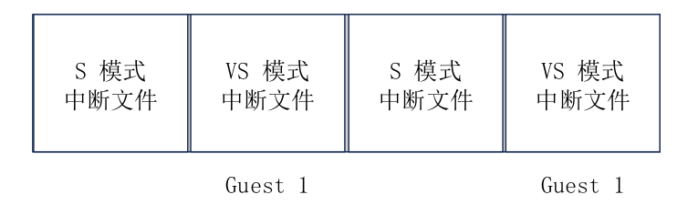

欢迎使用 hvisor!
Hello~
欢迎使用 hvisor!
hvisor是一款轻量级Type-1虚拟机监控器，使用Rust语言编写，可以提供高效的资源管理和低开销的虚拟化性能。
特点
- 跨平台支持：支持AARCH64，RISC-V，LoongArch等多种架构。
- 轻量级：专注于核心虚拟化功能，避免了传统虚拟化解决方案中的不必要复杂性，适合资源受限的环境。
- 高效：直接运行在硬件上，无需通过操作系统层，提供接近原生的性能。
- 安全性：Rust语言以其内存安全性和并发编程模型著称，有助于减少内存泄漏、数据竞争等常见的系统级编程错误。
- 快速启动：设计简洁，启动时间短，适合需要快速部署虚拟化的场景。
主要功能
- 虚拟机管理：提供创建、启动、停止和删除虚拟机的基本管理功能。
- 资源分配与隔离：支持对CPU、内存和I/O设备的高效分配和管理，通过虚拟化技术确保不同虚拟机之间的隔离，提升系统安全性和稳定性。
使用场景
- 边缘计算：适合在边缘设备上运行，为IoT和边缘计算场景提供虚拟化支持。
- 开发和测试：开发者可以快速创建和销毁虚拟机环境，用于软件开发和测试。
- 安全研究：提供一个隔离环境，用于安全研究和恶意软件分析。
hvisor 目前支持的硬件平台
- QEMU
hvisor 即将支持的硬件平台
- OKMX8MP-C
在 QEMU 上运行 hvisor
一、安装交叉编译器 aarch64-none-linux-gnu- 10.3
网址：https://developer.arm.com/downloads/-/gnu-a
工具选择：AArch64 GNU/Linux target (aarch64-none-linux-gnu)
wget https://armkeil.blob.core.windows.net/developer/Files/downloads/gnu-a/10.3-2021.07/binrel/gcc-arm-10.3-2021.07-x86_64-aarch64-none-linux-gnu.tar.xz
tar xvf gcc-arm-10.3-2021.07-x86_64-aarch64-none-linux-gnu.tar.xz
ls gcc-arm-10.3-2021.07-x86_64-aarch64-none-linux-gnu/bin/
安装完成，记住路径，例如在：/home/tools/gcc-arm-10.3-2021.07-x86_64-aarch64-none-linux-gnu/bin/aarch64-none-linux-gnu-，之后都会使用这个路径。
二、编译安装 QEMU 7.2.12
# 安装编译所需的依赖包
sudo apt install autoconf automake autotools-dev curl libmpc-dev libmpfr-dev libgmp-dev \
gawk build-essential bison flex texinfo gperf libtool patchutils bc \
zlib1g-dev libexpat-dev pkg-config libglib2.0-dev libpixman-1-dev libsdl2-dev \
git tmux python3 python3-pip ninja-build
# 下载源码
wget https://download.qemu.org/qemu-7.2.12.tar.xz
# 解压
tar xvJf qemu-7.2.12.tar.xz
cd qemu-7.2.12
#生成设置文件
./configure --enable-kvm --enable-slirp --enable-debug --target-list=aarch64-softmmu,x86_64-softmmu
#编译
make -j$(nproc)
之后编辑 ~/.bashrc 文件，在文件的末尾加入几行：
# 请注意，qemu-7.2.12 的父目录可以随着你的实际安装位置灵活调整
export PATH=$PATH:/path/to/qemu-7.2.12/build
随后即可在当前终端 source ~/.bashrc 更新系统路径，或者直接重启一个新的终端。此时可以确认 qemu 版本：
qemu-system-aarch64 --version #查看版本
注意，上述依赖包可能不全，例如：
- 出现
ERROR: pkg-config binary 'pkg-config' not found时，可以安装pkg-config包；- 出现
ERROR: glib-2.48 gthread-2.0 is required to compile QEMU时，可以安装libglib2.0-dev包；- 出现
ERROR: pixman >= 0.21.8 not present时，可以安装libpixman-1-dev包。
若生成设置文件时遇到报错 ERROR: Dependency "slirp" not found, tried pkgconfig：
下载 https://gitlab.freedesktop.org/slirp/libslirp包，并按 readme 安装即可。
三、编译 Linux Kernel 5.4
在编译 root linux 的镜像前, 在.config 文件中把 CONFIG_IPV6 和 CONFIG_BRIDGE 的 config 都改成 y, 以支持在 root linux 中创建网桥和 tap 设备。具体操作如下：
git clone https://github.com/torvalds/linux -b v5.4 --depth=1
cd linux
git checkout v5.4
# CROSS_COMPILE路径根据第一步安装交叉编译器的路径适当修改
make ARCH=arm64 CROSS_COMPILE=/root/gcc-arm-10.3-2021.07-x86_64-aarch64-none-linux-gnu/bin/aarch64-none-linux-gnu- defconfig
# 在.config中增加一行
CONFIG_BLK_DEV_RAM=y
# 修改.config的两个CONFIG参数
CONFIG_IPV6=y
CONFIG_BRIDGE=y
# 编译，CROSS_COMPILE路径根据第一步安装交叉编译器的路径适当修改
make ARCH=arm64 CROSS_COMPILE=/root/gcc-arm-10.3-2021.07-x86_64-aarch64-none-linux-gnu/bin/aarch64-none-linux-gnu- Image -j$(nproc)
如果编译 linux 时报错：
/usr/bin/ld: scripts/dtc/dtc-parser.tab.o:(.bss+0x20): multiple definition of `yylloc'; scripts/dtc/dtc-lexer.lex.o:(.bss+0x0): first defined here则修改 linux 文件夹下
scripts/dtc/dtc-lexer.lex.c，在YYLTYPE yylloc;前增加extern。再次编译，发现会报错：openssl/bio.h: No such file or directory ，此时执行sudo apt install libssl-dev
编译完毕，内核文件位于：arch/arm64/boot/Image。记住整个 linux 文件夹所在的路径，例如：home/korwylee/lgw/hypervisor/linux, 在第 7 步我们还会用到这个路径。
四、基于 ubuntu 20.04 arm64 base 构建文件系统
本部分的内容可以省略，直接下载该现成的磁盘镜像使用即可。https://blog.syswonder.org/#/2024/20240415_Virtio_devices_tutorial
我们使用 ubuntu 20.04（22.04 也可以）来构建根文件系统。
下载：ubuntu-base-20.04.5-base-arm64.tar.gz
链接：http://cdimage.ubuntu.com/ubuntu-base/releases/20.04/release/ubuntu-base-20.04.5-base-arm64.tar.gz
wget http://cdimage.ubuntu.com/ubuntu-base/releases/20.04/release/ubuntu-base-20.04.5-base-arm64.tar.gz
mkdir rootfs
# 创建一个1G大小的ubuntu.img，可以修改count修改img大小
dd if=/dev/zero of=ubuntu-20.04-rootfs_ext4.img bs=1M count=1024 oflag=direct
mkfs.ext4 ubuntu-20.04-rootfs_ext4.img
# 将ubuntu.tar.gz放入已经挂载到rootfs上的ubuntu.img中
sudo mount -t ext4 ubuntu-20.04-rootfs_ext4.img rootfs/
sudo tar -xzf ubuntu-base-20.04.5-base-arm64.tar.gz -C rootfs/
# 让rootfs绑定和获取物理机的一些信息和硬件
# qemu-path为你的qemu路径
sudo cp qemu-path/build/qemu-system-aarch64 rootfs/usr/bin/
sudo cp /etc/resolv.conf rootfs/etc/resolv.conf
sudo mount -t proc /proc rootfs/proc
sudo mount -t sysfs /sys rootfs/sys
sudo mount -o bind /dev rootfs/dev
sudo mount -o bind /dev/pts rootfs/dev/pts
# 执行该指令可能会报错，请参考下面的解决办法
sudo chroot rootfs
sudo apt-get install git sudo vim bash-completion \
kmod net-tools iputils-ping resolvconf ntpdate
# 以下由#圈住的内容可做可不做
###################
adduser arm64
adduser arm64 sudo
echo "kernel-5_4" >/etc/hostname
echo "127.0.0.1 localhost" >/etc/hosts
echo "127.0.0.1 kernel-5_4">>/etc/hosts
dpkg-reconfigure resolvconf
dpkg-reconfigure tzdata
###################
exit
sudo umount rootfs/proc
sudo umount rootfs/sys
sudo umount rootfs/dev/pts
sudo umount rootfs/dev
sudo umount rootfs
最后卸载挂载，完成根文件系统的制作。
执行
sudo chroot .时，如果报错chroot: failed to run command ‘/bin/bash’: Exec format error，可以执行指令：sudo apt-get install qemu-user-static sudo update-binfmts --enable qemu-aarch64
五、Rust 环境配置
请参考：Rust 语言圣经
六、编译和运行 hvisor
首先将hvisor 代码仓库拉到本地，之后切换到 dev 分支，并在 hvisor/images/aarch64 文件夹下，将之前编译好的根文件系统、Linux 内核镜像分别放在 virtdisk、kernel 目录下，并分别重命名为 rootfs1.ext4、Image。并在 devicetree 目录下，执行make all。
之后，在 hvisor 目录下，执行：
make ARCH=aarch64 LOG=info FEATURES=platform_qemu run
之后会进入 uboot 启动界面，该界面下执行：
bootm 0x40400000 - 0x40000000
该启动命令会从物理地址0x40400000启动 hvisor，设备树的地址为0x40000000。hvisor 启动时，会自动启动 root linux（用于管理的 Linux），并进入 root linux 的 shell 界面，root linux 即为 zone0，承担管理工作。
提示缺少
dtc时，，可以执行指令：sudo apt install device-tree-compiler
七、使用 hvisor-tool 启动 zone1-linux
首先完成最新版本的 hvisor-tool 的编译。具体请参考hvisor-tool的 README（中文版本是最新版本，英文 README 可能更新不及时）。例如，若要编译面向 arm64 的命令行工具，且 Hvisor 环境中的 Linux 镜像编译来源的源码位于 ~/linux，则可执行
make all ARCH=arm64 LOG=LOG_WARN KDIR=~/linux
请务必保证 Hvisor 中的 Linux 镜像是由编译 hvisor-tool 时参数选项中的 Linux 源码目录编译产生。
编译完成后，将 driver/hvisor.ko、tools/hvisor、driver/ivc.ko（若有该文件）复制到 image/virtdisk/rootfs1.ext4 根文件系统中启动 zone1 linux 的目录（目前是/home/arm64）；再将 zone1 的内核镜像（如果是与 zone0 相同的 Linux，复制一份 image/aarch64/kernel/Image 即可）、设备树（image/aarch64/linux2.dtb）放在 rootfs1.ext4 的相同目录（/home/arm64），并重命名为 Image、linux2.dtb。
最后将 image/aarch64/virtdisk 中的 rootfs1.ext4 原地复制一份，改名为 rootfs2.etx4。
之后在 QEMU 上即可通过 root linux-zone0 启动 zone1-linux。
启动 zone1-linux 的详细步骤参看 hvisor-tool 的 README。以下给出一个参考（以 hvisor-tool 为准），其中的 linux2.json 即为 zone1-linux 的配置文件：
#在/home/arm64目录下执行：
insmod hvisor.ko
./hvisor zone start linux2.json
安装qemu
安装QEMU 7.2.12：
wget https://download.qemu.org/qemu-7.2.12.tar.xz
# 解压
tar xvJf qemu-7.2.12.tar.xz
cd qemu-7.2.12
# 配置Riscv支持
./configure --target-list=riscv64-softmmu,riscv64-linux-user
make -j$(nproc)
#加入环境变量
export PATH=$PATH:/path/to/qemu-7.2.12/build
#测试是否安装成功
qemu-system-riscv64 --version
安装交叉编译器
riscv的交叉编译器需从riscv-gnu-toolchain获取并编译。
# 安装必要工具
sudo apt-get install autoconf automake autotools-dev curl python3 python3-pip libmpc-dev libmpfr-dev libgmp-dev gawk build-essential bison flex texinfo gperf libtool patchutils bc zlib1g-dev libexpat-dev ninja-build git cmake libglib2.0-dev libslirp-dev
git clone https://github.com/riscv/riscv-gnu-toolchain
cd riscv-gnu-toolchain
git rm qemu
git submodule update --init --recursive
#上述操作会占用超过5GB以上磁盘空间
# 如果git报网络错误，可以执行：
git config --global http.postbuffer 524288000
之后开始编译工具链：
cd riscv-gnu-toolchain
mkdir build
cd build
../configure --prefix=/opt/riscv64
sudo make linux -j $(nproc)
# 编译完成后，将工具链加入环境变量
echo 'export PATH=/opt/riscv64/bin:$PATH' >> ~/.bashrc
source ~/.bashrc
这样就得到了 riscv64-unknown-linux-gnu工具链。
编译Linux
git clone https://github.com/torvalds/linux -b v6.2 --depth=1
cd linux
git checkout v6.2
make ARCH=riscv CROSS_COMPILE=riscv64-unknown-linux-gnu- defconfig
make ARCH=riscv CROSS_COMPILE=riscv64-unknown-linux-gnu- modules -j$(nproc)
# 开始编译
make ARCH=riscv CROSS_COMPILE=riscv64-unknown-linux-gnu- Image -j$(nproc)
制作ubuntu根文件系统
wget http://cdimage.ubuntu.com/ubuntu-base/releases/20.04/release/ubuntu-base-20.04.2-base-riscv64.tar.gz
mkdir rootfs
dd if=/dev/zero of=riscv_rootfs.img bs=1M count=1024 oflag=direct
mkfs.ext4 riscv_rootfs.img
sudo mount -t ext4 riscv_rootfs.img rootfs/
sudo tar -xzf ubuntu-base-20.04.2-base-riscv64.tar.gz -C rootfs/
sudo cp /path-to-qemu/build/qemu-system-riscv64 rootfs/usr/bin/
sudo cp /etc/resolv.conf rootfs/etc/resolv.conf
sudo mount -t proc /proc rootfs/proc
sudo mount -t sysfs /sys rootfs/sys
sudo mount -o bind /dev rootfs/dev
sudo mount -o bind /dev/pts rootfs/dev/pts
sudo chroot rootfs
# 进入chroot后，安装必要的软件包：
apt-get update
apt-get install git sudo vim bash-completion \
kmod net-tools iputils-ping resolvconf ntpdate
exit
sudo umount rootfs/proc
sudo umount rootfs/sys
sudo umount rootfs/dev/pts
sudo umount rootfs/dev
sudo umount rootfs
运行hvisor
将做好的根文件系统、Linux内核镜像放在hvisor目录下的指定位置，在hvisor根目录下执行make run ARCH=riscv64即可
默认情况下使用 PLIC，执行make run ARCH=riscv64 IRQ=aia开启AIA规范
可能出现的问题
linux运行后显示/bin/sh: 0: can't access tty; job control turned off，在控制台输入bash
NXP启动Jailhouse
时间：2024/2/25 更新时间：2024/3/13
作者：杨竣轶，陈星宇
整体思路：
- 使用SD卡启动第一个Linux，这个Linux最好使用ubuntu的rootfs，并且配通网络【方便安装包】。
- 启动root Linux，并且编译一遍Linux 内核以及Jailhouse。
- 重启，修改root dtb，启动root Linux。
- jailhouse 启动nonroot Linux，该Linux是emmc上的Linux（原厂商的Linux），指定rootfs为emmc。
一、制作ubuntu SD卡镜像
wget https://cdimage.ubuntu.com/ubuntu-base/releases/18.04/release/ubuntu-base-18.04.5-base-arm64.tar.gz
tar zxvf ubuntu-base-18.04.5-base-arm64.tar.gz
cd ubuntu-base-18.04.5-base-arm64
# chroot in x86
sudo apt-get install qemu
sudo cp /usr/bin/qemu-aarch64-static usr/bin/
sudo mount /sys ./sys -o bind
sudo mount /proc ./proc -o bind
sudo mount /dev ./dev -o bind
sudo mv etc/resolv.conf etc/resolv.conf.saved
sudo cp /etc/resolv.conf etc
sudo LC_ALL=C chroot . /bin/bash
# chroot in arm
sudo arch-chroot .
sudo apt-get update
# 安装需要的包，如vim, build-essential, python3, python3-dev, gcc, g++, git, make, kmod.
sudo apt-get install <PKG_NAME>
exit
# 如果用arch-chroot不需要手动umount
sudo umount ./sys
sudo umount ./proc
sudo umount ./dev
mv etc/resolv.conf.saved etc/resolv.conf
## 另外，将Linux和jailhouse复制到SD卡中，这里改成本机路径。
sudo cp -r LINUX_DEMO ubuntu-base-18.04.5-base-arm64/home #源码路径见linux内核编译部分
sudo cp -r Jailhouse_DEMO ubuntu-base-18.04.5-base-arm64/home
# 然后将ubuntu-base-18.04.5-base-arm64目录拷进SD卡中作为rootfs。
# 建议先完成“二、编译”后再进行拷贝，也可进入系统后再进行编译
sudo fdisk -l # 确定sd卡设备名称
sudo mount /dev/sdb1 /mnt
sudo cp -r ubuntu-base-18.04.5-base-arm64 /mnt
二、编译NXP Linux 内核
源码可以从厂商提供的资料中获取（源码位置：/OKMX8MP-C_Linux5.4.70+Qt5.15.0_用户资料_R5（更新日期：20231012）/Linux/源码/OK8MP-linux-sdk/OK8MP-linux-kernel）
该步骤编译可以在chroot环境中进行，也可以先采用现成的Image和dtb先启动板子后再进行编译(官方文件里提供了一份Image和OK8MP-C.dtb)
添加root设备树
设备树存储位置为arch/arm64/boot/dts/freescale，添加新设备树OK8MP-C-root.dts，主要修改为禁用usdhc3（emmc）和uart4，并将usdhc3和usdhc2进行引脚共享，以便于启动non-root-linux
内容：
// SPDX-License-Identifier: (GPL-2.0+ OR MIT)
/*
* Copyright 2019 NXP
*/
/dts-v1/;
#include "OK8MP-C.dts"
/ {
interrupt-parent = <&gic>;
resmem: reserved-memory {
#address-cells = <2>;
#size-cells = <2>;
ranges;
};
};
&cpu_pd_wait {
/delete-property/ compatible;
};
&clk {
init-on-array = <IMX8MP_CLK_USDHC3_ROOT
IMX8MP_CLK_NAND_USDHC_BUS
IMX8MP_CLK_HSIO_ROOT
IMX8MP_CLK_UART4_ROOT
IMX8MP_CLK_OCOTP_ROOT>;
};
&{/busfreq} {
status = "disabled";
};
&{/reserved-memory} { // 预留的jailhouse内存区域
jh_reserved: jh@fdc00000 {
no-map;
reg = <0 0xfdc00000 0x0 0x400000>;
};
loader_reserved: loader@fdb00000 {
no-map;
reg = <0 0xfdb00000 0x0 0x00100000>;
};
ivshmem_reserved: ivshmem@fda00000 {
no-map;
reg = <0 0xfda00000 0x0 0x00100000>;
};
ivshmem2_reserved: ivshmem2@fd900000 {
no-map;
reg = <0 0xfd900000 0x0 0x00100000>;
};
pci_reserved: pci@fd700000 {
no-map;
reg = <0 0xfd700000 0x0 0x00200000>;
};
inmate_reserved: inmate@60000000 {
no-map;
reg = <0 0x60000000 0x0 0x10000000>;
};
};
&iomuxc {
pinctrl_uart4: uart4grp {
fsl,pins = <
MX8MP_IOMUXC_UART4_RXD__UART4_DCE_RX 0x49
MX8MP_IOMUXC_UART4_TXD__UART4_DCE_TX 0x49
>;
};
};
&usdhc3 { // emmc: mmc2，即从emmc启动的Linux，因为这个emmc是nonroot，所以root不要占用，因此要禁用掉
status = "disabled";
};
&uart4 { // 这个也禁用掉，用于nonroot启动。
/delete-property/ dmas;
/delete-property/ dma-names;
pinctrl-names = "default";
pinctrl-0 = <&pinctrl_uart4>;
status = "disabled";
};
&uart2 { // uart1=ttymxc0 uart4=ttymxc3 default for ttymxc1。
/* uart4 is used by the 2nd OS, so configure pin and clk */
pinctrl-0 = <&pinctrl_uart2>, <&pinctrl_uart4>;
assigned-clocks = <&clk IMX8MP_CLK_UART4>;
assigned-clock-parents = <&clk IMX8MP_CLK_24M>;
};
&usdhc2 {
pinctrl-0 = <&pinctrl_usdhc3>, <&pinctrl_usdhc2>, <&pinctrl_usdhc2_gpio>;
pinctrl-1 = <&pinctrl_usdhc3>, <&pinctrl_usdhc2_100mhz>, <&pinctrl_usdhc2_gpio>;
pinctrl-2 = <&pinctrl_usdhc3>, <&pinctrl_usdhc2_200mhz>, <&pinctrl_usdhc2_gpio>;
};
内核编译
# 首先参考前面chroot并进入源码目录
make OK8MP-C_defconfig # 配置默认config
make -j$(nproc) ARCH=arm64 #编译大约15分钟左右
如果gcc版本较高可能会出现yylloc的问题，可以降低版本也可以在scripts/dtc下面将dtc-lexer.lex.c_shipped里的yylloc前加上extern
jailhouse如果和内核存在定义冲突的问题以内核为准，修改jailhouse即可
编译jailhouse
jailhouse版本采用v0.12然后手动添加dts和配置文件
git checkout v0.12
.c 文件添加位置 configs/arm64
.dts 文件添加位置 configs/arm64/dts
imx8mp.c
/*
* i.MX8MM Target
*
* Copyright 2018 NXP
*
* Authors:
* Peng Fan <peng.fan@nxp.com>
*
* This work is licensed under the terms of the GNU GPL, version 2. See
* the COPYING file in the top-level directory.
*
* Reservation via device tree: reg = <0x0 0xffaf0000 0x0 0x510000>
*/
#include <jailhouse/types.h>
#include <jailhouse/cell-config.h>
struct {
struct jailhouse_system header;
__u64 cpus[1];
struct jailhouse_memory mem_regions[15];
struct jailhouse_irqchip irqchips[3];
struct jailhouse_pci_device pci_devices[2];
} __attribute__((packed)) config = {
.header = {
.signature = JAILHOUSE_SYSTEM_SIGNATURE,
.revision = JAILHOUSE_CONFIG_REVISION,
.flags = JAILHOUSE_SYS_VIRTUAL_DEBUG_CONSOLE,
.hypervisor_memory = {
.phys_start = 0xfdc00000,
.size = 0x00400000,
},
.debug_console = {
.address = 0x30890000,
.size = 0x1000,
.flags = JAILHOUSE_CON_TYPE_IMX |
JAILHOUSE_CON_ACCESS_MMIO |
JAILHOUSE_CON_REGDIST_4,
.type = JAILHOUSE_CON_TYPE_IMX,
},
.platform_info = {
.pci_mmconfig_base = 0xfd700000,
.pci_mmconfig_end_bus = 0,
.pci_is_virtual = 1,
.pci_domain = 0,
.arm = {
.gic_version = 3,
.gicd_base = 0x38800000,
.gicr_base = 0x38880000,
.maintenance_irq = 25,
},
},
.root_cell = {
.name = "imx8mp",
.num_pci_devices = ARRAY_SIZE(config.pci_devices),
.cpu_set_size = sizeof(config.cpus),
.num_memory_regions = ARRAY_SIZE(config.mem_regions),
.num_irqchips = ARRAY_SIZE(config.irqchips),
/* gpt5/4/3/2 not used by root cell */
.vpci_irq_base = 51, /* Not include 32 base */
},
},
.cpus = {
0xf,
},
.mem_regions = {
/* IVHSMEM shared memory region for 00:00.0 (demo )*/ {
.phys_start = 0xfd900000,
.virt_start = 0xfd900000,
.size = 0x1000,
.flags = JAILHOUSE_MEM_READ,
},
{
.phys_start = 0xfd901000,
.virt_start = 0xfd901000,
.size = 0x9000,
.flags = JAILHOUSE_MEM_READ | JAILHOUSE_MEM_WRITE ,
},
{
.phys_start = 0xfd90a000,
.virt_start = 0xfd90a000,
.size = 0x2000,
.flags = JAILHOUSE_MEM_READ | JAILHOUSE_MEM_WRITE ,
},
{
.phys_start = 0xfd90c000,
.virt_start = 0xfd90c000,
.size = 0x2000,
.flags = JAILHOUSE_MEM_READ,
},
{
.phys_start = 0xfd90e000,
.virt_start = 0xfd90e000,
.size = 0x2000,
.flags = JAILHOUSE_MEM_READ,
},
/* IVSHMEM shared memory regions for 00:01.0 (networking) */
JAILHOUSE_SHMEM_NET_REGIONS(0xfda00000, 0),
/* IO */ {
.phys_start = 0x00000000,
.virt_start = 0x00000000,
.size = 0x40000000,
.flags = JAILHOUSE_MEM_READ | JAILHOUSE_MEM_WRITE |
JAILHOUSE_MEM_IO,
},
/* RAM 00*/ {
.phys_start = 0x40000000,
.virt_start = 0x40000000,
.size = 0x80000000,
.flags = JAILHOUSE_MEM_READ | JAILHOUSE_MEM_WRITE |
JAILHOUSE_MEM_EXECUTE,
},
/* Inmate memory */{
.phys_start = 0x60000000,
.virt_start = 0x60000000,
.size = 0x10000000,
.flags = JAILHOUSE_MEM_READ | JAILHOUSE_MEM_WRITE |
JAILHOUSE_MEM_EXECUTE | JAILHOUSE_MEM_DMA,
},
/* Loader */{
.phys_start = 0xfdb00000,
.virt_start = 0xfdb00000,
.size = 0x100000,
.flags = JAILHOUSE_MEM_READ | JAILHOUSE_MEM_WRITE |
JAILHOUSE_MEM_EXECUTE,
},
/* OP-TEE reserved memory?? */{
.phys_start = 0xfe000000,
.virt_start = 0xfe000000,
.size = 0x2000000,
.flags = JAILHOUSE_MEM_READ | JAILHOUSE_MEM_WRITE,
},
/* RAM04 */{
.phys_start = 0x100000000,
.virt_start = 0x100000000,
.size = 0xC0000000,
.flags = JAILHOUSE_MEM_READ | JAILHOUSE_MEM_WRITE,
},
},
.irqchips = {
/* GIC */ {
.address = 0x38800000,
.pin_base = 32,
.pin_bitmap = {
0xffffffff, 0xffffffff, 0xffffffff, 0xffffffff,
},
},
/* GIC */ {
.address = 0x38800000,
.pin_base = 160,
.pin_bitmap = {
0xffffffff, 0xffffffff, 0xffffffff, 0xffffffff,
},
},
/* GIC */ {
.address = 0x38800000,
.pin_base = 288,
.pin_bitmap = {
0xffffffff, 0xffffffff, 0xffffffff, 0xffffffff,
},
},
},
.pci_devices = {
{ /* IVSHMEM 0000:00:00.0 (demo) */
.type = JAILHOUSE_PCI_TYPE_IVSHMEM,
.domain = 0,
.bdf = 0 << 3,
.bar_mask = JAILHOUSE_IVSHMEM_BAR_MASK_INTX,
.shmem_regions_start = 0,
.shmem_dev_id = 0,
.shmem_peers = 3,
.shmem_protocol = JAILHOUSE_SHMEM_PROTO_UNDEFINED,
},
{ /* IVSHMEM 0000:00:01.0 (networking) */
.type = JAILHOUSE_PCI_TYPE_IVSHMEM,
.domain = 0,
.bdf = 1 << 3,
.bar_mask = JAILHOUSE_IVSHMEM_BAR_MASK_INTX,
.shmem_regions_start = 5,
.shmem_dev_id = 0,
.shmem_peers = 2,
.shmem_protocol = JAILHOUSE_SHMEM_PROTO_VETH,
},
},
};
imx8mp-linux-demo.c
/*
* iMX8MM target - linux-demo
*
* Copyright 2019 NXP
*
* Authors:
* Peng Fan <peng.fan@nxp.com>
*
* This work is licensed under the terms of the GNU GPL, version 2. See
* the COPYING file in the top-level directory.
*/
/*
* Boot 2nd Linux cmdline:
* export PATH=$PATH:/usr/share/jailhouse/tools/
* jailhouse cell linux imx8mp-linux-demo.cell Image -d imx8mp-evk-inmate.dtb -c "clk_ignore_unused console=ttymxc3,115200 earlycon=ec_imx6q,0x30890000,115200 root=/dev/mmcblk2p2 rootwait rw"
*/
#include <jailhouse/types.h>
#include <jailhouse/cell-config.h>
struct {
struct jailhouse_cell_desc cell;
__u64 cpus[1];
struct jailhouse_memory mem_regions[15];
struct jailhouse_irqchip irqchips[2];
struct jailhouse_pci_device pci_devices[2];
} __attribute__((packed)) config = {
.cell = {
.signature = JAILHOUSE_CELL_DESC_SIGNATURE,
.revision = JAILHOUSE_CONFIG_REVISION,
.name = "linux-inmate-demo",
.flags = JAILHOUSE_CELL_PASSIVE_COMMREG,
.cpu_set_size = sizeof(config.cpus),
.num_memory_regions = ARRAY_SIZE(config.mem_regions),
.num_irqchips = ARRAY_SIZE(config.irqchips),
.num_pci_devices = ARRAY_SIZE(config.pci_devices),
.vpci_irq_base = 154, /* Not include 32 base */
},
.cpus = {
0xc,
},
.mem_regions = {
/* IVHSMEM shared memory region for 00:00.0 (demo )*/ {
.phys_start = 0xfd900000,
.virt_start = 0xfd900000,
.size = 0x1000,
.flags = JAILHOUSE_MEM_READ | JAILHOUSE_MEM_ROOTSHARED,
},
{
.phys_start = 0xfd901000,
.virt_start = 0xfd901000,
.size = 0x9000,
.flags = JAILHOUSE_MEM_READ | JAILHOUSE_MEM_WRITE |
JAILHOUSE_MEM_ROOTSHARED,
},
{
.phys_start = 0xfd90a000,
.virt_start = 0xfd90a000,
.size = 0x2000,
.flags = JAILHOUSE_MEM_READ | JAILHOUSE_MEM_ROOTSHARED,
},
{
.phys_start = 0xfd90c000,
.virt_start = 0xfd90c000,
.size = 0x2000,
.flags = JAILHOUSE_MEM_READ | JAILHOUSE_MEM_ROOTSHARED,
},
{
.phys_start = 0xfd90e000,
.virt_start = 0xfd90e000,
.size = 0x2000,
.flags = JAILHOUSE_MEM_READ | JAILHOUSE_MEM_WRITE |
JAILHOUSE_MEM_ROOTSHARED,
},
/* IVSHMEM shared memory regions for 00:01.0 (networking) */
JAILHOUSE_SHMEM_NET_REGIONS(0xfda00000, 1),
/* UART2 earlycon */ {
.phys_start = 0x30890000,
.virt_start = 0x30890000,
.size = 0x1000,
.flags = JAILHOUSE_MEM_READ | JAILHOUSE_MEM_WRITE |
JAILHOUSE_MEM_IO | JAILHOUSE_MEM_ROOTSHARED,
},
/* UART4 */ {
.phys_start = 0x30a60000,
.virt_start = 0x30a60000,
.size = 0x1000,
.flags = JAILHOUSE_MEM_READ | JAILHOUSE_MEM_WRITE |
JAILHOUSE_MEM_IO,
},
/* SHDC3 */ {
.phys_start = 0x30b60000,
.virt_start = 0x30b60000,
.size = 0x10000,
.flags = JAILHOUSE_MEM_READ | JAILHOUSE_MEM_WRITE |
JAILHOUSE_MEM_IO,
},
/* RAM: Top at 4GB Space */ {
.phys_start = 0xfdb00000,
.virt_start = 0,
.size = 0x10000, /* 64KB */
.flags = JAILHOUSE_MEM_READ | JAILHOUSE_MEM_WRITE |
JAILHOUSE_MEM_EXECUTE | JAILHOUSE_MEM_LOADABLE,
},
/* RAM */ {
/*
* We could not use 0x80000000 which conflicts with
* COMM_REGION_BASE
*/
.phys_start = 0x60000000,
.virt_start = 0x60000000,
.size = 0x10000000,
.flags = JAILHOUSE_MEM_READ | JAILHOUSE_MEM_WRITE |
JAILHOUSE_MEM_EXECUTE | JAILHOUSE_MEM_DMA |
JAILHOUSE_MEM_LOADABLE,
},
/* communication region */ {
.virt_start = 0x80000000,
.size = 0x00001000,
.flags = JAILHOUSE_MEM_READ | JAILHOUSE_MEM_WRITE |
JAILHOUSE_MEM_COMM_REGION,
},
},
.irqchips = {
/* uart2/sdhc1 */ {
.address = 0x38800000,
.pin_base = 32,
.pin_bitmap = {
(1 << (24 + 32 - 32)) | (1 << (29 + 32 - 32))
},
},
/* IVSHMEM */ {
.address = 0x38800000,
.pin_base = 160,
.pin_bitmap = {
0xf << (154 + 32 - 160) /* SPI 154-157 */
},
},
},
.pci_devices = {
{ /* IVSHMEM 00:00.0 (demo) */
.type = JAILHOUSE_PCI_TYPE_IVSHMEM,
.domain = 0,
.bdf = 0 << 3,
.bar_mask = JAILHOUSE_IVSHMEM_BAR_MASK_INTX,
.shmem_regions_start = 0,
.shmem_dev_id = 2,
.shmem_peers = 3,
.shmem_protocol = JAILHOUSE_SHMEM_PROTO_UNDEFINED,
},
{ /* IVSHMEM 00:01.0 (networking) */
.type = JAILHOUSE_PCI_TYPE_IVSHMEM,
.domain = 0,
.bdf = 1 << 3,
.bar_mask = JAILHOUSE_IVSHMEM_BAR_MASK_INTX,
.shmem_regions_start = 5,
.shmem_dev_id = 1,
.shmem_peers = 2,
.shmem_protocol = JAILHOUSE_SHMEM_PROTO_VETH,
},
},
};
non-root imx8mp-evk-inmate.dts
// SPDX-License-Identifier: (GPL-2.0+ OR MIT)
/*
* Copyright 2019 NXP
*/
/dts-v1/;
#include <dt-bindings/interrupt-controller/arm-gic.h>
/ {
model = "Freescale i.MX8MP EVK";
compatible = "fsl,imx8mp-evk", "fsl,imx8mp";
interrupt-parent = <&gic>;
#address-cells = <2>;
#size-cells = <2>;
aliases {
serial3 = &uart4;
mmc2 = &usdhc3;
};
cpus {
#address-cells = <1>;
#size-cells = <0>;
A53_2: cpu@2 {
device_type = "cpu";
compatible = "arm,cortex-a53";
reg = <0x2>;
clock-latency = <61036>; /* two CLK32 periods */
next-level-cache = <&A53_L2>;
enable-method = "psci";
#cooling-cells = <2>;
};
A53_3: cpu@3 {
device_type = "cpu";
compatible = "arm,cortex-a53";
reg = <0x3>;
clock-latency = <61036>; /* two CLK32 periods */
next-level-cache = <&A53_L2>;
enable-method = "psci";
#cooling-cells = <2>;
};
A53_L2: l2-cache0 {
compatible = "cache";
};
};
psci {
compatible = "arm,psci-1.0";
method = "smc";
};
gic: interrupt-controller@38800000 {
compatible = "arm,gic-v3";
reg = <0x0 0x38800000 0 0x10000>, /* GIC Dist */
<0x0 0x38880000 0 0xC0000>; /* GICR (RD_base + SGI_base) */
#interrupt-cells = <3>;
interrupt-controller;
interrupts = <GIC_PPI 9 IRQ_TYPE_LEVEL_HIGH>;
interrupt-parent = <&gic>;
};
timer {
compatible = "arm,armv8-timer";
interrupts = <GIC_PPI 13 (GIC_CPU_MASK_SIMPLE(6) | IRQ_TYPE_LEVEL_LOW)>, /* Physical Secure */
<GIC_PPI 14 (GIC_CPU_MASK_SIMPLE(6) | IRQ_TYPE_LEVEL_LOW)>, /* Physical Non-Secure */
<GIC_PPI 11 (GIC_CPU_MASK_SIMPLE(6) | IRQ_TYPE_LEVEL_LOW)>, /* Virtual */
<GIC_PPI 10 (GIC_CPU_MASK_SIMPLE(6) | IRQ_TYPE_LEVEL_LOW)>; /* Hypervisor */
clock-frequency = <8333333>;
};
clk_dummy: clock@7 {
compatible = "fixed-clock";
#clock-cells = <0>;
clock-frequency = <0>;
clock-output-names = "clk_dummy";
};
/* The clocks are configured by 1st OS */
clk_400m: clock@8 {
compatible = "fixed-clock";
#clock-cells = <0>;
clock-frequency = <200000000>;
clock-output-names = "200m";
};
clk_266m: clock@9 {
compatible = "fixed-clock";
#clock-cells = <0>;
clock-frequency = <266000000>;
clock-output-names = "266m";
};
osc_24m: clock@1 {
compatible = "fixed-clock";
#clock-cells = <0>;
clock-frequency = <24000000>;
clock-output-names = "osc_24m";
};
pci@fd700000 {
compatible = "pci-host-ecam-generic";
device_type = "pci";
bus-range = <0 0>;
#address-cells = <3>;
#size-cells = <2>;
#interrupt-cells = <1>;
interrupt-map-mask = <0 0 0 7>;
interrupt-map = <0 0 0 1 &gic GIC_SPI 154 IRQ_TYPE_EDGE_RISING>,
<0 0 0 2 &gic GIC_SPI 155 IRQ_TYPE_EDGE_RISING>,
<0 0 0 3 &gic GIC_SPI 156 IRQ_TYPE_EDGE_RISING>,
<0 0 0 4 &gic GIC_SPI 157 IRQ_TYPE_EDGE_RISING>;
reg = <0x0 0xfd700000 0x0 0x100000>;
ranges = <0x02000000 0x00 0x10000000 0x0 0x10000000 0x00 0x10000>;
};
soc@0 {
compatible = "simple-bus";
#address-cells = <1>;
#size-cells = <1>;
ranges = <0x0 0x0 0x0 0x3e000000>;
aips3: bus@30800000 {
compatible = "simple-bus";
reg = <0x30800000 0x400000>;
#address-cells = <1>;
#size-cells = <1>;
ranges;
uart4: serial@30a60000 {
compatible = "fsl,imx8mp-uart", "fsl,imx6q-uart";
reg = <0x30a60000 0x10000>;
interrupts = <GIC_SPI 29 IRQ_TYPE_LEVEL_HIGH>;
status = "disabled";
};
usdhc3: mmc@30b60000 {
compatible = "fsl,imx8mm-usdhc", "fsl,imx7d-usdhc";
reg = <0x30b60000 0x10000>;
interrupts = <GIC_SPI 24 IRQ_TYPE_LEVEL_HIGH>;
fsl,tuning-start-tap = <20>;
fsl,tuning-step= <2>;
status = "disabled";
};
};
};
};
&uart4 {
clocks = <&osc_24m>,
<&osc_24m>;
clock-names = "ipg", "per";
status = "okay";
};
&usdhc3 {
clocks = <&clk_dummy>,
<&clk_266m>,
<&clk_400m>;
clock-names = "ipg", "ahb", "per";
bus-width = <8>;
non-removable;
status = "okay";
};
编译jailhouse命令如下，KDIR是指定jailhouse运行环境内核，因为部分dts文件需要配合内核中的文件进行，如果将所有dts挪到内核编译可以不指定KDIR
make -j($nproc) ARCH=arm64 KDIR=/home/ubuntu-base-18.04.5-base-arm64
三、启动Linux
实际上启动只需要一个Image和一个dtb即可，也可以使用已经编译好的文件直接启动
把sd卡插入，拨码开关选择TF模式，连接串口后在启动时按住空格进入uboot模式，选择1进入uboot shell
uboot指令如下:
setenv mmcroot /dev/mmcblk1p1 rootwait rw; setenv fdt_file OK8MP-C-root.dtb; run mmcargs; ext4load mmc 1:1 ${loadaddr} home/OK8MP-linux-kernel/arch/arm64/boot/Image; ext4load mmc 1:1 ${fdt_addr} home/OK8MP-linux-kernel/arch/arm64/boot/dts/freescale/OK8MP-C-root.dtb; booti ${loadaddr} - ${fdt_addr}
解释：
指令中的以下部分均按照本机实际修改地址，如果不确定文件位置可以用ext4ls mmc 1:1 /等指令查看具体位置。出现问题最好把指令拆开一句句试验。
mmcblk1p1: SD卡ext4文件系统分区
OK8MP-C-root.dtb：所采用的dtb
home/OK8MP_linux_kernel/arch/arm64/boot/Image：Image路径
home/OK8MP_linux_kernel/arch/arm64/boot/dts/freescale/OK8MP-C-root.dtb：dtb路径
成功启动后进入命令行，此时插入网线即可联网，可配置环境，安装软件，编译代码等，如果没有网络，因为我们提前编译好了内容也可以正常进行后续操作。
四、根据需要安装内核与jailhouse（可跳过）
su #进入系统后会发现环境有问题，因为之前到软件都是安装到root用户下的，需要先切到root
cd /home/ubuntu-base-18.04.5-base-arm64
make && make install
cd /home/jailhouse && make && make install
# 因为jailhouse安装需要重新编译，如果编译环境有问题可以只复制bin文件到firmware即可，如下
sudo cp /home/jailhouse/hypervisor/jailhouse.bin /lib/firmware
五、启动nonroot
连接硬件：打开两个串口窗口。
cat non.sh
#!/bin/bash
insmod /home/jailhouse/driver/jailhouse.ko
jailhouse disabled
jailhouse enable /home/jailhouse/configs/arm64/imx8mp.cell
export PATH=$PATH:/home/jailhouse/tools/
jailhouse cell linux /home/jailhouse/configs/arm64/imx8mp-linux-demo.cell /home/OK8MP_linux_kernel/arch/arm64/boot/Image -d /home/OK8MP_linux_kernel/arch/arm64/boot/dts/freescale/imx8mp-evk-inmate.dtb -c "clk_ignore_unused console=ttymxc3,115200 earlycon=ec_imx6q,0x30890000,115200 root=/dev/mmcblk2p2 rootwait rw"
```%
FPGA zcu102
Author: 杨竣轶(Jerry) github.com/comet959
# Before, Install vivado 2022.2 software
# Ubuntu 20.04 can work fine
sudo apt update
git clone https://github.com/U-interrupt/uintr-rocket-chip.git
cd uintr-rocket-chip
git submodule update --init --recursive
export RISCV=/opt/riscv64
git checkout 98e9e41
vim digilent-vivado-script/config.ini # Env Config
make checkout
make clean
make build
# Use vivado to open the vivado project, then change the top file, run synthesis, run implementation, generate bitstream.
# Connect the zcu102 - Jtag and Uart on your PC.
# Use dd command to flash the image include boot and rootfs part.
# Change the boot button mode to (On Off Off Off)
# Boot the power.
sudo screen /dev/ttyUSB0 115200 # Aarch64 Core Uart
sudo screen /dev/ttyUSB2 115200 # Riscv Core Uart
# On /dev/ttyUSB0
cd uintr-rocket-chip
./load-and-reset.sh
# Focus on ttyUSB2, then you will see the Riscv Linux Boot Msg.
在RocketChip中开启H扩展
vim path/to/repo/common/src/main/scala/Configs.scala
// change
class UintrConfig extends Config(
new WithNBigCores(4) ++
new WithNExtTopInterrupts(6) ++
new WithTimebase((BigInt(10000000))) ++ // 10 MHz
new WithDTS("freechips.rocketchip-unknown", Nil) ++
new WithUIPI ++
new WithCustomBootROM(0x10000, "../common/boot/bootrom/bootrom.img") ++
new WithDefaultMemPort ++
new WithDefaultMMIOPort ++
new WithDefaultSlavePort ++
new WithoutTLMonitors ++
new WithCoherentBusTopology ++
new BaseSubsystemConfig
)
// to
class UintrConfig extends Config(
new WithHypervisor ++
new WithNBigCores(4) ++
new WithNExtTopInterrupts(6) ++
new WithTimebase((BigInt(10000000))) ++ // 10 MHz
new WithDTS("freechips.rocketchip-unknown", Nil) ++
new WithUIPI ++
new WithCustomBootROM(0x10000, "../common/boot/bootrom/bootrom.img") ++
new WithDefaultMemPort ++
new WithDefaultMMIOPort ++
new WithDefaultSlavePort ++
new WithoutTLMonitors ++
new WithCoherentBusTopology ++
new BaseSubsystemConfig
)
在龙芯3A5000主板（7A2000）上启动hvisor
更新时间：2024.12.4
第一步：获取hvisor源码并编译
克隆代码到本地：
git clone -b dev-loongarch https://github.com/syswonder/hvisor # dev-loongarch分支
make ARCH=loongarch64
编译完成后在target目录下可以找到strip之后的hvisor.bin（编译输出的最后一行会显示文件路径）。
获取vmlinux.bin镜像
请从https://github.com/enkerewpo/linux-hvisor-loongarch64/releases下载最新发布的hvisor默认龙芯linux镜像（包括root linux kernel+root linux dtb+root linux rootfs，其中root linux rootfs中包括non root linux+nonroot linux dtb+nonroot linux rootfs）。如果你需要自行编译linux kernel以及rootfs，可参考该仓库的arch/loongarch目录中hvisor相关设备树以及我为3A5000移植的buildroot环境（https://github.com/enkerewpo/buildroot-loongarch64）。如果你需要手动编译hvisor-tool，请参考https://github.com/enkerewpo/hvisor-tool，关于所有环境的编译顺序和脚本调用流程请参考Makefile.1文件中world目标内的代码（https://github.com/enkerewpo/hvisor_uefi_packer/blob/main/Makefile.1），并通过运行./make_world脚本编译所有东西，如果你需要手动编译这些，则需要在Makefile.1内修改对应的代码路径变量，包括：
HVISOR_LA64_LINUX_DIR = ../hvisor-la64-linux
BUILDROOT_DIR = ../buildroot-loongarch64
HVISOR_TOOL_DIR = ../hvisor-tool
然后运行 ./make_world，请注意，第一次编译linux和buildroot的时间可能相当长（可能长达几十分钟，取决于你的机器性能）。
获取hvisor UEFI Image Packer
由于3A5000以及之后的3系CPU的主板均采用UEFI启动，所以只能通过efi镜像的方法启动hvisor，克隆仓库https://github.com/enkerewpo/hvisor_uefi_packer到本地：
make menuconfig # 配置为你本地的loongarch64 gcc工具链前缀、hvisor.bin路径、vmlinux.bin路径
# 修改make_image中的HVISOR_SRC_DIR=../hvisor为你实际保存hvisor源码的路径，之后再运行脚本
./make_image
# 得到 BOOTLOONGARCH64.EFI 文件
得到的BOOTLOONGARCH64.EFI必须放在U盘的第一个FAT32分区的/EFI/BOOT/BOOTLOONGARCH64.EFI位置。然后插入U盘启动即可进入hvisor并自动启动root linux。
由于root linux相关的元信息（加载地址，内存区域等）硬编码在hvisor源码中（src/platform/ls3a5000_loongarch64.rs），如果你是手动编译linux内核，则需要修改这里的配置再重新编译hvisor。
上板启动
主板上电开机，按 F12 进入UEFI Boot Menu，选择你插入的U盘后回车，会自动启动hvisor，并进入root linux的bash环境。
启动nonroot
如果你使用的是release中提供的相关镜像，启动后在root linux的bash内输入：
./daemon.sh
./linux2_virtio.sh
之后会自动启动nonroot（一些相关配置文件位于root linux的/tool目录内，包括提供给hvisor-tool的nonroot zone配置json以及virtio配置json文件），之后回自动打开一个screen进程连接nonroot linux的virtio-console，你会看到一个打印了nonroot字样的bash出现，你可以在使用screen时按CTRL+A D快捷键detach（请记住显示的screen session名称），此时会返回root linux，如果希望返回nonroot linux，则运行
screen -r {刚才的session全名 或者 只输入最前面的数字}
之后会返回nonroot linux的bash。
此目录主要与 ZCU102 相关，介绍如下：
- 如何使用 Qemu 仿真 Xilinx ZynqMP ZCU102
- 如何在 Qemu ZCU102 和 ZCU102 实体开发板上启动 hvisor root linux 和 nonroot linux。
Qemu ZCU102 hvisor 启动
安装 Petalinux
- 安装 Petalinux 2024.1 请注意，本文以 2024.1 为例进行介绍，并不意味着其他版本不可以，只是其他版本未经验证，且测试中发现 Petalinux 对于操作系统有较强的依赖，请安装适合于自己操作系统的对应版本的 Petalinux.
- 将下载好的
petalinux.run文件放置到想要安装到的目录下，为其添加执行权限，之后直接./petalinux.run运行安装程序。 - 安装程序会自动检测所需要的环境，如果不符合则会将缺失的环境提示出来，只需要对其一个个
apt insntall即可。 - 安装完成后每次使用 Petalinux 前需要进入安装目录，手动
source settings.sh来添加环境变量，嫌麻烦将可以将该命令加入到~/.bashrc中
安装 ZCU102 BSP
- 下载对应于 Petalinux 版本的 BSP，例子中是 ZCU102 BSP 2024.1
- 激活 Petalinux 环境，即在 Petalinux 安装目录中
source settings.sh。 - 基于 BSP 创建 Petalinux Project:
petalinux-create -t project -s xilinx-zcu102-v2024.1-05230256.bsp - 此时会创建一个
xilinx-zcu102-2024.1文件夹，其中就有了 QEMU 模拟 ZCU102 所需的参数（设备树），以及预先编译好可以直接上板的 Linux 镜像、设备树、Uboot等。
编译 Hvisor
参照《在 Qemu 上运行 Hvisor》对编译 Hvisor 所需的环境进行配置，之后在 hvisor 目录下，执行：
make ARCH=aarch64 LOG=info FEATURES=platform_zcu102,gicv2 cp
进行编译工作，目录下/target/aarch64-unknown-none（可能不同）/debug/hvisor，即为所需求的 hvisor 镜像。
准备设备树
使用现有设备树
在 Hvisor 的 image/devicetree 目录下，有 zcu102-root-aarch64.dts，其为已经经过测试用来启动RootLinux的设备树文件，对其进行编译即可。
dtc -I dts -O dtb -o zcu102-root-aarch64.dtb zcu102-root-aarch64.dts
如果 dtc 命令无效，则安装 device-tree-compiler。
sudo apt-get install device-tree-compiler
自行准备设备树
如果对设备有定制需求，则建议自行准备设备树，可以反编译 ZCU102 BSP 中的 pre-built/linux/images/system.dtb 获取完整设备树，基于 zcu102-root-aarch64.dts 进行增减。
准备镜像
使用现有镜像
建议直接使用 ZCU102 BSP 中的 pre-built/linux/images/Image 作为 Linux 内核在 ZCU102 上启动，其驱动配置完整。
自行编译
经过测试，linux 源码中 5.15 之前对于 ZYNQMP 的支持不全面，不建议自行编译时使用这之前的版本进行编译，在之后的版本进行编译时可以直接按照一般编译流程进行编译，因为源码对于 ZYNQMP 的基本支持默认开启。具体编译操作如下：
- 访问 linux-xlnx 官网下载 Linux 源码，下载时最好下载
zynqmp-soc-for-v6.3。 tar -xvf zynqmp-soc-for-v6.3解压源码- 进入解压好的目录，执行下述命令使用默认配置，
make ARCH=arm64 CROSS_COMPILE=aarch64-linux-gnu- defconfig - 进行编译：
make ARCH=arm64 CROSS_COMPILE=aarch64-linux-gnu- Image -j$(nproc) - 编译完成后，目录中
arch/arm64/boot/Image即为所需镜像。
启用 QEMU 仿真
- 激活 Petalinux 环境，即在Petalinux 安装目录中
source settings.sh。 - 进入
xilinx-zcu102-2024.1文件夹，使用下述命令即可在 QEMU仿真的 ZCU102上启动 hvisor，其中的文件路径需要按照自己的实际情况进行修改。
# QEMU 参数传递
petalinux-boot --qemu --prebuilt 2 --qemu-args '-device loader,file=hvisor,addr=0x40400000,force-raw=on -device loader,
file=zcu102-root-aarch64.dtb,addr=0x40000000,force-raw=on -device loader,file=zcu102-root-aarch64.dtb,addr=0x04000000,
force-raw=on -device loader,file=/home/hangqi-ren/Image,addr=0x00200000,force-raw=on -drive if=sd,format=raw,index=1,
file=rootfs.ext4'
# 启动 hvisor
bootm 0x40400000 - 0x40000000
Board ZCU102 hvisor 多模式启动
在 ZCU102 开发板 SD mode 下启动 Hvisor
准备 SD 卡
- 准备一块标准 SD 卡，对其进行分区，一块为 Boot 分区（FAT32），其余为文件系统分区（EXT4），windows 分区可以使用 DiskGenius，Linux 分区可以使用 fdisk、mkfs
- 准备一个文件系统，将其内容拷贝到任一文件系统分区中，可以参考 《NXPIMX8》 制作 Ubuntu 文件系统、也可以直接使用 ZCU102 BSP 中的文件系统。
- 将
zcu102-root-aarch64.dtb、Image、hvisor拷贝到 Boot 分区中。 - 在 SD mode 下，需要提供从 SD卡中提供 ATF、Uboot，因此将 ZCU102 BSP 中
pre-built/linux/images/boot.scr 和 BOOT.BIN拷贝到 BOOT 分区中。
启动 ZCU102
- 将 ZCU102 设置为 SD mode，插入 SD 卡，连接串口，上电
- 输入任意按键打断 Uboot 自动脚本执行，运行下述命令启动 hvisor 及 root linux:
fatload mmc 0:1 0x40400000 hvisor;fatload mmc 0:1 0x40000000 zcu102-root-aarch64.dtb
fatload mmc 0:1 0x04000000 zcu102-root-aarch64.dtb;fatload mmc 0:1 0x00200000 Image;bootm 0x40400000 - 0x40000000
- 如果成功启动，将可以在串口看到 hvisor 信息以及 linux 信息，最终进入文件系统。
在 ZCU102 开发板 Jtag mode 下启动 Hvisor
首先将板子附带的两个线缆连接到板子的 JTAG 和 UART 接口上，另一端通过 USB 连接到 PC。
然后在命令行打开一个 petalinux 工程，确保工程已经编译过并生成了对应的启动文件（vmlinux、BOOT.BIN等），之后进入工程根目录运行 [1]：
petalinux-boot --jtag --prebuilt 2
其中 prebuilt 代表启动的层次：
- Level 1: 只下载 FPGA bitstream，启动 FSBL 和 PMUFW
- Level 2: 下载 FPGA bitstream 并启动 UBOOT，并启动 FSBL、PMUFW 和 TF-A（Trusted Firmware-A [2]）
- Level 3: 下载并启动 linux，并加载或启动 FPGA bitstream、FSBL、PMUFW、TF-A、UBOOT
之后 JTAG 会通过 JTAG 线把对应的文件下载到板子上（保存到指的内存地址），并启动对应的 bootloader，具体官方的 UBOOT 默认脚本参见工程镜像目录的 boot.scr 文件。
由于 hvisor 需要单独的 UBOOT 命令和自制的 fitImage 启动，请参考 UBOOT FIT 镜像制作、加载与启动。
制作好 fitImage 后，请替换 petalinux images生成目录内的文件（Image.ub），使得 JTAG 加载我们自己制作的 fitImage 到 petalinux 工程配置好的默认 FIT 镜像加载地址，这样 JTAG 启动时会将我们的 fitImage 通过 JTAG 线加载到板子内存对应的地址中，之后再通过 uboot 命令行 extract 和 bootm。
另一个 UART 线可用于以观察 ZCU102 板子的输出（包括 FSBL、UBOOT、linux 等输出），可以通过 screen / gtkterm / termius / minicom 等串口工具查看。
请注意
由于 petalinux 规定了一些固定内存地址，如 linux kernel、fitImage、DTB 的默认加载地址（可在 petalinux 编译工程时配置），由于我们需要加载启动自制的 fitImage，目前发现的问题是如果 root linux dtb 在 its 中所写的加载地址和 petalinux 编译时的加载地址一致，会导致该 dtb 被覆盖为默认的 petalinux dtb，从而导致root linux接受到错误的 dtb 而无法启动。因此需要在编译时指定和 petalinux 默认 dtb/fitImage 加载地址不同的地址，以防止出现其他问题。
参考文献
[1] PetaLinux Tools Documentation: Reference Guide (UG1144).https://docs.amd.com/r/2023.1-English/ug1144-petalinux-tools-reference-guide/Booting-a-PetaLinux-Image-on-Hardware-with-JTAG [2] Trusted Firmware-A Documentation.https://trustedfirmware-a.readthedocs.io/en/latest/
ZCU102 NonRoot 启动
- 使用启动 Root 时所用的 Linux 内核源码编译 hvisor-tool，详细编译流程可以参考 Readme.
- 准备启动 NonRoot 所需要的
virtio_cfg.json和zone1_linux.json，这里可以直接使用 hvisor-tool 目录下的example/zcu102-aarch64，里面的内容已经经过验证，确保可以启动。 - 准备 NonRoot 所需要的 linux 内核 Image，文件系统 rootfs，以及设备树 linux1.dtb。其中的内核和文件系统可以和 Root 一样，Linux1.dtb 则是按需配置，也可以使用 hvisor 目录下的
images/aarch64/devicetree/zcu102-nonroot-aarch64.dts. - 将
hvisor.ko, hvisor, virtio_cfg, zone1_linux.json, linux1.dtb, Image, rootfs.ext4拷贝到 Root Linux 所用的文件系统中。 - 在 RootLinux 输入下述命令启动 NonRoot:
# 加载内核模块
insmod hvisor.ko
# 创建 virtio 设备
nohup ./hvisor virtio start virtio_cfg.json &
# 根据 json 配置文件启动 NonRoot
./hvisor zone start zone1_linux.json
# 查看 NonRoot 的输出，并交互。
screen /dev/pts/0
更多操作细节参考 hvisor-tool Readme
UBOOT FIT 镜像制作、加载与启动
wheatfox (enkerewpo@hotmail.com)
本文介绍 FIT 镜像相关的基本知识，以及如何制作、加载和启动 FIT 镜像。
ITS 源文件
ITS 是 uboot 生成 FIT 镜像（FIT Image）的源码，即 Image Tree Source，其采用 Device Tree Source（DTS）语法格式，可以通过 uboot 提供的工具 mkimage 生成 FIT 镜像。
在 hvisor 的 ZCU102 移植中，使用 FIT 镜像打包 hvisor、root linux、root dtb 等文件到一个 fitImage 中，便于在 QEMU 和实际硬件上启动。
用于 ZCU102 平台的 ITS 文件位于 scripts/zcu102-aarch64-fit.its:
/dts-v1/;
/ {
description = "FIT image for HVISOR with Linux kernel, root filesystem, and DTB";
images {
root_linux {
description = "Linux kernel";
data = /incbin/("__ROOT_LINUX_IMAGE__");
type = "kernel";
arch = "arm64";
os = "linux";
...
};
...
root_dtb {
description = "Device Tree Blob";
data = /incbin/("__ROOT_LINUX_DTB__");
type = "flat_dt";
...
};
hvisor {
description = "Hypervisor";
data = /incbin/("__HVISOR_TMP_PATH__");
type = "kernel";
arch = "arm64";
...
};
};
configurations {
default = "config@1";
config@1 {
description = "default";
kernel = "hvisor";
fdt = "root_dtb";
};
};
};
其中，__ROOT_LINUX_IMAGE__、__ROOT_LINUX_DTB__、__HVISOR_TMP_PATH__将通过 Makefile 内的 sed 命令替换为实际的路径。在 its 源码中，主要分为 images 和 configurations 两个部分，images 部分定义了要打包的文件，configurations 部分定义了如何组合这些文件，在 UBOOT 启动时，会根据 configurations 中的 default 配置自动加载对应的文件到指定的地址，并且可以通过设置多个 configurations 来支持启动时选择加载不同配置的镜像。
Makefile 中 mkimage 对应的命令：
.PHONY: gen-fit
gen-fit: $(hvisor_bin) dtb
@if [ ! -f scripts/zcu102-aarch64-fit.its ]; then \
echo "Error: ITS file scripts/zcu102-aarch64-fit.its not found."; \
exit 1; \
fi
$(OBJCOPY) $(hvisor_elf) --strip-all -O binary $(HVISOR_TMP_PATH)
# now we need to create the vmlinux.bin
$(GCC_OBJCOPY) $(ROOT_LINUX_IMAGE) --strip-all -O binary $(ROOT_LINUX_IMAGE_BIN)
@sed \
-e "s|__ROOT_LINUX_IMAGE__|$(ROOT_LINUX_IMAGE_BIN)|g" \
-e "s|__ROOT_LINUX_ROOTFS__|$(ROOT_LINUX_ROOTFS)|g" \
-e "s|__ROOT_LINUX_DTB__|$(ROOT_LINUX_DTB)|g" \
-e "s|__HVISOR_TMP_PATH__|$(HVISOR_TMP_PATH)|g" \
scripts/zcu102-aarch64-fit.its > temp-fit.its
@mkimage -f temp-fit.its $(TARGET_FIT_IMAGE)
@echo "Generated FIT image: $(TARGET_FIT_IMAGE)"
请注意
不要将已经由 UBOOT 打包的 Image 传入 its 源文件，否则会导致 二次打包！因为 its 中指向的文件应为原始文件（vmlinux 等），mkimage 在导入 its 时对逐个文件进行打包处理（vmlinux->"Image"，然后内嵌到 fitImage）
在 petalinux qemu 中通过 FIT 镜像启动 hvisor 和 root linux
由于 fitImage 一个文件就包括了所有需要的文件，因此对于 qemu 来说只需要通过 loader 把这个文件加载到内存中一个合适的位置即可。
之后 qemu 启动并进入 UBOOT，可以使用下面的命令启动（具体的地址请根据实际情况修改，实际使用时可以把所有行写到一行内 copy 到 UBOOT 进行启动，也可以保存到环境变量 bootcmd 中，需要UBOOT挂载一个可持久化的 flash 用于环境变量保存）：
setenv fit_addr 0x10000000; setenv root_linux_load 0x200000;
imxtract ${fit_addr} root_linux ${root_linux_load}; bootm ${fit_addr};
参考文献
[1] Flat Image Tree (FIT). https://docs.u-boot.org/en/stable/usage/fit/
如何编译
使用 Docker 编译
1. 安装 Docker
sudo snap install docker
也可参考 Docker 官方文档 安装 Docker。
2. 构建镜像
make build_docker
此步骤构建一个 Docker 镜像，自动构建编译所需的全部依赖。
3. 运行容器
make docker
此步骤会启动一个容器，将当前目录挂载到容器中，并进入容器的 shell。
4. 编译
在容器中执行以下命令编译即可编译。
make all
使用本地环境编译
1. 安装 RustUp 与 Cargo
curl --proto '=https' --tlsv1.2 -sSf https://sh.rustup.rs | \
sh -s -- -y --no-modify-path --profile minimal --default-toolchain nightly
2. 安装工具链
目前项目使用的工具链如下：
- Rust nightly 2023-07-12
- rustfmt
- clippy
- cargo-binutils
- rust-src
- llvm-tools-preview
- taget: aarch64-unknown-none
可以自行检查是否安装了这些工具，也可以使用以下命令安装：
(1) 安装 toml-cli 和 cargo-binutils
cargo install toml-cli cargo-binutils
(2) 安装目标平台交叉编译工具链
rustup target add aarch64-unknown-none
(3) 解析 rust-toolchain.toml 安装 Rust 工具链
RUST_VERSION=$(toml get -r rust-toolchain.toml toolchain.channel) && \
Components=$(toml get -r rust-toolchain.toml toolchain.components | jq -r 'join(" ")') && \
rustup install $RUST_VERSION && \
rustup component add --toolchain $RUST_VERSION $Components
(4) 编译
make all
如何启动 Root Linux
QEMU
安装依赖
1. 安装依赖
apt-get install -y jq wget build-essential \
libglib2.0-0 libfdt1 libpixman-1-0 zlib1g \
libfdt-dev libpixman-1-dev libglib2.0-dev \
zlib1g-dev ninja-build
1. 下载并解压QEMU
wget https://download.qemu.org/qemu-7.0.0.tar.xz
tar -xvf qemu-${QEMU_VERSION}.tar.xz
2. 条件编译并安装QEMU
这里我们只编译用于仿真 aarch64 的 QEMU，如果需要其他架构的 QEMU，可以参考QEMU官方文档。
cd qemu-7.0.0 && \
./configure --target-list=aarch64-softmmu,aarch64-linux-user && \
make -j$(nproc) && \
make install
3. 测试QEMU是否安装成功
qemu-system-aarch64 --version
启动Root Linux
1. 准备Root文件系统和内核镜像
将镜像文件放置于hvisor/images/aarch64/kernel/,命名为Image。
将Root文件系统放置于hvisor/images/aarch64/virtdisk/,命名为rootfs1.ext4。
2. 启动QEMU
在hviosr目录下执行以下命令：
make run
3. 进入QEMU
将自动加载uboot，等待uboot加载完成后，输入bootm 0x40400000 - 0x40000000，即可进入Root Linux。
如何启动NonRoot Linux
hvisor对NonRoot的启动做了妥善处理，使得启动较为简单，方式如下：
-
准备好用于 NonRoot Linux 的内核镜像，设备树，以及文件系统。将内核和设备树放置在 Root Linux 的文件系统中。
-
在给 NonRoot Linux 的设备树文件中指定好此 NonRoot Linux所使用的串口和需要挂载的文件系统，示例如下：
chosen {
bootargs = "clk_ignore_unused console=ttymxc3,115200 earlycon=ec_imx6q3,0x30a60000,115200 root=/dev/mmcblk3p2 rootwait rw";
stdout-path = "/soc@0/bus@30800000/serial@30a60000";
};
-
编译用于 Hvisor 的内核模块和命令行工具，将其放置在 Root Linux 的文件系统中。
-
启动 Hvisor 的 Root Linux，注入刚才编译好的内核模块：
insmod hvisor.ko
- 使用命令行工具，这里假定其名字为
hvisor，启动 NonRoot Linux。
./hvisor zone start --kernel 内核镜像,addr=0x70000000 --dtb 设备树文件,addr=0x91000000 --id 虚拟机编号（从1开始指定）
- NonRoot Linux 启动完毕，打开刚才指定的串口即可使用。
Zone的配置和管理
hvisor项目作为一款轻量级的hypervisor，它使用了Type-1架构，允许在硬件之上直接运行多个虚拟机（zones）。下面是对zone配置和管理的关键点的详细说明：
资源分配
资源如CPU、内存、设备和中断对每个zone都是静态分配的，这意味着一旦分配，这些资源就不会在zones之间动态调度。
Root Zone配置
根zone的配置是硬编码在hvisor内部的，以Rust语言编写，并表现为一个C风格的结构体HvZoneConfig。这个结构体包含了zone ID、CPU数量、内存区域、中断信息、内核和设备树二进制（DTB）的物理地址与大小等关键信息。
Non-root Zones配置
非root zones的配置则存储在root linux的文件系统中，通常以JSON格式表示。例如：
{
"arch": "arm64",
"zone_id": 1,
"cpus": [2, 3],
"memory_regions": [
{
"type": "ram",
"physical_start": "0x50000000",
"virtual_start": "0x50000000",
"size": "0x30000000"
},
{
"type": "io",
"physical_start": "0x30a60000",
"virtual_start": "0x30a60000",
"size": "0x1000"
},
{
"type": "virtio",
"physical_start": "0xa003c00",
"virtual_start": "0xa003c00",
"size": "0x200"
}
],
"interrupts": [61, 75, 76, 78],
"kernel_filepath": "./Image",
"dtb_filepath": "./linux2.dtb",
"kernel_load_paddr": "0x50400000",
"dtb_load_paddr": "0x50000000",
"entry_point": "0x50400000"
}
arch字段指定了目标架构（例如arm64）。cpus是一个列表，指明了分配给该zone的CPU核心ID。memory_regions描述了不同类型的内存区域及其物理和虚拟起始地址与大小。interrupts列出了分配给zone的中断号。kernel_filepath和dtb_filepath分别指明了内核和设备树二进制文件的路径。kernel_load_paddr和dtb_load_paddr则是内核和设备树二进制在物理内存中的加载地址。entry_point指定了内核的入口点地址。
root linux的管理工具负责读取JSON配置文件并将其转换为C风格的结构体，随后传递给hvisor以启动非root zones。
命令行工具
命令行工具是附属于hvisor的管理工具，用于在管理虚拟机Root Linux上创建和关闭其他虚拟机，并负责启动Virtio守护进程，提供Virtio设备模拟。仓库地址位于hvisor-tool。
如何编译
命令行工具目前支持两种体系结构：arm64和riscv，且需要配合一个内核模块才能使用。在x86主机上通过交叉编译可针对不同体系结构进行编译
- arm64编译
在hvisor-tool目录下执行以下命令，即可得到面向arm64体系结构的命令行工具hvisor以及内核模块hvisorl.ko。
make all ARCH=arm64 KDIR=xxx
其中KDIR为Root Linux源码路径，用于内核模块的编译。
- riscv编译
编译面向riscv体系结构的命令行工具和内核模块：
make all ARCH=riscv KDIR=xxx
对虚拟机进行管理
加载内核模块
使用命令行工具前，需要加载内核模块，便于用户态程序与Hyperviosr进行交互：
insmod hvisor.ko
卸载内核模块的操作为：
rmmod hvisor.ko
其中hvisor.ko位于hvisor-tool/driver目录下。
启动一个虚拟机
在Root Linux上可通过以下命令，创建一个id为1的虚拟机。该命令会将虚拟机的操作系统镜像文件Image加载到真实物理地址xxxa处，将虚拟机的设备树文件linux2.dtb加载到真实物理地址xxxb处，并进行启动。
./hvisor zone start --kernel Image,addr=xxxa --dtb linux2.dtb,addr=xxxb --id 1
关闭一个虚拟机
关闭id为1的虚拟机：
./hvisor zone shutdown -id 1
VirtIO设备的使用
目前hvisor支持三种Virtio设备：Virtio block，Virtio net和Virtio Console，以MMIO方式呈现给Root Linux以外的虚拟机。Virtio设备源码仓库位于hvisor-tool，随命令行工具一起编译和使用。通过命令行工具创建Virtio设备后，Virtio设备会成为Root Linux上的一个守护进程，其日志信息会输出到nohup.out文件中。
创建和启动Virtio设备
通过命令行创建Virtio设备前，需执行insmod hvisor.ko加载内核模块。
Virtio blk设备
在Root Linux控制台执行以下示例指令，可创建一个Virtio blk设备：
nohup ./hvisor virtio start \
--device blk,addr=0xa003c00,len=0x200,irq=78,zone_id=1,img=rootfs2.ext4 &
其中--device blk表示创建一个Virtio磁盘设备，供id为zone_id的虚拟机使用。该虚拟机会通过一片MMIO区域与该设备交互，这片MMIO区域的起始地址为addr，长度为len，设备中断号为irq，对应的磁盘镜像路径为img。
使用Virtio设备的虚拟机需要在设备树中增加该Virtio mmio节点的相关信息。
Virtio net设备
创建网络拓扑
使用Virtio net设备前，需要在root Linux中创建一个网络拓扑图，以便Virtio net设备通过Tap设备和网桥设备连通真实网卡。在root Linux中执行以下指令：
mount -t proc proc /proc
mount -t sysfs sysfs /sys
ip link set eth0 up
dhclient eth0
brctl addbr br0
brctl addif br0 eth0
ifconfig eth0 0
dhclient br0
ip tuntap add dev tap0 mode tap
brctl addif br0 tap0
ip link set dev tap0 up
便可创建tap0设备<-->网桥设备<-->真实网卡的网络拓扑。
启动Virtio net
在Root Linux控制台执行以下示例指令，可创建一个Virtio net设备：
nohup ./hvisor virtio start \
--device net,addr=0xa003600,len=0x200,irq=75,zone_id=1,tap=tap0 &
--device net表示创建一个Virtio网络设备，供id为zone_id的虚拟机使用。该虚拟机会通过一片MMIO区域与该设备交互，这片MMIO区域的起始地址为addr，长度为len，设备中断号为irq，并连接到名为tap的Tap设备。
Virtio console设备
在Root Linux控制台执行以下示例指令，可创建一个Virtio console设备：
nohup ./hvisor virtio start \
--device console,addr=0xa003800,len=0x200,irq=76,zone_id=1 &
--device console表示创建一个Virtio控制台，供id为zone_id的虚拟机使用。该虚拟机会通过一片MMIO区域与该设备交互，这片MMIO区域的起始地址为addr，长度为len，设备中断号为irq。
执行cat nohup.out | grep "char device"，可观察到输出char device redirected to /dev/pts/xx。在Root Linux上执行：
screen /dev/pts/xx
即可进入该虚拟控制台，与该虚拟机进行交互。按下快捷键Ctrl +a d，即可返回Root Linux终端。执行screen -r [session_id]，即可重新进入虚拟控制台。
创建多个Virtio设备
执行以下命令，可同时创建Virtio blk、net、console设备，所有设备均位于一个守护进程。
nohup ./hvisor virtio start \
--device blk,addr=0xa003c00,len=0x200,irq=78,zone_id=1,img=rootfs2.ext4 \
--device net,addr=0xa003600,len=0x200,irq=75,zone_id=1,tap=tap0 \
--device console,addr=0xa003800,len=0x200,irq=76,zone_id=1 &
关闭Virtio设备
执行该命令即可关闭Virtio守护进程及所有创建的设备：
pkill hvisor
hvisor总体架构
-
CPU虚拟化
- 架构兼容性：支持aarch64, riscv64, 和loongarch等架构，每种架构有专门的CPU虚拟化组件。
- CPU分配：采用静态分配方式，预先决定每个虚拟机的CPU资源。
-
内存虚拟化
- 二阶段页表：利用二阶段页表技术，优化内存虚拟化过程。
-
中断虚拟化
- 中断控制器虚拟化：支持ARM GIC、RISC-V PLIC等不同架构的中断控制器虚拟化。
- 中断处理：管理中断信号的传递和处理流程。
-
I/O虚拟化
- IOMMU集成：支持IOMMU，增强DMA虚拟化的效率和安全性。
- VirtIO标准：遵循VirtIO规范，提供高性能的虚拟设备。
- PCI虚拟化：实现PCI虚拟化，确保虚拟机可以访问物理或虚拟I/O设备。
hvisor的初始化过程
摘要：介绍在qemu上运行hvisor和hvisor初始化过程涉及的相关知识。从qemu启动后开始跟踪整个流程，阅读完本文将对hvisor的初始化过程有一个大概的认识。
qemu启动流程
qemu模拟的计算机的启动过程：将必要文件加载到内存之后，PC寄存器被初始化为0x1000，从这里开始执行几条指令后就跳转到0x80000000开始执行bootloader（hvsior arm部分使用的是Uboot），执行几条指令后再跳转到uboot可以识别的内核的起始地址执行。
生成hvisor的可执行文件
rust-objcopy --binary-architecture=aarch64 target/aarch64-unknown-none/debug/hvisor --strip-all -O binary target/aarch64-unknown-none/debug/hvisor.bin.tmp
将hvisor的可执行文件转为逻辑二进制，保存为 hvisor.bin.tmp。
生成uboot可以识别的镜像文件
uboot是一种bootloader，它的主要任务是跳转到hvisor镜像的第一条指令开始执行，所以要保证生成的hvisor镜像是uboot可以识别的，这里需要使用 mkimage工具。
mkimage -n hvisor_img -A arm64 -O linux -C none -T kernel -a 0x40400000 -e 0x40400000 -d target/aarch64-unknown-none/debug/hvisor.bin.tmp target/aarch64-unknown-none/debug/hvisor.bin
-n hvisor_img：指定内核镜像的名称。-A arm64：指定架构为 ARM64。-O linux：指定操作系统为 Linux。-C none：不使用压缩算法。-T kernel：指定类型为内核。-a 0x40400000：指定加载地址为0x40400000。-e 0x40400000：指定入口地址为0x40400000。-d target/aarch64-unknown-none/debug/hvisor.bin.tmp：指定输入文件为之前生成的临时二进制文件。- 最后一个参数是生成的输出文件名，即最终的内核镜像文件
hvisor.bin。
初始化过程
aarch64.ld链接脚本
要知道hvisor是如何执行的，我们首先查看链接脚本 aarch64.ld，这样能对hvisor的执行流程有一个大体认识。
ENTRY(arch_entry)
BASE_ADDRESS = 0x40400000;
第一行设置了程序入口 arch_entry ，这个入口可以在 arch/aarch64/entry.rs 中找到，稍后介绍。
.text : {
*(.text.entry)
*(.text .text.*)
}
我们将 .text 段作为最开头的段，且把包含了入口第一条指令的 .text.entry 放在 .text 段的开头，这样就保证了hvisor确实会从和qemu约定的0x40400000处开始执行。
这里我们还需要记住一个东西叫 __core_end , 它是链接脚本的结束位置的地址，等一下启动过程中可以知道它的作用。
arch_entry
有了上面这些前提，我们可以走进hvisor的第一条指令了，也就是 arch_entry() 。
// src/arch/aarch64/entry.rs
pub unsafe extern "C" fn arch_entry() -> i32 {
unsafe {
core::arch::asm!(
"
// x0 = dtbaddr
mov x1, x0
mrs x0, mpidr_el1
and x0, x0, #0xff
ldr x2, =__core_end // x2 = &__core_end
mov x3, {per_cpu_size} // x3 = per_cpu_size
madd x4, x0, x3, x3 // x4 = cpuid * per_cpu_size + per_cpu_size
add x5, x2, x4
mov sp, x5 // sp = &__core_end + (cpuid + 1) * per_cpu_size
b {rust_main} // x0 = cpuid, x1 = dtbaddr
",
options(noreturn),
per_cpu_size=const PER_CPU_SIZE,
rust_main = sym crate::rust_main,
);
}
}
先看内嵌汇编部分。第一句指令 mov x1,x0 ，将 x0 寄存器的值传入 x1 寄存器，这里x0中存的是设备树的地址。qemu模拟一台arm架构的计算机，这个计算机中同样有着各种各样的设备，比如鼠标显示屏这种输入输出设备，以及各种存储设备，当我们想要从键盘获取输入、往显示屏输出，都要从某个地方获取输入，或者把输出的数据放到某个地方，在计算机中我们用特定地址来访问。设备树中就保存了这些设备的访问地址，hypervisor作为所有软件的总管，自然要知道设备树的信息，那么Uboot在进入内核之前就会把这些信息放在 x0中，这是一种约定。
mrs x0, mpidr_el1中，mrs是一个访问系统级别寄存器的指令，也就是把系统寄存器 mpidr_el1 的内容送到 x0 中，mpidr_el1 中存的信息是我们目前在和哪个CPU打交道（计算机支持多核CPU），后续有很多和CPU的配合工作，所以要知道现在在用哪个CPU。这个寄存器包含了很多关于CPU的信息，我们目前要用的是低8位，取出CPU对应的id，也就是 and x0, x0, #0xff 这一句在干的事。
ldr x2, = __core_end ，在链接脚本的末尾处我们设置了一个符号 __core_end ，作为hvisor整个程序空间的结束地址，把这个地址放到 x2 中。
mov x3,{per_cpu_size} 将每个cpu的栈的大小放进 x3 中，这个 {xxx} 就是把 xxx 这个外部定义的值替换到汇编代码里，可以看到下面的 per_cpu_size=const PER_CPU_SIZE 把外部的变量换了个名字作为参数传了进来。而另一个参数中的 sym 表示后面跟着的是一个符号，在其他地方被定义。
per_cpu_size 在这个大小的空间内，可以进行相关寄存器的保存和恢复，还包含了cpu的栈空间。
madd x4, x0, x3, x3 是一个乘加指令，cpu_id * per_cpu_size + per_cpu_size，结果放入 x4 ，此时 x4 存着的是目前的cpu数量需要的空间是多大。（序号从0开始，所以多加一次per_cpu_size）。
add x5,x2,x4 的意思是把hvisor的结束地址加上CPU需要的全部空间放到 x5 中。
mov sp,x5 是找到目前cpu的栈顶。
b {rust_main} 代表着跳到 rust_main 开始执行，这也说明了这段汇编代码不会返回，与 option(noreturn)相对应。
进入rust_main()
fn rust_main(cpuid:usize, host_dtb:usize)
进入 rust_main需要两个参数，这两个参数是通过 x0 和 x1 传递的，还记得前面的entry中，我们的 x0 存放的是cpu_id，x1 存放的是设备树的相关信息。
install_trap_vector()
当处理器遇到异常或者中断的时候，就要跳转去相应的位置进行处理，这里就是在设置这些相应的跳转地址（可以视为在设置一张表），用于处理在Hypervisor级别的异常。每个特权级都有自己对应的一张异常向量表，除了EL0，应用程序的特权级，它必须跳转到其他特权级处理异常。VBAR_ELn 寄存器用于存储ELn这个特权级下的异常向量表的基地址。
extern "C" {
fn _hyp_trap_vector();
}
pub fn install_trap_vector() {
// Set the trap vector.
VBAR_EL2.set(_hyp_trap_vector as _)
}
VBAR_EL2.set() 将 _hyp_trap_vector() 的地址设置为EL2特权级的异常向量表的基地址。
_hyp_trap_vector() 这段汇编代码就是在构建异常向量表。
异常向量表格式的简单介绍
根据发生异常的等级和处理异常的等级是否相同分为两类，如果等级不变，则按照是否使用当前等级的SP分为两组，如果异常等级改变，则按照执行模式是64位/32位分为两组，至此异常向量表被划分为4组。在每一组中，每个表项代表一种异常处理情况的入口。
主CPU
static MASTER_CPU: AtomicI32 = AtomicI32::new(-1);
let mut is_primary = false;
if MASTER_CPU.load(Ordering::Acquire) == -1 {
MASTER_CPU.store(cpuid as i32, Ordering::Release);
is_primary = true;
println!("Hello, HVISOR!");
#[cfg(target_arch = "riscv64")]
clear_bss();
}
static MASTER_CPU: AtomicI32 中，AtomicI32 表示这是一种原子类型，表示对他的操作要么成功要么失败，不会出现中间状态，可以保证多线程环境下的安全访问，总之它就是一个很安全的 i32 类型。
MASSTER_CPU.load() 是进行读操作的一个方法，参数 Ordering::Acquire 表示，如果在我进行读之前有一些写操作，那么需要等这些写操作按顺序进行完了，我再读。总之，这个参数保证了数据被正确更改后再进行读取。
如果读出来是-1，和定义时候的一样，代表主CPU还没有被设置，就把 cpu_id 设为主CPU。同样的，Ordering::Release 的作用肯定也是指修改之前要保证所有其他的修改都完成了。
CPU的通用数据结构：PerCpu
hvisor支持不同的架构，合理的系统设计应该让不同的架构使用统一的接口，便于描述各部分的工作。PerCpu 就是这样一个通用的CPU描述。
pub struct PerCpu {
pub id: usize,
pub cpu_on_entry: usize,
pub arch_cpu: ArchCpu,
pub zone: Option<Arc<RwLock<Zone>>>,
pub ctrl_lock: Mutex<()>,
pub boot_cpu: bool,
// percpu stack
}
对于 PerCpu 的各个字段：
id: CPU的序号cpu_on_entry：CPU进入EL1也就是guest的时候第一条指令的地址，只有当这个CPU是boot CPU时，才会被置为有效值，初始化的时候我们设置为一个访问不到的地址。arch_cpu：与架构相关的CPU描述，行为是由PerCpu发起，具体的执行者是arch_cpu。cpu_idpsci_on: cpu是否启动
zone：zone其实就代表一个guestOS，对于同一个guestOS可能有多个cpu在为他服务ctrl_lock：为并发安全性而设置。boot_cpu：对于一个guestOS，区分为他服务的CPU的主核/次核，boot_cpu即表示当前CPU是否是某个guest的主核。
主核唤醒其他核
if is_primary {
wakeup_secondary_cpus(cpu.id, host_dtb);
}
fn wakeup_secondary_cpus(this_id: usize, host_dtb: usize) {
for cpu_id in 0..MAX_CPU_NUM {
if cpu_id == this_id {
continue;
}
cpu_start(cpu_id, arch_entry as _, host_dtb);
}
}
pub fn cpu_start(cpuid: usize, start_addr: usize, opaque: usize) {
psci::cpu_on(cpuid as u64 | 0x80000000, start_addr as _, opaque as _).unwrap_or_else(|err| {
if let psci::error::Error::AlreadyOn = err {
} else {
panic!("can't wake up cpu {}", cpuid);
}
});
}
如果当前CPU是主CPU，就由当前CPU来唤醒其他的次核，次核执行 cpu_start ，在 cpu_start 中，cpu_on 实际上调用了 call64中的SMC指令，陷入EL3来执行唤醒CPU的动作。
那么从 cpu_on 的声明中我们大概可以猜测它的功能，唤醒一个CPU，这个CPU将要从 arch_entry 这个地方开始执行。这是因为多核处理器之间会进行通信协作，那么就必须保证CPU的一致性，所以以相同的入口开始执行，为保持同步，应该保证每个CPU都运行到某个状态，那么可以由接下来的几句代码来验证。
ENTERED_CPUS.fetch_add(1, Ordering::SeqCst);
wait_for(|| PerCpu::entered_cpus() < MAX_CPU_NUM as _);
assert_eq!(PerCpu::entered_cpus(), MAX_CPU_NUM as _);
其中 ENTERED_CPUS.fetch_add(1, Ordering::SeqCst) 代表按照顺序一致性增加 ENTERED_CPUS 的值，那么每个CPU执行一次后，这个 assert_eq 宏应该可以顺利通过。
主核还需要干的事primary_init_early（）
初始化日志
- 全局的日志记录器的创建
- 日志级别过滤器的设置，设置日志级别过滤器的主要作用是决定哪些日志消息应该被记录和输出。
初始化堆空间和页表
- 在.bss段申请了一段空间作为堆空间，设置好分配器
- 设置页帧分配器
解析设备树的信息
根据 rust_main 参数中的设备树地址堆设备树的信息进行解析。
创建GIC实例
实例化一个全局的静态变量GIC，是通用中断控制器的一个实例。
初始化hvisor的页表
这个页表只是针对hypervisor自身VA转为PA的实现。（以内核和应用的关系来理解）
为每个VM创建zone
zone_create(zone_id, TENANTS[zone_id] as _, DTB_IPA);
zone_create(vmid: usize, dtb_ptr: *const u8, dtb_ipa: usize) -> Arc<RwLock<Zone>>
zone其实就代表一个guestVM，里面包含了某个guestVM可能会用到的各种信息。观察函数的参数，dtb_ptr，是hypervisor想让这个guest看到的设备的信息的地址，可以在 images/aarch64/devicetree 中看到。而 dtb_ipa 的作用是，每个guest都会从cpu的 x0 寄存器获取这个地址去寻找设备树的信息，所以需要在构建stage2页表的过程中保证这个ipa会映射到这个guest的dtb地址。以这样的方式告诉guest，它运行在一个什么样的机器上，物理内存起始地址是多少，cpu有几个等等。
let guest_fdt = unsafe { fdt::Fdt::from_ptr(dtb_ptr) }.unwrap();
let guest_entry = guest_fdt
.memory()
.regions()
.next()
.unwrap()
.starting_address as usize;
上面这段内容，通过解析设备树信息，得到了 guest_entry，它的含义是这个guest可以看到的物理地址的起始地址，在qemu的启动参数中，我们也可以看到某个guest镜像被加载到内存的哪个地方，这两个值是相等的。
接下来会根据 dtb 的信息，构建该guest的stage-2页表、MMIO映射、IRQ位图。
guest_fdt.cpus().for_each(|cpu| {
let cpu_id = cpu.ids().all().next().unwrap();
zone.cpu_set.set_bit(cpu_id as usize);
});
pub fn set_bit(&mut self, id: usize) {
assert!(id <= self.max_cpu_id);
self.bitmap |= 1 << id;
}
上面这段代码是根据dtb中给出的CPU信息，将分配给这个zone的cpu的id记录在位图中。
let new_zone_pointer = Arc::new(RwLock::new(zone));
{
cpu_set.iter().for_each(|cpuid| {
let cpu_data = get_cpu_data(cpuid);
cpu_data.zone = Some(new_zone_pointer.clone());
//chose boot cpu
if cpuid == cpu_set.first_cpu().unwrap() {
cpu_data.boot_cpu = true;
}
cpu_data.cpu_on_entry = guest_entry;
});
}
上面这段代码完成的任务是：遍历给这个zone分配的cpu，获取该cpu的 PerCpu 可变引用，修改其中的zone成员变量，并且将第一个分配给这个zone的cpu标记为 boot_cpu。并且，设置这个zone的主cpu进入guest以后的第一条指令的地址 guest_entry。
上面主核CPU要做的事情告一段落，以 INIT_EARLY_OK.store(1, Ordering::Release) 作为标记，而其他CPU在主核完成之前，只能进行等待 wait_for_counter(&INIT_EARLY_OK, 1)。
地址空间初始化
上个部分提到的IPA和PA其实是地址空间的内容，具体的内容将在内存管理的文档中给出，这里做一个简要介绍。
如果不考虑Hypervisor，guestVM作为一个内核，会进行内存管理的工作，也就是应用程序的虚拟地址VA到内核的PA的过程，那么这里的PA，就是真正的内存物理地址。
在考虑Hypervisor的情况下，Hypervisor作为一个内核的角色也同样会做内存管理的工作，只是这时候的应用程序就变成了guestVM，而guestVM是不会意识到Hypervisor的存在的（否则需要更改guestVM的设计，这不符合我们提高性能的初衷）。我们将guestVM中的PA叫做IPA或者GPA，因为它不是最终的物理地址，而是Hypervisor让guestVM看到的中间物理地址，所以整个系统中存在着两套内存管理机制，guestVM管理的VA到IPA的转换，以及Hypervisor管理的从IPA到PA的转换。
run_vm()
终于到了即将启动guestVM的时刻了。
将非boot_cpu设置为空闲状态
对于非boot_cpu，将其设置为空闲状态并等待唤醒。在 idle 函数中实现。
// arch/aarch64/cpu.rs
// impl ArchCpu > idle
while !self.psci_on {
_lock = None;
while !self.psci_on {}
_lock = Some(cpu_data.ctrl_lock.lock());
}
启用stage2页表机制
VTTBR_EL2.set_baddr(root_paddr as _);
将VTTBR_EL2寄存器的值设置为guestVM对应的satge2页表的根页表起始地址。
cpu_reset()
把CPU的状态设置为即将进入guestVM的状态。
pub fn reset(&mut self, entry: usize, _cpu_id: usize, dtb: usize) {
ELR_EL2.set(entry as _);
SPSR_EL2.set(0x3c5);
let regs = self.guest_reg();
regs.clear();
regs.usr[0] = dtb as _; // dtb addr
self.reset_vm_regs();
self.activate_vmm();
}
当cpu从EL1陷入EL2处理结束后，就会返回到 ELR_EL2 保存的地址处执行，所以我们将 ELR_EL2 的地址设置为对应的guest的第一条指令的地址。
当异常被捕获到EL2中进行处理的时候，原来的进程的状态会被保存在 SPSR_EL2 中，这里我们设置为0x3c5。SPSR_EL2的低4位记录了返回哪个异常等级，设置为0101，代表要返回EL1h。
还记得之前我们设置了在 __core_end 之后设置了各个cpu的空间，在 guest_reg() 中，将这段空间用起来了，分配了32个通用寄存器的空间。
并且在 usr[0]中保存了 dtb_ipa 的值，当eret返回EL1的时候，处理器会将这部分上下文恢复到相应的寄存器中，当guest初启的时候就能够通过 x0 获取这个ipa，从而得到设备树的信息，这部分内容与上面初始化stage2页表相对应。
reset_vm_regs() activate_vmm()
进行一些寄存器的配置。
将psci_on设置为true
标记该cpu已启动进入工作状态。
vm_return()
vmreturn(self.guest_reg() as *mut _ as usize);
pub unsafe extern "C" fn vmreturn(_gu_regs: usize) -> ! {
core::arch::asm!(
"
/* x0: guest registers */
mov sp, x0
ldp x1, x0, [sp], #16 /* x1 is the exit_reason */
ldp x1, x2, [sp], #16
ldp x3, x4, [sp], #16
ldp x5, x6, [sp], #16
ldp x7, x8, [sp], #16
ldp x9, x10, [sp], #16
ldp x11, x12, [sp], #16
ldp x13, x14, [sp], #16
ldp x15, x16, [sp], #16
ldp x17, x18, [sp], #16
ldp x19, x20, [sp], #16
ldp x21, x22, [sp], #16
ldp x23, x24, [sp], #16
ldp x25, x26, [sp], #16
ldp x27, x28, [sp], #16
ldp x29, x30, [sp], #16
/*now el2 sp point to per cpu stack top*/
eret //ret to el2_entry hvc #0 now,depend on ELR_EL2
",
options(noreturn),
);
}
可以看到这部分的内容主要是对我们刚才保存的上下文进行恢复，并且返回到虚拟机执行。
将栈顶设置为 x0，在调用这个函数的时候通过 x0 传入一个参数 _gu_regs ，这个参数其实就是寄存器上下文的起始地址。这样我们就可以通过 sp 对各个寄存器进行恢复。
ldp 是arm架构下的一个加载指令，ldp x1,x0,[sp] 代表从 sp 这个地址处，加载两个64位的值到 x1 和 x0 中。并且会自动将 sp 的值+16，也就是两个寄存器的大小。这里没有按照 x0,x1 的原因是，我们将 exit 相关的信息，放在了寄存器上下文的开头，而它的下一个才是 x0 。
完成上下文的恢复以后，sp 的值就增加了32*8的大小，指向了percpu区域的末尾。
最后我们执行 eret 语句，此时cpu从当前特权级EL2的 ELR_EL2 中取出返回地址，并且通过 SPSR_EL2 知道了他要返回到EL1特权级。还记得我们在设计 percpu 的时候，对于boot-cpu，我们将我们在qemu启动参数中写好的内存被放置的地址，设置为cpu返回后执行的第一条指令的地址，所以返回EL1后，cpu就会从内核的第一条指令开始执行。
至此，读者应该对hvisor的大致启动过程以及设计模块有了大致理解。
PerCPU结构体
在hvisor的架构中，PerCpu结构体扮演着核心角色，用于实现每个CPU核心的本地状态管理以及支持CPU虚拟化。下面是对PerCpu结构体及相关函数的详细介绍：
PerCpu结构体定义
PerCpu结构体被设计为每个CPU核心存储其特定数据和状态的容器。它的布局如下：
#[repr(C)]
pub struct PerCpu {
pub id: usize,
pub cpu_on_entry: usize,
pub dtb_ipa: usize,
pub arch_cpu: ArchCpu,
pub zone: Option<Arc<RwLock<Zone>>>,
pub ctrl_lock: Mutex<()>,
pub boot_cpu: bool,
// percpu stack
}
各字段定义如下：
id: CPU核心的标识符。
cpu_on_entry: 一个用于追踪CPU进入状态的地址，初始化为INVALID_ADDRESS，表示无效地址。
dtb_ipa: 设备树二进制的物理地址，同样初始化为INVALID_ADDRESS。
arch_cpu: 一个指向ArchCpu类型的引用，ArchCpu包含特定于架构的CPU信息和功能。
zone: 一个可选的Arc<RwLock<Zone>>类型，表示当前CPU核心正在运行的虚拟机（zone）。
ctrl_lock: 一个互斥锁，用于控制访问和同步PerCpu的数据。
boot_cpu: 一个布尔值，指示是否为引导CPU。
PerCpu的构造和操作
PerCpu::new: 此函数创建并初始化PerCpu结构体。它首先计算结构体的虚拟地址，然后安全地写入初始化数据。对于RISC-V架构，还会更新CSR_SSCRATCH寄存器来存储ArchCpu的指针。
run_vm: 当调用此方法时，如果当前CPU不是引导CPU，则会先将其置于空闲状态，然后再运行虚拟机。
entered_cpus: 返回已进入虚拟机运行状态的CPU核心数。
activate_gpm: 激活所关联zone的GPM（Guest Page Management）。
获取PerCpu实例
get_cpu_data: 提供基于CPU ID获取PerCpu实例的方法。
this_cpu_data: 返回当前执行CPU的PerCpu实例。
AArch64下的CPU虚拟化
CPU启动机制
在AArch64架构下，hvisor利用psci::cpu_on()函数唤醒指定的CPU核心，将其从关闭状态带入运行状态。该函数接收CPU的ID、启动地址以及一个不透明参数作为输入。遇到错误时，如CPU已处于唤醒状态，函数会进行适当的错误处理避免重复唤醒。
CPU虚拟化初始化与运行
ArchCpu结构体封装了特定于架构的CPU信息和功能，其reset()方法负责将CPU设置为虚拟化模式的初始状态。这包括：
- 设置ELR_EL2寄存器至指定的入口点
- 配置SPSR_EL2寄存器
- 清空通用寄存器
- 重置虚拟机相关寄存器
activate_vmm()，激活虚拟内存管理器（VMM）
activate_vmm()方法用于配置VTCR_EL2和HCR_EL2寄存器，启用虚拟化环境。
ArchCpu的run()和idle()方法分别用于启动和闲置CPU。启动时，激活zone的GPM（Guest Page Management），重置到指定的入口点和设备树二进制（DTB）地址，然后通过vmreturn宏跳转到EL2入口点。在闲置模式下，CPU被重置到等待状态（WFI），并准备parking指令页面以供闲置期间使用。
EL1与EL2之间的切换
hvisor在AArch64架构中使用EL2作为hypervisor模式，而EL1用于guest OS。handle_vmexit宏处理从EL1到EL2的上下文切换（VMEXIT事件），保存用户模式寄存器上下文，调用外部函数处理退出原因，之后返回到hypervisor代码段继续执行。vmreturn函数用于从EL2模式回到EL1模式（VMENTRY事件），恢复用户模式寄存器上下文后，通过eret指令返回到guest OS的代码段。
MMU配置与启用
为了支持虚拟化，enable_mmu()函数在EL2模式下配置MMU映射，包括设置MAIR_EL2、TCR_EL2和SCTLR_EL2寄存器，允许指令和数据缓存能力，并确保虚拟范围覆盖整个48位地址空间。
通过这些机制，hvisor在AArch64架构上实现了高效的CPU虚拟化，允许多个独立的zones在静态分配的资源下运行，同时保持系统稳定性和性能。
RISCV下的CPU虚拟化
摘要：围绕ArchCpu结构，介绍RISCV架构下的CPU虚拟化工作。
涉及的两个数据结构
hvisor支持多种架构，每个架构的CPU虚拟化需要做的工作不同，但在一个系统中又应该提供统一的接口，故我们将CPU拆分成 PerCpu 和 ArchCpu 两个数据结构。
PerCpu
这是一个通用的CPU的描述，在 PerCpu 的文档中已给出介绍。
ArchCpu
ArchCpu 是针对具体架构（本文中介绍RISCV架构）的CPU结构。由这个结构承担CPU具体的行为。
在ARM架构下，也有对应的 ArchCpu ，与本节介绍的 ArchCpu 具体结构略有不同，但他们具有相同的接口（也就是都具有初始化等行为）。
包含的字段如下：
pub struct ArchCpu {
pub x: [usize; 32], //x0~x31
pub hstatus: usize,
pub sstatus: usize,
pub sepc: usize,
pub stack_top: usize,
pub cpuid: usize,
// pub first_cpu: usize,
pub power_on: bool,
pub init: bool,
pub sstc: bool,
}
各个字段的解释如下：
x：通用寄存器的值hstatus：存储Hypervisor状态寄存器的值sstatus：存储Supervisor状态寄存器的值，管理S模式的状态信息，如中断使能标志等sepc：异常处理结束的返回地址stack_top：对应的cpu栈的栈顶power_on：该cpu是否被开启init：该cpu是否已初始化sstc：是否配置了定时器中断
相关方法
这一部分讲解涉及的方法。
ArchCpu::init
这个方法主要是对cpu进行初始化工作，设置初次进入vm的时候的上下文，以及一些CSR的初始化。
pub fn init(&mut self, entry: usize, cpu_id: usize, dtb: usize) {
write_csr!(CSR_SSCRATCH, self as *const _ as usize); //arch cpu pointer
self.sepc = entry;
self.hstatus = 1 << 7 | 2 << 32; //HSTATUS_SPV | HSTATUS_VSXL_64
self.sstatus = 1 << 8 | 1 << 63 | 3 << 13 | 3 << 15; //SPP
self.stack_top = self.stack_top() as usize;
self.x[10] = cpu_id; //cpu id
self.x[11] = dtb; //dtb addr
set_csr!(CSR_HIDELEG, 1 << 2 | 1 << 6 | 1 << 10); //HIDELEG_VSSI | HIDELEG_VSTI | HIDELEG_VSEI
set_csr!(CSR_HEDELEG, 1 << 8 | 1 << 12 | 1 << 13 | 1 << 15); //HEDELEG_ECU | HEDELEG_IPF | HEDELEG_LPF | HEDELEG_SPF
set_csr!(CSR_HCOUNTEREN, 1 << 1); //HCOUNTEREN_TM
//In VU-mode, a counter is not readable unless the applicable bits are set in both hcounteren and scounteren.
set_csr!(CSR_SCOUNTEREN, 1 << 1);
write_csr!(CSR_HTIMEDELTA, 0);
set_csr!(CSR_HENVCFG, 1 << 63);
//write_csr!(CSR_VSSTATUS, 1 << 63 | 3 << 13 | 3 << 15); //SSTATUS_SD | SSTATUS_FS_DIRTY | SSTATUS_XS_DIRTY
// enable all interupts
set_csr!(CSR_SIE, 1 << 9 | 1 << 5 | 1 << 1); //SEIE STIE SSIE
// write_csr!(CSR_HIE, 1 << 12 | 1 << 10 | 1 << 6 | 1 << 2); //SGEIE VSEIE VSTIE VSSIE
write_csr!(CSR_HIE, 0);
write_csr!(CSR_VSTVEC, 0);
write_csr!(CSR_VSSCRATCH, 0);
write_csr!(CSR_VSEPC, 0);
write_csr!(CSR_VSCAUSE, 0);
write_csr!(CSR_VSTVAL, 0);
write_csr!(CSR_HVIP, 0);
write_csr!(CSR_VSATP, 0);
}
write_csr!(CSR_SSCRATCH, self as *const _ as usize) 延续了上一个方法的内容，将 ArchCpu 的地址写入 sscratch 。将返回地址设置为入口，将 hstatus 的 SPV 字段设置为1，代表返回vm的时候vm是运行在VS态下的（或理解为异常发生前的vm是在VS态运行的）；VSXL 字段设置了VS模式下寄存器的长度。sstatus 的 SPP 等字段给出 Trap 发生之前 CPU 处在哪个特权级等信息。SPP 与 SPV 字段，结合起来使用，能够确定在HS模式下执行 sret 指令应该返回哪个特权级，返回的地址由 spec 设置。
HIDELEG 和 CSR_HEDELEG 这两个寄存器的设置是将某些中断委托给VS态处理。HCOUNTEREN 和 SCOUNTEREN 用于限制vm能够访问的性能计数器，此处是使能了 TM 字段，代表允许访问 time 寄存器。HTIMEDELTA 用于调整vm读取 time 寄存器的值，在VS或者VU模式下读取 time 将返回 HTIMEDELTA 和 time 的和。SIE 的作用的中断使能，我们开启了所有中断。
在代码中注意 write_csr! 和 set_csr! 的区别，write_csr! 采用的是直接写入，也就是覆盖的方法，而 set_csr! 则是采用“or”的做法，设置某些位。
ArchCpu::idle
通过执行wfi指令，将非主cpu设置为低功耗的idle状态。
设置一个特殊的内存页，包含了使得CPU进入低功耗等待状态的指令，从而在系统中未分配任何任务给某些CPU时，可以将它们置于低功耗等待状态，直到发生中断。
pub fn idle(&mut self) -> ! {
extern "C" {
fn vcpu_arch_entry() -> !;
}
assert!(this_cpu_id() == self.cpuid);
self.init(0, this_cpu_data().id, this_cpu_data().opaque);
// reset current cpu -> pc = 0x0 (wfi)
PARKING_MEMORY_SET.call_once(|| {
let parking_code: [u8; 4] = [0x73, 0x00, 0x50, 0x10]; // 1: wfi; b 1b
unsafe {
PARKING_INST_PAGE[..4].copy_from_slice(&parking_code);
}
let mut gpm = MemorySet::<Stage2PageTable>::new();
gpm.insert(MemoryRegion::new_with_offset_mapper(
0 as GuestPhysAddr,
unsafe { &PARKING_INST_PAGE as *const _ as HostPhysAddr - PHYS_VIRT_OFFSET },
PAGE_SIZE,
MemFlags::READ | MemFlags::WRITE | MemFlags::EXECUTE,
))
.unwrap();
gpm
});
unsafe {
PARKING_MEMORY_SET.get().unwrap().activate();
vcpu_arch_entry();
}
}
将该cpu的入口地址设置为0，而0地址将会被映射到 parking page ，parking page 中设置了一些wfi指令的编码。wfi指令使得CPU进入等待状态，直到有中断发生。
然后进入 vcpu_arch_entry ，vcpu_arch_entry 指向一段汇编代码，功能是根据 sscratch 找到 ArchCpu 进行上下文的恢复，然后执行 sret ，返回到 spec 的地址处执行，即执行刚刚设置的wfi指令（而不是内核代码），进入低功耗模式。
虽然在这里也进行了一些初始化的工作，但是并没有将cpu的初始化标志 init 设置为 true ，所以后续真正要唤醒并运行该cpu时，会重新进行初始化（在run方法中体现）。
ArchCpu::run
该方法主要内容是进行了一些初始化，设置了正确的cpu执行入口，以及修改cpu已初始化的标志。
pub fn run(&mut self) -> ! {
extern "C" {
fn vcpu_arch_entry() -> !;
}
assert!(this_cpu_id() == self.cpuid);
//change power_on
this_cpu_data().activate_gpm();
if !self.init {
self.init(
this_cpu_data().cpu_on_entry,
this_cpu_data().id,
this_cpu_data().opaque, //dtb_ipa
);
self.init = true;
}
self.power_on = true;
info!("CPU{} run@{:#x}", self.cpuid, self.sepc);
info!("CPU{:#x?}", self);
unsafe {
vcpu_arch_entry();
}
}
可以看到这次的初始化，正确设置了cpu的入口地址，该入口地址指向内核的代码。然后进入 vcpu_arch_entry 执行，恢复上下文，再返回到内核的代码执行。
vcpu_arch_entry / VM_ENTRY
这是一段汇编代码，描述的是从hvisor进入vm的时候需要处理的工作。首先就是通过 sscratch 寄存器得到原本的 ArchCpu 中的上下文信息，再将 hstatus 、sstatus 、sepc 设置成之前我们保存的值，保证返回到vm的时候是VS态、并且从正确位置开始执行。最后恢复通用寄存器的值，并使用 sret 返回vm。
.macro VM_ENTRY
csrr x31, sscratch
ld x1, 32*8(x31)
csrw hstatus, x1
ld x1, 33*8(x31)
csrw sstatus, x1
ld x1, 34*8(x31)
csrw sepc, x1
ld x0, 0*8(x31)
...
ld x31, 31*8(x31)
sret
j .
.endm
VM_EXIT
从vm退出进入hvisor时，也需要保存vm退出时候的相关状态。
首先还是通过 sscratch 寄存器得到 ArchCpu 的地址，但在这里我们会交换 sscratch 和 x31 的信息，而不是直接覆盖 x31 。然后将除 x31 外的通用寄存器的值进行保存，那么 x31 的信息现在在 sscratch 中，所以我们先把 x31 的值保存到 sp ，再交换 x31 和 sscratch ，将 x31 的信息通过 sp 存到 ArchCpu 的对应位置。
再将 hstatus 、sstatus 、sepc 进行保存，当我们在hvisor处理完工作，将要返回vm的时候，需要用到VM_ENTRY的代码，将这三个寄存器的值进行恢复到vm进入hvisor之前的状态，所以在这里我们应该进行保存。
ld sp, 35*8(sp) 将 ArchCpu 所保存的内核栈的栈顶放到 sp 中进行使用，便于我们在hvisor中去使用内核栈。
csrr a0, sscratch 这一句，将 sscratch 的值放到 a0 寄存器中，当我们保存完上下文，跳转到异常处理函数的时候，参数将会通过 a0 传递，那么在异常处理的时候就能够访问保存起来的上下文，比如退出码等等。
.macro VM_EXIT
csrrw x31, sscratch, x31
sd x0, 0*8(x31)
...
sd x30, 30*8(x31)
mv sp, x31
csrrw x31, sscratch, x31
sd x31, 31*8(sp)
csrr t0, hstatus
sd t0, 32*8(sp)
csrr t0, sstatus
sd t0, 33*8(sp)
csrr t0, sepc
sd t0, 34*8(sp)
ld sp, 35*8(sp)
csrr a0, sscratch
.endm
LoongArch 处理器虚拟化
LoongArch指令集是中国龙芯中科公司于2020年发布的自主RISC指令集，包括基础指令集、二进制翻译拓展（LBT）、向量拓展（LSX）、高级向量扩展（LASX）和虚拟化拓展（LVZ）五个模块。
本文将主要对LoongArch指令集的CPU虚拟化设计进行简要介绍，其相关说明来自目前已经公开的KVM源代码以及代码注释。
LoongArch寄存器简介
通用寄存器使用约定[1]
| 名称 | 别名 | 用途 | 在调用中是否保留 |
|---|---|---|---|
$r0 | $zero | 常数 0 | （常数） |
$r1 | $ra | 返回地址 | 否 |
$r2 | $tp | 线程指针 | （不可分配） |
$r3 | $sp | 栈指针 | 是 |
$r4 - $r5 | $a0 - $a1 | 传参寄存器、返回值寄存器 | 否 |
$r6 - $r11 | $a2 - $a7 | 传参寄存器 | 否 |
$r12 - $r20 | $t0 - $t8 | 临时寄存器 | 否 |
$r21 | 保留 | （不可分配） | |
$r22 | $fp / $s9 | 栈帧指针 / 静态寄存器 | 是 |
$r23 - $r31 | $s0 - $s8 | 静态寄存器 | 是 |
浮点寄存器使用约定[1]
| 名称 | 别名 | 用途 | 在调用中是否保留 |
|---|---|---|---|
$f0 - $f1 | $fa0 - $fa1 | 传参寄存器、返回值寄存器 | 否 |
$f2 - $f7 | $fa2 - $fa7 | 传参寄存器 | 否 |
$f8 - $f23 | $ft0 - $ft15 | 临时寄存器 | 否 |
$f24 - $f31 | $fs0 - $fs7 | 静态寄存器 | 是 |
临时寄存器也被称为调用者保存寄存器。 静态寄存器也被称为被调用者保存寄存器。
CSR寄存器
控制状态寄存器（Control and Status Register, CSR） 是LoongArch架构中一类特殊的寄存器，用于控制处理器的运行状态。 控制状态寄存器一览表（不包括LVZ虚拟化拓展中新的CSR）：
| 编号 | 名称 | 编号 | 名称 | 编号 | 名称 |
|---|---|---|---|---|---|
| 0x0 | 当前模式信息 CRMD | 0x1 | 例外前模式信息 PRMD | 0x2 | 扩展部件使能 EUEN |
| 0x3 | 杂项控制 MISC | 0x4 | 例外配置 ECFG | 0x5 | 例外状态 ESTAT |
| 0x6 | 例外返回地址 ERA | 0x7 | 出错虚地址 BADV | 0x8 | 出错指令 BADI |
| 0xc | 例外入口地址 EENTRY | 0x10 | TLB 索引 TLBIDX | 0x11 | TLB 表项高位 TLBEHI |
| 0x12 | TLB 表项低位 0 TLBELO0 | 0x13 | TLB 表项低位 1 TLBELO1 | 0x18 | 地址空间标识符 ASID |
| 0x19 | 低半地址空间全局目录基址 PGDL | 0x1A | 高半地址空间全局目录基址 PGDH | 0x1B | 全局目录基址 PGD |
| 0x1C | 页表遍历控制低半部分 PWCL | 0x1D | 页表遍历控制高半部分 PWCH | 0x1E | STLB 页大小 STLBPS |
| 0x1F | 缩减虚地址配置 RVACFG | 0x20 | 处理器编号 CPUID | 0x21 | 特权资源配置信息 1 PRCFG1 |
| 0x22 | 特权资源配置信息 2 PRCFG2 | 0x23 | 特权资源配置信息 3 PRCFG3 | 0x30+n (0≤n≤15) | 数据保存 SAVEn |
| 0x40 | 定时器编号 TID | 0x41 | 定时器配置 TCFG | 0x42 | 定时器值 TVAL |
| 0x43 | 计时器补偿 CNTC | 0x44 | 定时中断清除 TICLR | 0x60 | LLBit 控制 LLBCTL |
| 0x80 | 实现相关控制 1 IMPCTL1 | 0x81 | 实现相关控制 2 IMPCTL2 | 0x88 | TLB 重填例外入口地址 TLBRENTRY |
| 0x89 | TLB 重填例外出错虚地址 TLBRBADV | 0x8A | TLB 重填例外返回地址 TLBRERA | 0x8B | TLB 重填例外数据保存 TLBRSAVE |
| 0x8C | TLB 重填例外表项低位 0 TLBRELO0 | 0x8D | TLB 重填例外表项低位 1 TLBRELO1 | 0x8E | TLB 重填例外表项高位 TLBREHI |
| 0x8F | TLB 重填例外前模式信息 TLBRPRMD | 0x90 | 机器错误控制 MERRCTL | 0x91 | 机器错误信息 1 MERRINFO1 |
| 0x92 | 机器错误信息 2 MERRINFO2 | 0x93 | 机器错误例外入口地址 MERRENTRY | 0x94 | 机器错误例外返回地址 MERRERA |
| 0x95 | 机器错误例外数据保存 MERRSAVE | 0x98 | 高速缓存标签 CTAG | 0x180+n (0≤n≤3) | 直接映射配置窗口 n DMWn |
| 0x200+2n (0≤n≤31) | 性能监测配置 n PMCFGn | 0x201+2n (0≤n≤31) | 性能监测计数器 n PMCNTn | 0x300 | load/store 监视点整体控制 MWPC |
| 0x301 | load/store 监视点整体状态 MWPS | 0x310+8n (0≤n≤7) | load/store 监视点 n 配置 1 MWPnCFG1 | 0x311+8n (0≤n≤7) | load/store 监视点 n 配置 2 MWPnCFG2 |
| 0x312+8n (0≤n≤7) | load/store 监视点 n 配置 3 MWPnCFG3 | 0x313+8n (0≤n≤7) | load/store 监视点 n 配置 4 MWPnCFG4 | 0x380 | 取指监视点整体控制 FWPC |
| 0x381 | 取指监视点整体状态 FWPS | 0x390+8n (0≤n≤7) | 取指监视点 n 配置 1 FWPnCFG1 | 0x391+8n (0≤n≤7) | 取指监视点 n 配置 2 FWPnCFG2 |
| 0x392+8n (0≤n≤7) | 取指监视点 n 配置 3 FWPnCFG3 | 0x393+8n (0≤n≤7) | 取指监视点 n 配置 4 FWPnCFG4 | 0x500 | 调试寄存器 DBG |
| 0x501 | 调试例外返回地址 DERA | 0x502 | 调试数据保存 DSAVE |
对于实现了LVZ虚拟化拓展的处理器，还有一组用于控制虚拟化的CSR寄存器[3]。
| 编号 | 名称 |
|---|---|
| 0x15 | 客户机TLB控制 GTLBC |
| 0x16 | TLBRD读Guest项 TRGP |
| 0x50 | 客户机状态 GSTAT |
| 0x51 | 客户机控制 GCTL |
| 0x52 | 客户机中断控制 GINTC |
| 0x53 | 客户机计数器补偿 GCNTC |
GCSR寄存器组
在实现虚拟化的LoongArch处理器中会额外有一组 GCSR（Guest Control and Status Register） 寄存器。
进入Guest模式的流程（来自Linux KVM源码）[3]
-
【
switch_to_guest】： -
清空
CSR.ECFG.VS字段（设置为0，即所有异常共用一个入口地址） -
读取Hypervisor中保存的guest eentry（客户OS中断向量地址）-> GEENTRY
- 然后将GEENTRY写入
CSR.EENTRY
- 然后将GEENTRY写入
-
读取Hypervisor中保存的guest era（客户OS异常返回地址）-> GPC
- 然后将GPC写入
CSR.ERA
- 然后将GPC写入
-
读取
CSR.PGDL全局页表地址，存到Hypervisor中 -
从Hypervisor中加载guest pgdl到
CSR.PGDL -
读出
CSR.GSTAT.GID和CSR.GTLBC.TGID，写入CSR.GTLBC -
将
CSR.PRMD.PIE置1，打开Hypervisor级的全局中断 -
将
CSR.GSTAT.PGM置1，其目的是使ertn指令进入guest mode -
Hypervisor将自己保存的该guest的通用寄存器（GPRS）恢复到硬件寄存器上（恢复现场）
-
执行
ertn指令，进入guest模式
虚拟化相关的异常[2][3]
| code | subcode | 缩写 | 介绍 |
|---|---|---|---|
| 22 | - | GSPR | 客户机敏感特权资源异常，由cpucfg、idle、cacop指令触发，以及在虚拟机访问了不存在的GCSR和IOCSR时触发，强制陷入Hypervisor进行处理（如软件模拟） |
| 23 | - | HVC | hvcl超级调用指令触发的异常 |
| 24 | 0 | GCM | 客户机GCSR软件修改异常 |
| 24 | 1 | GCHC | 客户机GCSR硬件修改异常 |
处理Guest模式下异常的流程（来自Linux KVM源码）[3]
-
【
kvm_exc_entry】： -
Hypervisor首先保存好guest的通用寄存器（GPRS），保护现场。
-
Hypervisor保存
CSR.ESTAT-> host ESTAT -
Hypervisor保存
CSR.ERA-> GPC -
Hypervisor保存
CSR.BADV-> host BADV，即触发地址错误例外时，记录出错的虚拟地址 -
Hypervisor保存
CSR.BADI-> host BADI，该寄存器用于记录触发同步类例外的指令的指令码，所谓同步类例外是指除了中断（INT）、客户机CSR硬件修改例外（GCHC）、机器错误例外（MERR）之外的所有例外。 -
读取Hypervisor保存好的host ECFG，写入
CSR.ECFG（即切换到host下的异常配置） -
读取Hypervisor保存好的host EENTRY，写入
CSR.EENTRY -
读取Hypervisor保存好的host PGD，写入
CSR.PGDL（恢复host页表全局目录基址，低半空间） -
设置
CSR.GSTAT.PGM关闭 -
清空
GTLBC.TGID域 -
恢复kvm per cpu寄存器
- kvm汇编里涉及到KVM_ARCH_HTP, KVM_ARCH_HSP, KVM_ARCH_HPERCPU
-
跳转到KVM_ARCH_HANDLE_EXIT位置处理异常
-
判断刚才的函数ret是否<=0
- 若<=0，则继续运行host
- 否则继续运行guest，保存percpu寄存器，因为可能会切换到不同的CPU继续运行guest。保存host percpu寄存器到
CSR.KSAVE寄存器
-
跳转到
switch_to_guest
vCPU上下文需要保存的寄存器
由LoongArch函数调用规范可知如果需要手动切换CPU函数运行上下文，需要保存的寄存器如下（不考虑浮点寄存器）：$s0-$s9、$sp、$ra
参考资料
[1] 龙芯中科技术股份有限公司.龙芯架构ELF psABI规范.Version 2.01.
[2] 龙芯中科技术股份有限公司.龙芯架构参考手册.卷一：基础架构.
[3] https://github.com/torvalds/linux/blob/master/arch/loongarch/kvm/switch.S.
内存管理
堆上的内存分配
初始化分配器
平常在使用编程语言的时候，会遇到动态分配内存，比如在C语言中通过 malloc 或者 new 分配一块内存，再比如Rust中的 Vec 、String 等，都是在堆上分配内存。
为了能够在堆上分配内存，我们需要做以下这些事情：
- 初始化的时候提供一大块内存空间
- 提供分配和释放的接口
- 管理空闲块
总之，我们需要分配一大段空间，并且要设置一个分配器，将这段空间交给分配器管理，并且告诉Rust，我们现在有一个分配器了，请你把它用起来，允许我们使用 Vec 、String 这种在堆上分配内存的变量。也就是下面这几句在做的事情。
use buddy_system_allocator::LockedHeap;
use crate::consts::HV_HEAP_SIZE;
#[cfg_attr(not(test), global_allocator)]
static HEAP_ALLOCATOR: LockedHeap<32> = LockedHeap::<32>::new();
/// Initialize the global heap allocator.
pub fn init() {
const MACHINE_ALIGN: usize = core::mem::size_of::<usize>();
const HEAP_BLOCK: usize = HV_HEAP_SIZE / MACHINE_ALIGN;
static mut HEAP: [usize; HEAP_BLOCK] = [0; HEAP_BLOCK];
let heap_start = unsafe { HEAP.as_ptr() as usize };
unsafe {
HEAP_ALLOCATOR
.lock()
.init(heap_start, HEAP_BLOCK * MACHINE_ALIGN);
}
info!(
"Heap allocator initialization finished: {:#x?}",
heap_start..heap_start + HV_HEAP_SIZE
);
}
#[cfg_attr(not(test), global_allocator)] 是条件编译的属性，仅当不在测试环境中时，将下一行定义的 HEAP_ALLOCATOR设置为Rust的全局内存分配器，现在Rust知道我们可以进行动态分配了。
HEAP_ALLOCATOR.lock().init(heap_start, HEAP_BLOCK * MACHINE_ALIGN) 将我们申请的一大段空间交给分配器管理。
测试
pub fn test() {
use alloc::boxed::Box;
use alloc::vec::Vec;
extern "C" {
fn sbss();
fn ebss();
}
let bss_range = sbss as usize..ebss as usize;
let a = Box::new(5);
assert_eq!(*a, 5);
assert!(bss_range.contains(&(a.as_ref() as *const _ as usize)));
drop(a);
let mut v: Vec<usize> = Vec::new();
for i in 0..500 {
v.push(i);
}
for (i, val) in v.iter().take(500).enumerate() {
assert_eq!(*val, i);
}
assert!(bss_range.contains(&(v.as_ptr() as usize)));
drop(v);
info!("heap_test passed!");
}
在这段测试中，使用 Box 和 Vec 来检验我们分配的内存，是否在 bss 段中。
我们刚才交给分配器的一大段内存，是一个未初始化的全局变量，会被放在 bss 段，只需要测试我们获得变量的地址是否在这个范围内即可。
Armv8的内存管理知识
寻址
地址总线默认48位，而发出的寻址请求是64位的，所以可以根据高16位将虚拟地址划分为2个空间：
- 高16位为1：内核空间
- 高16位为0：用户空间
站在guestVM的角度，在进行虚拟地址到物理地址的转换的时候，CPU会根据虚拟地址第63位的值选择TTBR寄存器，TTBR寄存器存的是一级页表的基地址，如果是用户空间，选择TTBR0，如果是内核空间，选择TTBR1。
四级页表映射（以页面大小为4K举例）
除了高16位是用来判断使用哪个页表基址寄存器外，后面的36位中，每9位作为每一级页表的页表项的索引，低12位为页内偏移。如下图所示。

Stage-2页表机制
在开启虚拟化的环境下，系统中存在着两种地址映射过程：
- guestVM通过Stage-1地址转换，利用
TTBR0_EL1或者TTBR1_EL1，将访问的VA转换为IPA，再通过Stage-2地址转换，利用VTTBR0_EL2将IPA转化为PA。 - Hypervisor上可能会跑自己的应用，该应用的VA到PA的转换只需要一次转换，利用
TTBR0_EL2寄存器。
hvsior的内存管理
物理页帧的管理
和上面关于堆的构造类似，页帧的分配也需要一个分配器，然后把我们用来分配的一段内存交给分配器管理。
基于位图的分配器
use bitmap_allocator::BitAlloc;
type FrameAlloc = bitmap_allocator::BitAlloc1M;
struct FrameAllocator {
base: PhysAddr,
inner: FrameAlloc,
}
BitAlloc1M 是一个基于位图的分配器，它通过管理页面编号，提供哪些页面是空闲的、哪些是占用的信息。
然后将位图分配器和用于页帧分配的起始地址封装成一个页帧分配器。
所以我们看到初始化函数如下：
fn init(&mut self, base: PhysAddr, size: usize) {
self.base = align_up(base);
let page_count = align_up(size) / PAGE_SIZE;
self.inner.insert(0..page_count);
}
传入页帧分配区域的起始地址，以及可供分配的空间大小，计算出这段空间中可供分配的页帧数 page_size，然后将所有页帧的编号通过 insert 函数告诉位图分配器。
页帧的结构
pub struct Frame {
start_paddr: PhysAddr,
frame_count: usize,
}
页帧的结构中包含了这个页帧的起始地址，这个页帧实例对应的页帧数，可能是0、1、或者大于1。
为什么存在页帧数为0的情况？
当hvisor希望访问通过
Frame访问页帧内容时，这时需要一个临时的实例，不涉及页帧分配以及页帧回收，就以0作为一个标志。
为什么存在页帧数大于1的情况？
某些情况下，要求我们分配连续的内存，并且大小超过一个页，也就是分配多个连续页帧。
分配alloc
现在我们知道了页帧分配器可以分配一个空闲页帧的编号，把编号变为以一个 Frame 实例就完成了页帧的分配，单个页帧分配如下：
impl FrameAllocator {
fn init(&mut self, base: PhysAddr, size: usize) {
self.base = align_up(base);
let page_count = align_up(size) / PAGE_SIZE;
self.inner.insert(0..page_count);
}
}
impl Frame {
/// Allocate one physical frame.
pub fn new() -> HvResult<Self> {
unsafe {
FRAME_ALLOCATOR
.lock()
.alloc()
.map(|start_paddr| Self {
start_paddr,
frame_count: 1,
})
.ok_or(hv_err!(ENOMEM))
}
}
}
可以看到帧分配器帮助我们分配一个页帧，并返回起始物理地址，然后再创建 Frame 实例。
页帧的回收
Frame 结构和实际物理页联系在一起，遵循RAII设计规范，那么当一个 Frame 离开作用域，对应的内存区域也需要归还给hvisor。这要求我们实现 Drop Trait 中的 drop 方法，如下：
impl Drop for Frame {
fn drop(&mut self) {
unsafe {
match self.frame_count {
0 => {} // Do not deallocate when use Frame::from_paddr()
1 => FRAME_ALLOCATOR.lock().dealloc(self.start_paddr),
_ => FRAME_ALLOCATOR
.lock()
.dealloc_contiguous(self.start_paddr, self.frame_count),
}
}
}
}
impl FrameAllocator{
unsafe fn dealloc(&mut self, target: PhysAddr) {
trace!("Deallocate frame: {:x}", target);
self.inner.dealloc((target - self.base) / PAGE_SIZE)
}
}
在 drop 中可以看到，帧计数为0的页帧不需要释放对应的物理页，帧计数大于1的说明是连续分配的页帧，需要回收不止一个物理页。
页表相关的数据结构
通过上面有关Armv8内存管理的知识，我们知道构建页表的过程分为两个部分，hvisor自己用的页表，以及Stage-2转换的页表，我们重点介绍Stage-2页表。
在此之前，我们还需要了解几个会用到的数据结构。
逻辑段MemoryRegion
逻辑段的描述，包括起始地址、大小、权限标志、映射方式。
pub struct MemoryRegion<VA> {
pub start: VA,
pub size: usize,
pub flags: MemFlags,
pub mapper: Mapper,
}
地址空间MemorySet
每个进程的地址空间的描述，包括了逻辑段的集合，以及该进程对应的页表。
pub struct MemorySet<PT: GenericPageTable>
where
PT::VA: Ord,
{
regions: BTreeMap<PT::VA, MemoryRegion<PT::VA>>,
pt: PT,
}
4级页表Level4PageTableImmut
root 是L0页表所在的页帧。
pub struct Level4PageTableImmut<VA, PTE: GenericPTE> {
/// Root table frame.
root: Frame,
/// Phantom data.
_phantom: PhantomData<(VA, PTE)>,
}
构建Stage-2页表
我们需要为每个zone都构建一个Stage-2页表。
Stage-2页表需要映射的区域：
- guestVM所见的memory区域
- guestVM会访问的设备树的IPA
- guestVM所见的UART设备的内存区域
向地址空间中添加映射关系
/// Add a memory region to this set.
pub fn insert(&mut self, region: MemoryRegion<PT::VA>) -> HvResult {
assert!(is_aligned(region.start.into()));
assert!(is_aligned(region.size));
if region.size == 0 {
return Ok(());
}
if !self.test_free_area(®ion) {
warn!(
"MemoryRegion overlapped in MemorySet: {:#x?}\n{:#x?}",
region, self
);
return hv_result_err!(EINVAL);
}
self.pt.map(®ion)?;
self.regions.insert(region.start, region);
Ok(())
}
在地址空间中添加映射关系，除了上面的在我们的 Map 结构中添加虚拟地址和逻辑段的映射关系，还需要在页表中进行映射，如下：
fn map(&mut self, region: &MemoryRegion<VA>) -> HvResult {
assert!(
is_aligned(region.start.into()),
"region.start = {:#x?}",
region.start.into()
);
assert!(is_aligned(region.size), "region.size = {:#x?}", region.size);
trace!(
"create mapping in {}: {:#x?}",
core::any::type_name::<Self>(),
region
);
let _lock = self.clonee_lock.lock();
let mut vaddr = region.start.into();
let mut size = region.size;
while size > 0 {
let paddr = region.mapper.map_fn(vaddr);
let page_size = if PageSize::Size1G.is_aligned(vaddr)
&& PageSize::Size1G.is_aligned(paddr)
&& size >= PageSize::Size1G as usize
&& !region.flags.contains(MemFlags::NO_HUGEPAGES)
{
PageSize::Size1G
} else if PageSize::Size2M.is_aligned(vaddr)
&& PageSize::Size2M.is_aligned(paddr)
&& size >= PageSize::Size2M as usize
&& !region.flags.contains(MemFlags::NO_HUGEPAGES)
{
PageSize::Size2M
} else {
PageSize::Size4K
};
let page = Page::new_aligned(vaddr.into(), page_size);
self.inner
.map_page(page, paddr, region.flags)
.map_err(|e: PagingError| {
error!(
"failed to map page: {:#x?}({:?}) -> {:#x?}, {:?}",
vaddr, page_size, paddr, e
);
e
})?;
vaddr += page_size as usize;
size -= page_size as usize;
}
Ok(())
}
我们大概解读一下上面这段函数，对于一个逻辑段 MemoryRegion ，我们以页为单位进行映射，每次映射一个页，直到覆盖整个逻辑段的大小。
具体的行为如下：
在对每一页映射之前，首先我们根据逻辑段的映射方式，确定这一页映射后对应的物理地址 paddr 。
然后确定页面的大小 page_size ，我们从1G的页面开始判断，如果物理地址能够对齐，剩下未映射的页面大小大于1G，并且没有禁用大页面映射，则选择1G作为页面大小，否则再检查2M页面大小，如果都不满足，则使用常规的4KB大小的页面。
目前我们获取了需要填充到页表项的信息了，我们将页面起始地址和页面大小合并为一个 Page 实例，在页表中进行映射，也就是修改页表项：
fn map_page(
&mut self,
page: Page<VA>,
paddr: PhysAddr,
flags: MemFlags,
) -> PagingResult<&mut PTE> {
let entry: &mut PTE = self.get_entry_mut_or_create(page)?;
if !entry.is_unused() {
return Err(PagingError::AlreadyMapped);
}
entry.set_addr(page.size.align_down(paddr));
entry.set_flags(flags, page.size.is_huge());
Ok(entry)
}
简单阐述这个函数的功能：首先我们根据VA，准确的说是根据这个VA对应的页号VPN，获取到对应的PTE，在PTE中填入控制位信息，以及物理地址（其实应该是PPN），具体可以在 PageTableEntry 中的set_addr方法看到，我们并没有把整个物理地址都填入，而是填入了除低12位以外的内容，因为我们的页表只关注页帧号的映射。
我们重点来看下如何获取PTE：
fn get_entry_mut_or_create(&mut self, page: Page<VA>) -> PagingResult<&mut PTE> {
let vaddr: usize = page.vaddr.into();
let p4 = table_of_mut::<PTE>(self.inner.root_paddr());
let p4e = &mut p4[p4_index(vaddr)];
let p3 = next_table_mut_or_create(p4e, || self.alloc_intrm_table())?;
let p3e = &mut p3[p3_index(vaddr)];
if page.size == PageSize::Size1G {
return Ok(p3e);
}
let p2 = next_table_mut_or_create(p3e, || self.alloc_intrm_table())?;
let p2e = &mut p2[p2_index(vaddr)];
if page.size == PageSize::Size2M {
return Ok(p2e);
}
let p1 = next_table_mut_or_create(p2e, || self.alloc_intrm_table())?;
let p1e = &mut p1[p1_index(vaddr)];
Ok(p1e)
}
首先我们找到L0页表的起始地址，然后根据VA中L0的索引获取对应的页表项 p4e ，不过我们还不可以直接从 p4e 中获取下一级页表的起始地址，可能对应的页表还没创建，如果没有创建，就创建一个新的页表（这个过程也是需要分配页帧的），接着返回页表的起始地址，以此类推，我们获得了最后的L4页表中L4索引对应的页表项PTE。
经过上面这样的过程对memory的映射（UART设备同理），我们还需要将L0页表基址填入VTTBR_EL2寄存器中，这个过程可以在Zone的MemorySet的Level4PageTable的activate函数中看到。
在非虚拟化环境下，guestVM应该还可以访问MMIO和GIC等设备相关的内存区域，为什么没有进行映射？
这是因为虚拟化环境下，hvisor才是资源的管理者，不能随意让guestVM访问设备相关的区域，在前面异常处理中我们提过对MMIO/GIC的访问，实际上会由于没有进行地址映射而陷入EL2，由EL2进行访问后返回结果，如果在页表中进行了映射，那就会直接通过二阶段地址转换访问到资源，而没有经过EL2的控制。
所以在我们的设计中，只是对允许该Zone访问的MMIO在Zone中进行了注册，当发生相关异常的时候用来判断某个MMIO资源是否允许该Zone访问。
ARM GICv3模块
1. GICv3模块
GICv3初始化流程
hvisor中的GICv3初始化流程涉及了GIC分布控制器（GICD）和GIC重新分布控制器（GICR）的初始化，以及中断处理和虚拟中断注入的机制。这一过程的关键步骤：
- SDEI版本检查：通过smc_arg1!(0xc4000020)获取Secure Debug Extensions Interface (SDEI)的版本信息。
- ICCs配置：设置icc_ctlr_el1以仅提供优先级下降功能，设置icc_pmr_el1以定义中断优先级掩码，使能Group 1 IRQs。
- 清除待处理中断：调用gicv3_clear_pending_irqs函数，清除所有待处理的中断，确保系统处于干净状态。
- VMCR和HCR配置：设置ich_vmcr_el2和ich_hcr_el2寄存器，使能虚拟化CPU接口，准备虚拟中断处理。
待处理中断处理
pending_irq函数读取icc_iar1_el1寄存器，返回当前正在处理的中断ID，若值大于等于0x3fe则视为无效中断。deactivate_irq函数通过写入icc_eoir1_el1和icc_dir_el1寄存器来清除中断标志，使能中断。
虚拟中断注入
inject_irq函数检查是否有可用的List Register (LR)，并将虚拟中断信息写入其中。此函数区分硬件中断和软件生成中断，适当设置LR中的字段。
GIC数据结构初始化
- GIC是一个全局的Once容器，用于延迟初始化Gic结构体，其中包含了GICD和GICR的基地址及其大小。
- primary_init_early和primary_init_late函数分别在早期和后期初始化阶段配置GIC，使能中断。
区域（Zone）级别的初始化
在Zone结构体中，arch_irqchip_reset方法负责重置分配给特定zone的所有中断，通过直接写入GICD的ICENABLER和ICACTIVER寄存器来实现。
2. vGICv3模块
hvisor的VGICv3（Virtual Generic Interrupt Controller version 3）模块提供了对ARMv8-A架构中GICv3的虚拟化支持。它通过MMIO（Memory Mapped I/O）访问和中断比特图管理来控制和协调不同zone（虚拟机实例）间的中断请求。
MMIO区域注册
在初始化阶段，Zone结构体的vgicv3_mmio_init方法注册了GIC分布控制器（GICD）和每个CPU的GIC重新分布控制器（GICR）的MMIO区域。MMIO区域注册是通过mmio_region_register函数完成的，该函数关联了特定的处理器或中断控制器地址，以及相应的处理函数vgicv3_dist_handler和vgicv3_redist_handler。
中断比特图初始化
Zone结构体的irq_bitmap_init方法用于初始化中断比特图，这是为了跟踪哪些中断属于当前zone。通过遍历提供的中断列表，每个中断都会被插入到比特图中。insert_irq_to_bitmap函数负责将特定的中断号映射到比特图中的相应位置。
MMIO访问限制
restrict_bitmask_access函数用于限制对GICD寄存器的MMIO访问，确保只有属于当前zone的中断才能被修改。该函数检查访问是否针对当前zone的中断，如果是，则更新访问掩码，以允许或限制特定的读写操作。
VGICv3 MMIO处理
vgicv3_redist_handler和vgicv3_dist_handler函数分别处理GICR和GICD的MMIO访问。vgicv3_redist_handler函数处理GICR的读写操作，检查是否访问的是当前zone的GICR，如果是，则允许访问；否则，忽略该访问。vgicv3_dist_handler函数根据不同的GICD寄存器类型，调用vgicv3_handle_irq_ops或restrict_bitmask_access函数，以适当地处理中断路由和配置寄存器的访问。
通过上述机制，hvisor能够有效地管理跨zone的中断，确保每个zone只能够访问和控制分配给它的中断资源，同时提供必要的隔离性。这使得在多zone环境中，VGICv3能够高效、安全地工作，支持复杂的虚拟化场景。
中断的来源
在 hvisor 中有三种中断类型：时钟中断，软件中断和外部中断。
时钟中断：当 time 寄存器变得大于 timecmp 寄存器时，产生一个时钟中断
软件中断: 在多核系统中，一个 hart 向另一个 hart 发送核间中断，通过SBI调用来实现
外部中断: 外部设备通过中断线将中断信号传给处理器
时钟中断
虚拟机需要触发时钟中断时，通过 ecall 指令陷入到 hvisor 中
#![allow(unused)] fn main() { ExceptionType::ECALL_VS => { trace!("ECALL_VS"); sbi_vs_handler(current_cpu); current_cpu.sepc += 4; } ... pub fn sbi_vs_handler(current_cpu: &mut ArchCpu) { let eid: usize = current_cpu.x[17]; let fid: usize = current_cpu.x[16]; let sbi_ret; match eid { ... SBI_EID::SET_TIMER => { sbi_ret = sbi_time_handler(fid, current_cpu); } ... } } }
如果没有开启 sstc 扩展，则需要通过 SBI 调用陷入到机器模式，设置 mtimecmp 寄存器，清零虚拟机的时钟中断挂起位，打开 hvisor 的时钟中断使能位；如果开启了 sstc 扩展，则可以直接设置 stimecmp 。
pub fn sbi_time_handler(fid: usize, current_cpu: &mut ArchCpu) -> SbiRet {
...
if current_cpu.sstc {
write_csr!(CSR_VSTIMECMP, stime);
} else {
set_timer(stime);
unsafe {
// clear guest timer interrupt pending
hvip::clear_vstip();
// enable timer interrupt
sie::set_stimer();
}
}
return sbi_ret;
}
当 time 寄存器变得大于 timecmp 寄存器时，产生一个时钟中断
中断触发后，保存陷入上下文，并分发到相对应的处理函数中
InterruptType::STI => {
unsafe {
hvip::set_vstip();
sie::clear_stimer();
}
}
将虚拟机的时钟中断挂起位置为1，即向虚拟机注入时钟中断，将hvisor的时钟中断使能位清零，完成中断处理
软件中断
虚拟机需要发送 IPI 时，通过 ecall 指令陷入到 hvisor 中
SBI_EID::SEND_IPI => {
...
sbi_ret = sbi_call_5(
eid,
fid,
current_cpu.x[10],
current_cpu.x[11],
current_cpu.x[12],
current_cpu.x[13],
current_cpu.x[14],
);
}
再通过 SBI 调用陷入到机器模式中向指定的 hart 发送 IPI ，设置 mip 寄存器的 SSIP 为1即可向hvisor注入核间中断
中断触发后，保存陷入上下文，并分发到相对应的处理函数中
pub fn handle_ssi(current_cpu: &mut ArchCpu) {
...
clear_csr!(CSR_SIP, 1 << 1);
set_csr!(CSR_HVIP, 1 << 2);
check_events();
}
将虚拟机的软件中断挂起位置为1,向虚拟机中注入软件中断。之后判断核间中断的类型，唤醒或阻塞cpu，或是处理 VIRTIO 的相关的中断请求
外部中断
PLIC
RISC-V 通过 PLIC 实现对外部中断处理，PLIC 不支持虚拟化，不支持 MSI
PLIC 架构框图
PLIC的中断流程示意图如下
中断源通过中断线向 PLIC 发送一个中断信号，只有当中断的优先级大于阈值的时候，才可以通过阈值寄存器的筛选。
之后读取 claim 寄存器得到 pending 的优先级最高的中断，之后清除对应的 pending 位。传给目标hart进行中断处理
处理完成后向 complete 寄存器写入中断号，可以接收下一个中断请求
初始化
初始化的过程与AIA类似
处理过程
虚拟机中的外部中断触发时，将访问 vPLIC 的地址空间，然而 PLIC 并不支持虚拟化，这个地址空间是未被映射的。因此会触发缺页异常，陷入到 hvisor 中来处理
异常触发后，保存陷入上下文，进入到缺页异常处理函数中
pub fn guest_page_fault_handler(current_cpu: &mut ArchCpu) {
...
if addr >= host_plic_base && addr < host_plic_base + PLIC_TOTAL_SIZE {
let mut inst: u32 = read_csr!(CSR_HTINST) as u32;
...
if let Some(inst) = inst {
if addr >= host_plic_base + PLIC_GLOBAL_SIZE {
vplic_hart_emul_handler(current_cpu, addr, inst);
} else {
vplic_global_emul_handler(current_cpu, addr, inst);
}
current_cpu.sepc += ins_size;
}
...
}
}
判断发生缺页异常的地址是否在 PLIC 的地址空间内，之后解析发生异常的指令，根据访问地址和访问指令，修改 PLIC 的地址空间来实现对于 vPLIC 的模拟配置
pub fn vplic_hart_emul_handler(current_cpu: &mut ArchCpu, addr: GuestPhysAddr, inst: Instruction) {
...
if offset >= PLIC_GLOBAL_SIZE && offset < PLIC_TOTAL_SIZE {
...
if index == 0 {
// threshold
match inst {
Instruction::Sw(i) => {
// guest write threshold register to plic core
let value = current_cpu.x[i.rs2() as usize] as u32;
host_plic.write().set_threshold(context, value);
}
_ => panic!("Unexpected instruction threshold {:?}", inst),
}
...
}
}
}
总体结构
AIA主要包括两个部分，消息中断控制器 IMSIC 和高级平台级中断控制器 APLIC ，总体结构如图所示

外设既可以选择发送消息中断，也可以选择通过线连接的方式发送有线中断。
如果外设 A 支持MSI，那么只需要向指定 hart 的中断文件写入指定的数据，之后 IMSIC 就会向目标处理器投送一个中断。
对于所有设备，都可以通过中断线与 APLIC 连接， APLIC 将会根据配置，选择中断投送模式为：
- 有线中断
- MSI
在hvisor中，中断的投送模式为 MSI
在hvisor中使用 IRQ=aia开启 AIA 规范后，时钟中断的处理仍然一致，软件中断和外部中断的处理有些变化
外部中断
IMSIC
hvisor中一个物理 CPU 对应一个虚拟 CPU ，它们都拥有自己的中断文件
向某个中断文件写入，即可触发指定 hart 指定特权级别的外部中断
为 IMSIC 提供二阶段地址映射表
let paddr = 0x2800_0000 as HostPhysAddr;
let size = PAGE_SIZE;
self.gpm.insert(MemoryRegion::new_with_offset_mapper(
paddr as GuestPhysAddr,
paddr + PAGE_SIZE * 1,
size,
MemFlags::READ | MemFlags::WRITE,
))?;
...
APLIC
结构
全局只有一个 APLIC
有线中断到来时，首先到达位于机器模式的根中断域（OpenSBI），之后中断路由到子中断域（hvisor），hvisor将中断信号按照 APLIC 配置好的 target 的寄存器，以 MSI 的方式发送给虚拟机对应的 CPU。

在 AIA 规范手册中指定了 APLIC 各个字段的字节偏移。定义 APLIC 结构体如下，通过以下方法实现对 APLIC 字段的读写
#[repr(C)]
pub struct Aplic {
pub base: usize,
pub size: usize,
}
impl Aplic {
pub fn new(base: usize, size: usize) -> Self {
Self {
base,
size,
}
}
pub fn read_domaincfg(&self) -> u32{
let addr = self.base + APLIC_DOMAINCFG_BASE;
unsafe { core::ptr::read_volatile(addr as *const u32) }
}
pub fn set_domaincfg(&self, bigendian: bool, msimode: bool, enabled: bool){
...
let addr = self.base + APLIC_DOMAINCFG_BASE;
let src = (enabled << 8) | (msimode << 2) | bigendian;
unsafe {
core::ptr::write_volatile(addr as *mut u32, src);
}
}
...
}
初始化
根据设备树中的基地址和大小初始化 APLIC
pub fn primary_init_early(host_fdt: &Fdt) {
let aplic_info = host_fdt.find_node("/soc/aplic").unwrap();
init_aplic(
aplic_info.reg().unwrap().next().unwrap().starting_address as usize,
aplic_info.reg().unwrap().next().unwrap().size.unwrap(),
);
}
pub fn init_aplic(aplic_base: usize, aplic_size: usize) {
let aplic = Aplic::new(aplic_base, aplic_size);
APLIC.call_once(|| RwLock::new(aplic));
}
pub static APLIC: Once<RwLock<Aplic>> = Once::new();
pub fn host_aplic<'a>() -> &'a RwLock<Aplic> {
APLIC.get().expect("Uninitialized hypervisor aplic!")
}
APLIC全局只有一个，因此加锁避免读写冲突，使用 host_aplic() 方法进行访问
虚拟机启动时，将访问 APLIC 的地址空间进行初始化配置，这个地址空间是未被映射的。因此会触发缺页异常，陷入到 hvisor 中来处理
pub fn guest_page_fault_handler(current_cpu: &mut ArchCpu) {
...
if addr >= host_aplic_base && addr < host_aplic_base + host_aplic_size {
let mut inst: u32 = read_csr!(CSR_HTINST) as u32;
...
if let Some(inst) = inst {
vaplic_emul_handler(current_cpu, addr, inst);
current_cpu.sepc += ins_size;
}
...
}
}
判断访问的地址空间属于 APLIC 的范围，解析访问指令，进入 vaplic_emul_handler 实现对虚拟机中 APLIC 的模拟
pub fn vaplic_emul_handler(
current_cpu: &mut ArchCpu,
addr: GuestPhysAddr,
inst: Instruction,
) {
let host_aplic = host_aplic();
let offset = addr.wrapping_sub(host_aplic.read().base);
if offset >= APLIC_DOMAINCFG_BASE && offset < APLIC_SOURCECFG_BASE {
match inst {
Instruction::Sw(i) => {
...
host_aplic.write().set_domaincfg(bigendian, msimode, enabled);
}
Instruction::Lw(i) => {
let value = host_aplic.read().read_domaincfg();
current_cpu.x[i.rd() as usize] = value as usize;
}
_ => panic!("Unexpected instruction {:?}", inst),
}
}
...
}
中断过程
hvisor 通过缺页异常的方式完成对虚拟机模拟 APLIC 初始化后，进入到虚拟机中，以键盘按下产生的中断为例:中断信号首先来到 OpenSBI ，之后中断路由至 hvisor ,根据target寄存器的配置，向虚拟中断文件写入触发虚拟机的外部中断。
软件中断
开启 AIA 规范后，虚拟机的 linux 内核会通过 msi 的方式来发送 IPI，不需要再使用 ecall 指令陷入到 hvisor 中

如图所示，在hvisor中，向指定hart的中断文件写入，即可触发 IPI。
在虚拟机中，只需要向指定的虚拟中断文件写入，即可实现虚拟机中的 IPI，无需hvisor的模拟支持。
LoongArch 中断控制
由于龙芯不同处理器/开发板的中断控制器各自设计不同（嵌入式处理器如2K1000有自己的中断控制器设计，3系处理器则有7A1000和7A2000桥片负责外部中断控制），本文IO中断部分主要对最新的龙芯7A2000桥片内的中断控制器进行介绍[1]。
CPU中断
LoongArch的中断配置由CSR.ECFG控制，龙芯架构下的中断采用线中断的形式，每个处理器核内部可以记录 13 个线中断。这些中断包括：1 个核间中断（IPI），1 个定时器中断（TI），1 个性能监测计数溢出中断（PMI），8 个硬中断（HWI0~HWI7），以及 2 个软中断（SWI0~SWI1）。所有线中断均为电平中断，并且都是高电平有效[3]。

- 核间中断：来自核外的中断控制器，被记录在
CSR.ESTAT.IS[12]位。 - 定时器中断：源自核内的恒定频率定时器，当计时至全 0 值时触发，并被记录在
CSR.ESTAT.IS[11]位。清除方法是通过软件向CSR.TICLR寄存器的TI位写 1。 - 性能计数器溢出中断：源自核内的性能计数器，当任一开启中断使能的性能计数器的第 63 位为 1 时触发，并记录在
CSR.ESTAT.IS[10]位。清除方法是将引起中断的性能计数器的第 63 位清 0 或关闭该性能计数器的中断使能。 - 硬中断：来自处理器核外部的中断控制器，8 个硬中断
HWI[7:0]被记录在CSR.ESTAT.IS[9:2]位。 - 软中断：来自处理器核内部，通过软件指令对
CSR.ESTAT.IS[1:0]写 1 置起，写 0 清除。
中断在 CSR.ESTAT.IS 域中记录的位置的索引值也被称为中断号（Int Number）。例如，SWI0 的中断号为 0，SWI1 的中断号为 1，依此类推，IPI 的中断号为 12。
传统IO中断

上图是3A系列处理器+7A系列桥片的中断系统示意图。图中表示了两种中断方式的过程，上部表示的是通过中断线INTn0来中断，下部表示的是通过HT消息包来中断。
设备（除了工作在MSI模式的PCIe设备）发出的中断intX送给7A内部中断控制器，经过中断路由后送到桥片引脚或者转换成HT消息包发给3A的HT控制器，3A的中断控制器通过外部中断引脚或者HT控制器中断接收到该中断，并经过中断路由中断某个处理器核[1]。
龙芯3A5000芯片的传统 IO 中断支持32个中断源，以统一方式进行管理，如下图所示。 任意一个IO中断源可以被配置为是否使能、触发的方式、以及被路由的目标处理器核中断脚。传统中断不支持中断的跨片分发，只能中断同一个处理器片内的处理器核[2]。
拓展IO中断
除了兼容原有的传统 IO 中断方式，3A5000 开始支持扩展 I/O 中断，用于将 HT 总线上的 256 位中断直接分发给各个处理器核，而不再通过 HT 的中断线进行转发，提升 IO 中断使用的灵活性[2]。
参考资料
[1] 龙芯中科技术股份有限公司.龙芯7A2000桥片用户手册.V1.0.第5章.
[2] 龙芯中科技术股份有限公司.龙芯3A5000/3B5000处理器寄存器使用手册-多核处理器架构、寄存器描述与系统软件编程指南.V1.3.第11章.
[3] 龙芯中科技术股份有限公司.龙芯架构参考手册.卷一：基础架构.
ARM-SMMU技术文档
摘要：介绍ARM-SMMU的开发过程。
背景知识
简单介绍SMMMU的原理与作用。
DMA是什么？为什么需要IOMMU？
运行在hvisor之上的虚拟机，需要和设备进行交互，但如果每次都等待CPU来主持这类工作，会使处理效率降低，那么就出现了DMA机制。DMA 是一种允许设备直接与内存交换数据而不需要 CPU 参与的机制。
那么我们可以大致得出虚拟机通过DMA和设备交互的过程，首先虚拟机发出DMA请求，告诉目标设备把数据写到哪个地方，然后设备根据地址写入内存。
但上述过程需要考虑一些问题：
- hvisor对每个虚拟机都做了内存虚拟化，所以虚拟机发出的DMA请求的目标内存地址是GPA，在这里也叫IOVA，需要将这个地址转为真正的PA，才能写入到物理内存的正确位置。
- 再者，如果不对IOVA的范围加以限制，那么代表着可以通过DMA机制访问任何一个内存地址，从而造成无法预见的严重后果。
所以我们需要一个既能帮我们做地址转换，又能保证操作地址的合法性的机构，就像MMU内存管理单元一样，这个机构就叫IOMMU，在Arm架构中它有另一个名字叫SMMU（后续都称SMMU）。
现在你知道了，SMMU可以将虚拟地址转为物理地址，从而保证设备直接访问内存的合法性。
SMMU具体要做的工作
上面说到SMMU的功能类似MMU，MMU的作用对象是虚拟机或者应用程序，而SMMU的作用对象是每个设备，每个设备以sid作为标识，对应的表叫做stream table。该表以设备的sid作为索引，PCI设备的sid可以从BDF号获取：sid = (B << 5) | (D << 3) | F。
开发工作
目前我们在Qemu中实现了对SMMUv3的stage-2地址转换支持，创建简单的线性表，并且使用PCI设备进行了简单的验证。
IOMMU的工作还未并入主线，可以切换到IOMMU分支查看。
整体思路
我们将PCI HOST直通给zone0，即在提供给zone0的设备树中加上PCI节点，将对应的内存地址在zone0的第二阶段页表中做好映射，并确保中断注入正常。那么zone0就会自己去探测PCI设备并进行配置，而我们在hvisor中只需要做好SMMU的配置工作就好。
Qemu参数
在 machine 中添加 iommu=smmuv3 以开启SMMUv3支持，并在 global 中添加 arm-smmuv3.stage=2 开启第二阶段地址翻译。
注意在Qemu中尚不支持嵌套翻译，如果不指出 stage=2 ，则默认只支持第一阶段地址翻译，请使用Qemu-8.1以上版本，低版本中不支持开启第二阶段地址翻译。
添加PCI设备时请注意开启 iommu_platform=on 。
addr可以指定该设备的bdf号。
在Qemu模拟的PCI总线中，除了PCI HOST，还有一个默认的网卡设备，所以其余添加的设备的addr参数必须从2.0开始。
// scripts/qemu-aarch64.mk
QEMU_ARGS := -machine virt,secure=on,gic-version=3,virtualization=on,iommu=smmuv3
QEMU_ARGS += -global arm-smmuv3.stage=2
QEMU_ARGS += -device virtio-blk-pci,drive=Xa003e000,disable-legacy=on,disable-modern=off,iommu_platform=on,addr=2.0
在hvisor的页表中映射SMMU相关的内存
查阅Qemu的源码可知VIRT_SMMU对应的内存区域起始地址为0x09050000，大小为0x20000，我们需要访问这个区域，所以在hvisor的页表中必须进行映射。
// src/arch/aarch64/mm.rs
pub fn init_hv_page_table(fdt: &fdt::Fdt) -> HvResult {
hv_pt.insert(MemoryRegion::new_with_offset_mapper(
smmuv3_base(),
smmuv3_base(),
smmuv3_size(),
MemFlags::READ | MemFlags::WRITE,
))?;
}
SMMUv3数据结构
该结构包含了将会访问的SMMUv3的内存区域的引用，是否支持二级表，sid的最大位数，以及stream table的基地址和分配的页帧。
其中的rp是所定义的 RegisterPage 的引用，RegisterPage 根据SMMUv3手册中第六章的偏移量进行设置，读者可自行查阅。
// src/arch/aarch64/iommu.rs
pub struct Smmuv3{
rp:&'static RegisterPage,
strtab_2lvl:bool,
sid_max_bits:usize,
frames:Vec<Frame>,
// strtab
strtab_base:usize,
// about queues...
}
new()
在完成映射工作后，我们便可以引用对应的这段寄存器区域。
impl Smmuv3{
fn new() -> Self{
let rp = unsafe {
&*(SMMU_BASE_ADDR as *const RegisterPage)
};
let mut r = Self{
...
};
r.check_env();
r.init_structures();
r.device_reset();
r
}
}
check_env()
检查当前环境支持哪个阶段的地址转换、支持什么类型的流表、支持多少位的sid等信息。
以其中检查环境支持哪种表格式为例，支持的表的类型在 IDR0 寄存器中，通过 self.rp.IDR0.get() as usize 获取 IDR0 的数值，通过 extract_bit 进行截取，获取 ST_LEVEL 字段的值，根据手册可知，0b00代表支持线性表，0b01代表支持线性表和二级表，0b1x为保留位，我们可以根据该信息选择创建什么类型的流表。
impl Smmuv3{
fn check_env(&mut self){
let idr0 = self.rp.IDR0.get() as usize;
info!("Smmuv3 IDR0:{:b}",idr0);
// supported types of stream tables.
let stb_support = extract_bits(idr0, IDR0_ST_LEVEL_OFF, IDR0_ST_LEVEL_LEN);
match stb_support{
0 => info!("Smmuv3 Linear Stream Table Supported."),
1 => {info!("Smmuv3 2-level Stream Table Supoorted.");
self.strtab_2lvl = true;
}
_ => info!("Smmuv3 don't support any stream table."),
}
...
}
}
init_linear_strtab()
我们需要支持第二阶段地址转换，且系统中的设备并不多，所以我们选择用线性表。
在申请线性表需要的空间时，我们应该根据当前的sid的最多位数得到表项的个数，乘上每个表项需要的空间 STRTAB_STE_SIZE ，进而知道需要申请多少个页帧。但SMMUv3对stream table的起始地址有着严格的要求，起始地址的低 (5+sid_max_bits) 位必须为0。
由于当前的hvisor中暂不支持这样申请空间，我们在确保安全的情况下，申请一段空间，并在这段空间里面选定一个符合条件的地址作为表基址，虽然这样会造成一些空间的浪费。
申请了空间后，我们可以将这个表的基地址填入 STRTAB_BASE 这个寄存器：
let mut base = extract_bits(self.strtab_base, STRTAB_BASE_OFF, STRTAB_BASE_LEN);
base = base << STRTAB_BASE_OFF;
base |= STRTAB_BASE_RA;
self.rp.STRTAB_BASE.set(base as _);
接着我们还要设置 STRTAB_BASE_CFG 寄存器，来表明我们使用的表的格式是线性表或者二级表，以及表项的个数（使用以LOG2的形式表示，即SID的最大位数）：
// format : linear table
cfg |= STRTAB_BASE_CFG_FMT_LINEAR << STRTAB_BASE_CFG_FMT_OFF;
// table size : log2(entries)
// entry_num = 2^(sid_bits)
// log2(size) = sid_bits
cfg |= self.sid_max_bits << STRTAB_BASE_CFG_LOG2SIZE_OFF;
// linear table -> ignore SPLIT field
self.rp.STRTAB_BASE_CFG.set(cfg as _);
init_bypass_ste(sid:usize)
当前我们还未配置任何相关信息，需要先将所有表项置为默认状态。
对于每个sid，根据表基址找到表项的地址，即合法位为0，地址翻译设置为 BYPASS。
let base = self.strtab_base + sid * STRTAB_STE_SIZE;
let tab = unsafe{&mut *(base as *mut [u64;STRTAB_STE_DWORDS])};
let mut val:usize = 0;
val |= STRTAB_STE_0_V;
val |= STRTAB_STE_0_CFG_BYPASS << STRTAB_STE_0_CFG_OFF;
device_reset()
上面我们做了一些准备工作，但还需要一些额外的配置，比如使能SMMU，否则会导致SMMU处于disabled状态。
let cr0 = CR0_SMMUEN;
self.rp.CR0.set(cr0 as _);
write_ste(sid:usize,vmid:usize,root_pt:usize)
该方法用于配置具体设备的信息。
首先我们同样要根据sid找到对应的表项地址。
let base = self.strtab_base + sid * STRTAB_STE_SIZE;
let tab = unsafe{&mut *(base as *mut [u64;STRTAB_STE_DWORDS])};
第二步我们要指明，这个设备的相关信息，我们是要用来进行第二阶段地址翻译的，且这个表项是合法的了。
let mut val0:usize = 0;
val0 |= STRTAB_STE_0_V;
val0 |= STRTAB_STE_0_CFG_S2_TRANS << STRTAB_STE_0_CFG_OFF;
第三步我们要说明当前这个设备分配给哪个虚拟机来用，并且开启第二阶段页表遍历，S2AA64 代表第二阶段翻译表是基于aarch64的，S2R 代表启用错误记录。
let mut val2:usize = 0;
val2 |= vmid << STRTAB_STE_2_S2VMID_OFF;
val2 |= STRTAB_STE_2_S2PTW;
val2 |= STRTAB_STE_2_S2AA64;
val2 |= STRTAB_STE_2_S2R;
最后一步就是要指出第二阶段翻译的依据，就是在hvisor中的对应虚拟机的页表，只需要将页表基地址填入对应位置即可，即 S2TTB 这个字段。
这里我们也需要说明这个页表的配置信息，这样SMMU才知道这个页表的格式等信息，才能使用这个页表，即 VTCR 这个字段。
let vtcr = 20 + (2<<6) + (1<<8) + (1<<10) + (3<<12) + (0<<14) + (4<<16);
let v = extract_bits(vtcr as _, 0, STRTAB_STE_2_VTCR_LEN);
val2 |= v << STRTAB_STE_2_VTCR_OFF;
let vttbr = extract_bits(root_pt, STRTAB_STE_3_S2TTB_OFF, STRTAB_STE_3_S2TTB_LEN);
初始化以及设备分配
在 src/main.rs 中，进行了hvisor的页表初始化以后（映射了SMMU相关区域），可以进行SMMU的初始化。
fn primary_init_early(dtb: usize) {
...
crate::arch::mm::init_hv_page_table(&host_fdt).unwrap();
info!("Primary CPU init hv page table OK.");
iommu_init();
zone_create(0,ROOT_ENTRY,ROOT_ZONE_DTB_ADDR as _, DTB_IPA).unwrap();
INIT_EARLY_OK.store(1, Ordering::Release);
}
接着需要分配设备，这一步我们在创建虚拟机的时候同步完成，目前我们只将设备分配给zone0使用。
// src/zone.rs
pub fn zone_create(
zone_id: usize,
guest_entry: usize,
dtb_ptr: *const u8,
dtb_ipa: usize,
) -> HvResult<Arc<RwLock<Zone>>> {
...
if zone_id==0{
// add_device(0, 0x8, zone.gpm.root_paddr());
iommu_add_device(zone_id, BLK_PCI_ID, zone.gpm.root_paddr());
}
...
}
简单验证
在qemu启动参数中开启 -trace smmuv3_* ，即可看到相关输出：
smmuv3_config_cache_hit Config cache HIT for sid=0x10 (hits=1469, misses=1, hit rate=99)
smmuv3_translate_success smmuv3-iommu-memory-region-16-2 sid=0x10 iova=0x8e043242 translated=0x8e043242 perm=0x3
4.6.1.2 RISC-V IOMMU 标准的实现
RISC-V IOMMU 工作流程
对于具有 DMA 设备的虚拟化系统来说，该系统有可能因为虚拟机配置 DMA 设备进行恶意的 DMA 从而破坏整个系统的稳定性，而 IOMMU 的引入可以进一步提高 Zone 间的隔离性，以保证系统的安全性。
IOMMU 支持两阶段地址翻译，提供了 DMA 重映射的功能，一方面可以对 DMA 操作进行内存保护，限制设备能够访问的物理内存区域，使得 DMA 操作更加安全，另一方面，设备的 DMA 操作只需要连续的 IOVA 即可，而无需连续的 PA，这样可以充分利用物理内存中分散的页。
为了执行地址转换和内存保护，RISC-V IOMMU 在第一阶段和第二阶段使用与 CPU 的 MMU 相同的页表格式。使用与 CPU MMU 相同的页表格式，可以消除 DMA 在内存管理方面的一些复杂性，并且使用相同的格式还允许 CPU MMU 和 IOMMU 使用相同的页表。
在 hvisor 中支持了 IOMMU 的第二阶段地址翻译过程，即设备端 IOVA（GPA）到 HPA 的翻译，并且在 CPU MMU 和 IOMMU 之间共享了第二阶段页表，功能示意如下所示：

IOMMU 在翻译前需要先根据设备标识符（device_id）在设备目录表中找到设备上下文（DC）。每个设备有唯一的 device_id，对于平台设备，device_id 在硬件实现时指定，对于 PCI/PCIe 设备，则将 PCI/PCIe 设备的 BDF 编号作为 device_id。DC 中包含了两阶段地址翻译的页表基地址等信息，以及一些翻译的控制信息。以两阶段地址翻译为例，I/O 设备的 IOVA 首先在 fsc 字段指向的 Stage-1 页表中翻译成 GPA，然后再在 iohgatp 字段指向的Stage-2 页表中翻译成 HPA，并以此访问内存。在 hvisor 中支持第二阶段翻译，即仅使用 iohgatp 字段进行地址翻译，如下图所示：

RISC-V IOMMU 作为一个物理硬件，可以使用 MMIO 方式进行访问，并且在 IOMMU 规范手册中指定了其各个字段的字节偏移，实现时需要能够按照规范指定的偏移和大小进行访问，才能正确获取各个字段的值。定义 IommuHw 结构体，其和物理 RISC-V IOMMU 对应，用以简化访问物理 IOMMU，定义如下：
#![allow(unused)] fn main() { #[repr(C)] #[repr(align(0x1000))] pub struct IommuHw { caps: u64, fctl: u32, __custom1: [u8; 4], ddtp: u64, cqb: u64, cqh: u32, cqt: u32, fqb: u64, fqh: u32, fqt: u32, pqb: u64, pqh: u32, pqt: u32, cqcsr: u32, fqcsr: u32, pqcsr: u32, ipsr: u32, iocntovf: u32, iocntinh: u32, iohpmcycles: u64, iohpmctr: [u64; 31], iohpmevt: [u64; 31], tr_req_iova: u64, tr_req_ctl: u64, tr_response: u64, __rsv1: [u8; 64], __custom2: [u8; 72], icvec: u64, msi_cfg_tbl: [MsiCfgTbl; 16], __rsv2: [u8;3072], } }
IOMMU 的 Capabilities 是一个只读寄存器，其报告了 IOMMU 支持的功能，在初始化 IOMMU 时，需要首先查看该寄存器，以确定硬件能够支持 IOMMU 功能。
IOMMU 在初始化时要先检查当前 IOMMU 是否和驱动匹配，实现时定义了 rv_iommu_check_features，检查对 Sv39x4、WSI 等的硬件支持情况，实现如下：
#![allow(unused)] fn main() { impl IommuHw { pub fn rv_iommu_check_features(&self){ let caps = self.caps as usize; let version = caps & RV_IOMMU_CAPS_VERSION_MASK; // get version, version 1.0 -> 0x10 if version != RV_IOMMU_SUPPORTED_VERSION{ error!("RISC-V IOMMU unsupported version: {}", version); } // support SV39x4 if caps & RV_IOMMU_CAPS_SV39X4_BIT == 0 { error!("RISC-V IOMMU HW does not support Sv39x4"); } if caps & RV_IOMMU_CAPS_MSI_FLAT_BIT == 0 { error!("RISC-V IOMMU HW does not support MSI Address Translation (basic-translate mode)"); } if caps & RV_IOMMU_CAPS_IGS_MASK == 0 { error!("RISC-V IOMMU HW does not support WSI generation"); } if caps & RV_IOMMU_CAPS_AMO_HWAD_BIT == 0 { error!("RISC-V IOMMU HW AMO HWAD unsupport"); } } } }
IOMMU 的 fctl 为功能控制寄存器，它提供了 IOMMU 的一些功能控制，包括 IOMMU 对内存数据访问是大端还是小端，IOMMU 产生的中断为 WSI 中断还是 MSI 中断以及对 Guest 地址转换方案的控制。
IOMMU 的 ddtp 为设备目录表指针寄存器，该寄存器包含了设备目录表的根页面的 PPN，以及 IOMMU Mode，其可以配置为 Off、Bare、1LVL、2LVL 或 3LVL，其中 Off 表示 IOMMU 不允许设备访问内存，Bare 表示 IOMMU 允许设备所有的内存访问，不进行翻译与保护，1LVL、2LVL、3LVL 表示了 IOMMU 采用的设备目录表的级数。
实现时定义了 rv_iommu_init 函数，用于对物理 IOMMU 的功能检查和控制，例如配置中断为 WSI、配置设备目录表等，具体实现如下：
#![allow(unused)] fn main() { impl IommuHw { pub fn rv_iommu_init(&mut self, ddt_addr: usize){ // Read and check caps self.rv_iommu_check_features(); // Set fctl.WSI We will be first using WSI as IOMMU interrupt mechanism self.fctl = RV_IOMMU_FCTL_DEFAULT; // Clear all IP flags (ipsr) self.ipsr = RV_IOMMU_IPSR_CLEAR; // Configure ddtp with DDT base address and IOMMU mode self.ddtp = IOMMU_MODE as u64 | ((ddt_addr >> 2) & RV_IOMMU_DDTP_PPN_MASK) as u64; } } }
设备目录表中的表项格式在规范手册中给出，为了能够让硬件工作，需要结合规范进行实现，在实现时定义了 DdtEntry 结构体，表示设备目录表中的一个表项，代表一个DMA设备。其中 iohgatp 保存了第二阶段页表的 PPN、Guest 软件上下文 ID（GSCID）以及用于选择第二阶段地址转换方案的 Mode 字段，tc 包含了很多转换控制相关的位，其中大部分控制在 hvisor 中未使用到，其中有效位需要设置为 1，以便后续进行更高级的功能扩展。设备目录表项结构如下：
#![allow(unused)] fn main() { #[repr(C)] struct DdtEntry{ tc: u64, iohgatp: u64, ta: u64, fsc: u64, msiptp: u64, msi_addr_mask: u64, msi_addr_pattern: u64, __rsv: u64, } }
当前 hvisor 仅支持单级设备目录表，实现时定义了 Lvl1DdtHw 结构体，以方便访问设备目录表表项，单级设备目录表可以支持 64 个 DMA 设备，占据一个物理页，结构如下：
#![allow(unused)] fn main() { pub struct Lvl1DdtHw{ dc: [DdtEntry; 64], } }
实现时定义了 Iommu 结构体，作为 IOMMU 更高级的抽象，其中 base 为 IommuHw 的基地址，即 IOMMU 的物理地址，可以借助其访问物理 IOMMU，ddt 为设备目录表，需要在 IOMMU 初始化时分配物理页，实现为支持单级设备目录表，故仅需一个物理页即可，定义如下：
#![allow(unused)] fn main() { pub struct Iommu{ pub base: usize, pub ddt: Frame, // Lvl1 DDT -> 1 phys page } }
IOMMU 的设备目录表和翻译的页表是存储在内存中的，需要根据实际所需进行分配，即要在 new 时分配设备目录表的内存。除此之外，在设备目录表中添加设备表项是一项非常重要的内容，因为 DMA 设备进行 DMA 操作，第一步即是从设备目录表中查找翻译需要的页表等信息，然后 IOMMU 根据页表相关的信息进行翻译，需要填充 tc、iohgatp 等内容，实现如下：
#![allow(unused)] fn main() { impl Iommu { pub fn new(base: usize) -> Self{ Self { base: base, ddt: Frame::new_zero().unwrap(), } } pub fn iommu(&self) -> &mut IommuHw{ unsafe { &mut *(self.base as *mut _) } } pub fn dc(&self) -> &mut Lvl1DdtHw{ unsafe { &mut *(self.ddt.start_paddr() as *mut _)} } pub fn rv_iommu_init(&mut self){ self.iommu().rv_iommu_init(self.ddt.start_paddr()); } pub fn rv_iommu_add_device(&self, device_id: usize, vm_id: usize, root_pt: usize){ // only support 64 devices if device_id > 0 && device_id < 64{ // configure DC let tc: u64 = 0 | RV_IOMMU_DC_VALID_BIT as u64 | 1 << 4; self.dc().dc[device_id].tc = tc; let mut iohgatp: u64 = 0; iohgatp |= (root_pt as u64 >> 12) & RV_IOMMU_DC_IOHGATP_PPN_MASK as u64; iohgatp |= (vm_id as u64) & RV_IOMMU_DC_IOHGATP_GSCID_MASK as u64; iohgatp |= RV_IOMMU_IOHGATP_SV39X4 as u64; self.dc().dc[device_id].iohgatp = iohgatp; self.dc().dc[device_id].fsc = 0; info!("{:#x}", &mut self.dc().dc[device_id] as *mut _ as usize); info!("RV IOMMU: Write DDT, add decive context, iohgatp {:#x}", iohgatp); } else{ info!("RV IOMMU: Invalid device ID: {}", device_id); } } } }
由于 hvisor 支持 RISC-V 的 IOMMU 与 Arm 的 SMMUv3，实现时封装了两个供外部调用的接口，分别为 iommu_init 与 iommu_add_device，这两个函数与 Arm 架构下的公共调用接口的函数名与参数均一致，实现如下：
#![allow(unused)] fn main() { // alloc the Fram for DDT & Init pub fn iommu_init() { let iommu = Iommu::new(0x10010000); IOMMU.call_once(|| RwLock::new(iommu)); rv_iommu_init(); } // every DMA device do! pub fn iommu_add_device(vm_id: usize, device_id: usize, root_pt: usize){ info!("RV_IOMMU_ADD_DEVICE: root_pt {:#x}, vm_id {}", root_pt, vm_id); let iommu = iommu(); iommu.write().rv_iommu_add_device(device_id, vm_id, root_pt); } }
Virtio
Virtio简介
Virtio由Rusty Russell于2008年提出，是一个旨在提高设备性能, 统一各种半虚拟设备方案的设备虚拟化标准。目前，Virtio已囊括了十几种外设如磁盘、网卡、控制台、GPU等，同时许多操作系统包括Linux均已实现多种Virtio设备的前端驱动程序。因此虚拟机监控器只需实现Virtio后端设备，便可直接允许Linux等已实现Virtio驱动的虚拟机使用Virtio设备。
Virtio协议定义了一组半虚拟IO设备的驱动接口，规定虚拟机的操作系统需要实现前端驱动，Hypervisor需要实现后端设备，虚拟机和Hypervisor之间通过数据面接口、控制面接口进行通信和交互。

数据面接口
数据面接口（Data plane）是指驱动和设备之间进行IO数据传输的方式。对于Virtio，数据面接口是指驱动和设备之间的一片共享内存Virtqueue。Virtqueue是Virtio协议中一个重要的数据结构，是Virtio设备进行批量数据传输的机制和抽象表示，用于驱动和设备之间执行各种数据传输操作。Virtqueue包含三大组成部分：描述符表、可用环和已用环，其作用分别是：
-
描述符表（Descriptor Table）：是以描述符为元素的数组。每个描述符包含4个字段：addr、len、flag、next。描述符可以用来表示一段内存缓冲区的地址（addr）、大小（len）和属性（flag），内存缓冲区中可以包含IO请求的命令或数据（由Virtio驱动填写），也可以包含IO请求完成后的返回结果（由Virtio设备填写）。描述符可以根据需要由next字段链接成一个描述符链，一个描述符链表示一个完整的IO请求或结果。
-
可用环（Available Ring）：是一个环形队列，队列中的每个元素表示Virtio驱动发出的IO请求在描述符表中的索引，即每个元素指向一条描述符链的起始描述符。
-
已用环（Used Ring）：是一个环形队列，队列中的每个元素表示Virtio设备完成IO请求后，写入的IO结果在描述符表中的索引。
因此利用这三个数据结构就可以完整地描述驱动和设备之间进行IO数据传输请求的命令、数据和结果。Virtio驱动程序负责分配Virtqueue所在的内存区域，并将其地址分别写入对应的MMIO控制寄存器中告知Virtio设备，这样设备获取到三者的内存地址后，便可与驱动通过Virtqueue进行IO传输。
控制面接口
控制面接口(Control Plane)是指驱动发现、配置和管理设备的方式，在hvisor中，Virtio的控制面接口主要是指基于内存映射的MMIO寄存器。操作系统首先通过设备树探测基于MMIO的Virtio设备，并通过读写这些内存映射的控制寄存器，便可以与设备进行协商、配置和通知。其中较为重要的几个寄存器为：
-
QueueSel：用于选择当前操作的Virtqueue。一个设备可能包含多个Virtqueue，驱动通过写该寄存器指示它在操作哪个队列。
-
QueueDescLow、QueueDescHigh：用于指示描述符表的中间物理地址IPA。驱动写这两个32位寄存器告知设备描述符表的64位物理地址，用于建立共享内存。
-
QueueDriverLow、QueueDriverHigh：用于指示可用环的中间物理地址IPA。
-
QueueDeviceLow、QueueDeviceHigh：用于指示已用环的中间物理地址IPA。
-
QueueNotify：驱动写该寄存器时，表示Virtqueue中有新的IO请求需要处理。
除了控制寄存器外，每个设备所在的MMIO内存区域还包含一个设备配置空间。对于磁盘设备，配置空间会指示磁盘的容量和块大小；对于网络设备，配置空间会指示设备的MAC地址和连接状态。对于控制台设备，配置空间提供控制台大小信息。
对于Virtio设备所在的MMIO内存区域，Hypervisor不会为虚拟机进行第二阶段地址翻译的映射。当驱动读写这片区域时，会因缺页异常发生VM Exit，陷入Hypervisor，Hypervisor根据导致缺页异常的访问地址即可确定驱动访问的寄存器，并做出相应处理，例如通知设备进行IO操作。处理完成后，Hypervisor通过VM Entry返回虚拟机。
Virtio设备的IO流程
一个运行在虚拟机上的用户进程，从发出IO操作，到获得IO结果，大致可以分为以下4步：
- 用户进程发起IO操作，操作系统内核中的Virtio驱动程序收到IO操作命令后，将其写入Virtqueue，并写QueueNotify寄存器通知Virtio设备。
- 设备收到通知后，通过解析可用环和描述符表，得到具体的IO请求及缓冲区地址，并进行真实的IO操作。
- 设备完成IO操作后，将结果写入已用环。如果驱动程序采用轮询已用环的方式等待IO结果，那么驱动可以立即收到结果信息；否则，则需要通过中断通知驱动程序。
- 驱动程序从已用环中得到IO结果，并返回到用户进程。
Virtio后端机制的设计与实现
hvisor中的Virtio设备遵循Virtio v1.2协议进行设计和实现。为了在保证hvisor轻量的情况下维持设备较好的性能，Virtio后端的两个设计要点为：
-
采用微内核的设计思想，将Virtio设备的实现从Hypervisor层移到管理虚拟机用户态。管理虚拟机运行Linux操作系统，称为Root Linux。物理磁盘和网卡等设备会直通给Root Linux，而Virtio设备会作为Root Linux上的守护进程，为其他虚拟机（Non Root Linux）提供设备模拟。这样可以保证Hypervisor层的轻量性，便于形式化验证。
-
位于其他虚拟机上的Virtio驱动程序和位于Root Linux上的Virtio设备之间，直接通过共享内存进行交互，共享内存区域存放交互信息，称为通信跳板，并采用生产者消费者模式，由Virtio设备后端和Hypervisor进行共享。这样可以减小驱动和设备之间交互的开销，提升设备的性能。
根据以上两个设计要点，Virtio后端设备的实现将分为通信跳板、Virtio守护进程、内核服务模块三个部分：

通信跳板
为了实现分布在不同虚拟机上的驱动和设备之间的高效交互，本文设计了一个通信跳板作为驱动和设备传递控制面交互信息的桥梁，它本质上是一片共享内存区域，包含2个环形队列：请求提交队列和请求结果队列, 分别存放由驱动发出的交互请求和设备返回的结果。两个队列位于Hypervisor与Virtio守护进程共享的内存区域中，并采用生产者消费者模型，Hypervisor作为请求提交队列的生产者和请求结果队列的消费者, Virtio守护进程作为请求提交队列的消费者和请求结果队列的生产者。这样就便于Root Linux和其他虚拟机之间传递Virtio控制面交互的信息。需要注意的是，请求提交队列和请求结果队列与Virtqueue并不相同。Virtqueue是驱动和设备之间的数据面接口，用于数据传输，本质上包含了数据缓冲区的地址、结构等信息。而通信跳板则是用于驱动和设备之间的控制面进行交互和通信。

- 通信跳板结构体
通信跳板由结构体virtio_bridge表示，其中req_list为请求提交队列，res_list和cfg_values共同组成请求结果队列。device_req结构体表示驱动发往设备的交互请求，device_res结构体表示设备要注入的中断信息，用于通知虚拟机驱动程序IO操作已完成。
// 通信跳板结构体:
struct virtio_bridge {
__u32 req_front;
__u32 req_rear;
__u32 res_front;
__u32 res_rear;
// 请求提交队列
struct device_req req_list[MAX_REQ];
// res_list、cfg_flags、cfg_values共同组成请求结果队列
struct device_res res_list[MAX_REQ];
__u64 cfg_flags[MAX_CPUS];
__u64 cfg_values[MAX_CPUS];
__u64 mmio_addrs[MAX_DEVS];
__u8 mmio_avail;
__u8 need_wakeup;
};
// 驱动发往设备的交互请求
struct device_req {
__u64 src_cpu;
__u64 address; // zone's ipa
__u64 size;
__u64 value;
__u32 src_zone;
__u8 is_write;
__u8 need_interrupt;
__u16 padding;
};
// 设备要注入的中断信息
struct device_res {
__u32 target_zone;
__u32 irq_id;
};
请求提交队列
请求提交队列，用于驱动向设备传递控制面的交互请求。当驱动读写Virtio设备的MMIO内存区域时，由于预先Hypervisor不为这段内存区域进行第二阶段地址映射，因此执行驱动程序的CPU会收到缺页异常，陷入Hypervisor。Hypervisor会将当前CPU编号、缺页异常的地址、地址宽度、要写入的值（如果是读则忽略）、虚拟机ID、是否为写操作等信息组合成名为device_req的结构体，并将其加入到请求提交队列req_list，这时监视请求提交队列的Virtio守护进程就会取出该请求进行处理。
为了方便Virtio守护进程和Hypervisor之间基于共享内存的通信，请求提交队列req_list采用环形队列的方式实现，队头索引req_front仅由Virtio进程取出请求后更新，队尾索引req_rear仅由Hypervisor放入请求后更新。如果队头和队尾索引相等，则表示队列为空；如果队尾索引加1并取模后与队头索引相等，则表示队列已满，再加入请求时驱动需要原地阻塞，等待队列可用。为了保证Hypervisor和Virtio进程对共享内存的实时观察以及互斥访问，Hypervisor每次向队列增加请求后，需要执行写内存屏障，再更新队尾索引，保证Virtio进程观察到队尾索引更新时，可以正确获取队列中的请求；Virtio守护进程从队列中取出请求后，需要执行写内存屏障，保证Hypervisor可立刻观察到队头索引的更新。通过这种生产者消费者模型及环形队列的方式，加上必要的内存屏障，就解决了在不同特权级下共享内存的互斥问题。由于多虚拟机情况下可能有多个CPU同时向请求提交队列加入请求，因此CPU需要首先获取互斥锁，才能操作请求提交队列；而Virtio守护进程只有主线程操作请求提交队列，因此无需加锁。这样就解决了同一特权级下共享内存的互斥问题。
请求结果队列
当Virtio守护进程完成请求的处理后，会将与结果相关的信息放入请求结果队列，并通知驱动程序。为了提升通信效率，根据Virtio交互信息的分类，请求结果队列分为了两个子队列：
- 数据面结果子队列
数据面结果队列，由res_list结构体表示，用于存放注入中断的信息。当驱动程序写设备内存区域的Queue Notify寄存器时，表示可用环有新的数据，需要设备进行IO操作。由于IO操作耗时过长，Linux为了避免不必要的阻塞，提高CPU利用率，要求Hypervisor将IO请求提交给设备后，CPU需要立刻从Hypervisor返回到虚拟机，执行其他任务。这要求设备在完成IO操作后通过中断通知虚拟机。因此Virtio进程完成IO操作并更新已用环后，会将设备的中断号irq_id和设备所属的虚拟机ID组合成device_res结构体，加入到数据面结果子队列res_list中，并通过ioctl和hvc陷入到Hypervisor。数据面结果队列res_list类似于请求提交队列，是一个环形队列，通过队头索引res_front和队尾索引res_rear可确定队列长度。Hypervisor会从res_list中取出所有元素，并将其加入到中断注入表VIRTIO_IRQS。中断注入表是一个基于B树的键值对集合，键为CPU编号，值为一个数组，数组的第0个元素表示该数组的有效长度，后续的各个元素表示要注入到本CPU的中断。为了防止多个CPU同时操作中断注入表，CPU需要首先获取全局互斥锁才能访问中断注入表。通过中断注入表，CPU可以根据自身CPU编号得知需要为自己注入哪些中断。之后Hypervisor会向这些需要注入中断的CPU发送IPI核间中断，收到核间中断的CPU就会遍历中断注入表，向自身注入中断。下图描述了整个过程，图中黑色实心三角箭头表示运行其他虚拟机CPU执行的操作，黑色普通箭头表示运行Root Linux的CPU执行的操作。

- 控制面结果子队列
控制面结果队列，由cfg_values和cfg_flags两个数组共同表示，数组索引为CPU编号，即每个CPU都唯一对应两个数组的同一个位置。cfg_values用于存放控制面接口交互的结果，cfg_flags用于指示设备是否完成控制面交互请求。当驱动程序读写设备内存区域的寄存器时（除Queue Notify寄存器），发出配置和协商相关的控制面交互请求，当该交互请求加入到请求提交队列后，由驱动陷入到Hypervisor的CPU需要等待结果返回后才能回到虚拟机。由于Virtio守护进程无需对这种请求进行IO操作，只需查询相关信息，因此可以迅速完成请求的处理，且无需更新已用环。完成请求后，守护进程会根据驱动的CPU编号id将结果值写入cfg_values[id]（对于读请求），并执行写内存屏障，随后递增cfg_flags[id]，再执行第二次写内存屏障，保证驱动侧CPU观察到cfg_flags[id]变化时，cfg_values[id]已保存正确的结果值。驱动侧的CPU观察到cfg_flags[id]改变时，便可确定设备已返回结果，直接从cfg_values[id]取出值并返回到虚拟机即可。这样Virtio设备就可以避免执行ioctl和hvc，造成不必要的CPU上下文切换，从而提升设备的性能。下图描述了整个过程，图中黑色实心三角箭头表示运行其他虚拟机的CPU执行的操作，黑色普通箭头表示运行Root Linux的CPU执行的操作。

内核服务模块
由于位于Root Linux用户态的Virtio守护进程需要与hvisor进行通信，因此本文将Root Linux中的内核模块hvisor.ko作为通信的桥梁。该模块除了被命令行工具使用外，还承担了如下工作：
- 在Virtio设备初始化时，为Virtio守护进程和Hypervisor之间建立通信跳板所在的共享内存区域。
在Virtio守护进程初始化时，会通过ioctl请求内核模块分配通信跳板所在的共享内存，此时内核模块会通过内存分配函数__get_free_pages分配一页连续的物理内存作为共享内存，并通过SetPageReserved函数设置页面属性为保留状态，避免因Linux的页面回收机制导致该页面被交换到磁盘。之后，内核模块需要让Virtio守护进程和Hypervisor均能获取到这片内存。对于Hypervisor，内核模块会执行hvc通知Hypervisor，并将共享内存的物理地址作为参数传递。对于Virtio守护进程，进程会对/dev/hvisor调用mmap，内核模块会在hvisor_map函数中将共享内存映射到Virtio进程的一片空闲的虚拟内存区域，该区域的起始地址会作为mmap的返回值返回。
-
当Virtio后端设备需要为其他虚拟机注入设备中断时，会通过ioctl通知内核模块，内核模块会通过hvc命令向下调用Hypervisor提供的系统接口，通知Hypervisor进行相应的操作。
-
唤醒Virtio守护进程。
当驱动访问设备的MMIO区域时，会陷入EL2，进入mmio_virtio_handler函数。该函数会根据通信跳板中的need_wakeup标志位判断是否需要唤醒Virtio守护进程。如果标志位为1, 则向Root Linux的第0号CPU发送event id为IPI_EVENT_WAKEUP _VIRTIO_DEVICE的SGI中断，0号CPU收到SGI中断后，会陷入EL2，并向自身注入Root Linux设备树中hvisor_device节点的中断号。当0号CPU返回虚拟机时，会收到注入到自身的中断，进入内核服务模块提前注册的中断处理函数。该函数会通过send_sig_info函数向Virtio守护进程发送SIGHVI信号。Virtio守护进程事先阻塞在sig_wait函数，收到SIGHVI信号后，便会轮询请求提交队列，并设置need_wakeup标志位为0。
Virtio守护进程
为了保证Hypervisor的轻量，本文没有采用传统的Virtio设备实现方式，将其实现在Hypervisor层，而是将其移动到了Root Linux的用户态，作为守护进程提供设备模拟服务。守护进程包含两个部分，分发器和各种Virtio设备。其中分发器负责轮询请求提交队列，当队列不为空时取出交互请求并根据类型分发给对应的后端设备进行处理。Virtio设备的实现均遵循Virtio规范，控制面采用MMIO方式呈现, 数据面通过VirtQueue与其他客户机驱动进行数据传输。当守护进程完成一个交互请求的处理后，会将结果信息加入请求结果队列，并通过ioctl通知内核服务模块。
hvisor在启动后，会将物理设备如磁盘、网卡、串口以直通的形式提供给Root Linux。Virtio守护进程最终会操作这些真实设备进行IO操作。具体而言，守护进程中的每个Virtio磁盘设备会绑定一个物理磁盘上的磁盘镜像文件，该镜像作为Virtio磁盘的存储介质，所有对Virtio磁盘的IO操作最终都会对应到这个磁盘镜像。每个Virtio网络设备都会绑定一个Tap设备，由网桥设备连接所有Tap设备与真实网卡，从而与外网进行通信。每个Virtio控制台设备则会绑定一个伪终端，由Root Linux的控制台与用户交互。
- 休眠与唤醒机制
为了避免分发器持续轮询造成的CPU占用率过高的问题，本文还对守护进程实现了休眠机制。当分发器轮询请求提交队列时，发现队列一段时间内一直为空，表明后续可能很长一段时间都没有新的请求了，此时进入休眠模式。当Virtio驱动向请求提交队列提交新的请求时，如果发现分发器处于休眠状态，则通过中断和信号唤醒分发器线程，使其进入轮询状态。
- event monitor线程
为了便于实现Virtio net和console设备，需要一个独立的线程监视tap设备和PTY slave设备的可读事件，因此Virtio守护进程启动时，会启动一个名为event monitor的线程，通过epoll监控这些设备，当发现设备可读时，会调用提前注册的处理函数，进行处理。
Virtio Block
Virtio磁盘设备的实现遵循Virtio规范约定，采用MMIO的设备访问方式供其他虚拟机发现和使用。目前支持VIRTIO_BLK_F_SEG_MAX、VIRTIO_BLK_F_SIZE_MAX、VIRTIO_F_VERSION_1、VIRTIO_RING_F_INDIRECT_DESC和VIRTIO_RING_F_EVENT_IDX五种特性。
Virtio设备的顶层描述——VirtIODevice
一个Virtio设备由VirtIODevice结构体表示，该结构体包含设备ID、Virtqueue的个数vqs_len、所属的虚拟机ID、设备中断号irq_id、MMIO区域的起始地址base_addr、MMIO区域长度len、设备类型type、部分由设备保存的MMIO寄存器regs、Virtqueue数组vqs、指向描述特定设备信息的指针dev。通过这些信息，可以完整描述一个Virtio设备。
// The highest representations of virtio device
struct VirtIODevice
{
uint32_t id;
uint32_t vqs_len;
uint32_t zone_id;
uint32_t irq_id;
uint64_t base_addr; // the virtio device's base addr in non root zone's memory
uint64_t len; // mmio region's length
VirtioDeviceType type;
VirtMmioRegs regs;
VirtQueue *vqs;
// according to device type, blk is BlkDev, net is NetDev, console is ConsoleDev.
void *dev;
bool activated;
};
typedef struct VirtMmioRegs {
uint32_t device_id;
uint32_t dev_feature_sel;
uint32_t drv_feature_sel;
uint32_t queue_sel;
uint32_t interrupt_status;
uint32_t interrupt_ack;
uint32_t status;
uint32_t generation;
uint64_t dev_feature;
uint64_t drv_feature;
} VirtMmioRegs;
Virtio Block设备的描述信息
对于Virtio磁盘设备，VirtIODevice中type字段为VirtioTBlock，vqs_len为1，表示只有一个Virtqueue，dev指针指向描述磁盘设备具体信息的virtio_blk_dev结构体。virtio_blk_dev中config用来表示设备的数据容量和一次数据传输中最大的数据量，img_fd为该设备打开的磁盘镜像的文件描述符，tid、mtx、cond用于工作线程，procq为工作队列，closing用来指示工作线程何时关闭。virtio_blk_dev和blkp_req结构体的定义见图4.6。
typedef struct virtio_blk_dev {
BlkConfig config;
int img_fd;
// describe the worker thread that executes read, write and ioctl.
pthread_t tid;
pthread_mutex_t mtx;
pthread_cond_t cond;
TAILQ_HEAD(, blkp_req) procq;
int close;
} BlkDev;
// A request needed to process by blk thread.
struct blkp_req {
TAILQ_ENTRY(blkp_req) link;
struct iovec *iov;
int iovcnt;
uint64_t offset;
uint32_t type;
uint16_t idx;
};
Virtio Block设备工作线程
每个Virtio磁盘设备，都拥有一个工作线程和工作队列。工作线程的线程ID保存在virtio_blk_dev中的tid字段，工作队列则是procq。工作线程负责进行数据IO操作及调用中断注入系统接口。它在Virtio磁盘设备启动后被创建，并不断查询工作队列中是否有新的任务，如果队列为空则等待条件变量cond，否则处理任务。
当驱动写磁盘设备MMIO区域的QueueNotify寄存器时，表示可用环中有新的IO请求。Virtio磁盘设备（位于主线程的执行流）收到该请求后，首先会读取可用环得到描述符链的第一个描述符，第一个描述符指向的内存缓冲区包含了IO请求的类型（读/写）、要读写的扇区编号，之后的描述符指向的内存缓冲区均为数据缓冲区，对于读操作会将读到的数据存入这些数据缓冲区，对于写操作则会从数据缓冲区获取要写入的数据，最后一个描述符对应的内存缓冲区（结果缓冲区）用于设备描述IO请求的完成结果，可选项有成功（OK）、失败（IOERR）、不支持的操作（UNSUPP）。 据此解析整个描述符链即可获得有关该IO请求的所有信息，并将其保存在blkp_req结构体中，该结构体中的字段iov表示所有数据缓冲区，offset表示IO操作的数据偏移量，type表示IO操作的类型（读/写），idx为描述符链的首描述符索引，用于更新已用环。随后设备会将blkp_req加入到工作队列procq中，并通过signal函数唤醒阻塞在条件变量cond上的工作线程。工作线程即可对任务进行处理。
工作线程获取到任务后，会根据blkp_req指示的IO操作信息通过preadv和pwritev函数读写img_fd所对应的磁盘镜像。完成读写操作后，会首先更新描述符链的最后一个描述符，该描述符用于描述IO请求的完成结果，例如成功、失败、不支持该操作等。然后更新已用环，将该描述符链的首描述符写到新的表项中。随后进行中断注入，通知其他虚拟机。
工作线程的设立，可以有效地将耗时操作分散到其他CPU核上，提高主线程分发请求的效率和吞吐量，提升设备性能。
Virtio Network设备
Virtio网络设备，本质上是一块虚拟网卡。目前支持的特性包括VIRTIO_NET_F_MAC、VIRTIO_NET_F_STATUS、VIRTIO_F_VERSION_1、VIRTIO-RING_F_INDIRECT_DESC、VIRTIO_RING_F_EVENT_IDX。
Virtio Network设备的描述信息
对于Virtio网络设备，VirtIODevice中type字段为VirtioTNet，vqs_len为2，表示有2个Virtqueue，分别是Receive Queue接收队列和Transmit Queue发送队列，dev指针指向描述网络设备具体信息的virtio_net_dev结构体。Virtio_net_dev中config用来表示该网卡的MAC地址和连接状态，tapfd为该设备对应的Tap设备的文件描述符，rx_ready表示接收队列是否可用，event则用于接收报文线程通过epoll监视Tap设备的可读事件。
typedef struct virtio_net_dev {
NetConfig config;
int tapfd;
int rx_ready;
struct hvisor_event *event;
} NetDev;
struct hvisor_event {
void (*handler)(int, int, void *);
void *param;
int fd;
int epoll_type;
};
Tap设备和网桥设备
Virtio网络设备的实现基于两种Linux内核提供的虚拟设备：Tap设备和网桥设备。
Tap设备是一个由Linux内核用软件实现的以太网设备，通过在用户态读写Tap设备就可以模拟以太网帧的接收和发送。具体而言，当进程或内核执行一次对Tap设备的写操作时，就相当于将一个报文发送给Tap设备。对Tap设备执行一次读操作时，就相当于从Tap设备接收一个报文。这样，分别对Tap设备进行读和写操作，即可实现内核与进程之间报文的传递。
创建tap设备的命令为：ip tuntap add dev tap0 mode tap。该命令会创建一个名为tap0的tap设备。如果一个进程要使用该设备，需要首先打开/dev/net/tun设备，获得一个文件描述符tun_fd，并对其调用ioctl(TUNSETIFF)，将进程链接到tap0设备上。之后tun_fd实际上就成为了tap0设备的文件描述符，对其进行读写和epoll即可。
网桥设备是一个Linux内核提供的功能类似于交换机的虚拟设备。当其他网络设备连接到网桥设备时，其他设备会退化成网桥设备的端口，由网桥设备接管所有设备的收发包过程。当其他设备收到报文时，会直接发向网桥设备，由网桥设备根据MAC地址转发到其他端口。因此，连接在网桥上的所有设备可以互通报文。
创建网桥设备的命令为：brctl addbr br0。将物理网卡eth0连接到br0上的命令为：brctl addif br0 eth0。将tap0设备连接到br0上的命令为：brctl addif br0 tap0。
在Virtio网络设备启动前，Root Linux需要提前在命令行中创建和启动tap设备和网桥设备，并将tap设备和Root Linux上的物理网卡分别与网桥设备进行连接。每个Virtio网络设备都需要连接一个tap设备，最终形成一张如下图的网络拓扑图。这样，Virtio网络设备通过读写tap设备，就可以与外网进行报文的传输了。

发送报文
Virtio网络设备的Transmit Virtqueue用于存放发送缓冲区。当设备收到驱动写QueueNotify寄存器的请求时，如果此时QueueSel寄存器指向Transmit Queue，表示驱动告知设备有新的报文要发送。Virtio-net设备会从可用环中取出描述符链，一个描述符链对应一个报文，其指向的内存缓冲区均为要发送的报文数据。报文数据包含2部分，第一部分为Virtio协议规定的报文头virtio_net_hdr_v1结构体，该结构体包含该报文的一些描述信息，第二部分为以太网帧。发送报文时只需将以太网帧的部分通过writev函数写入Tap设备，Tap设备收到该帧后会转发给网桥设备，网桥设备根据MAC地址会通过物理网卡转发到外网。
接收报文
Virtio网络设备在初始化时，会将Tap设备的文件描述符加到event monitor线程epoll实例的interest list中。event monito线程会循环调用epoll_wait函数，监视tap设备的可读事件，一旦发生可读事件，说明tap设备收到了内核发来的报文，epoll_wait函数返回，执行接收报文处理函数。处理函数会从Receive Virtqueue的可用环中取出一个描述符链，并读取tap设备，将数据写入描述符链指向的内存缓冲区中，并更新已用环。处理函数将重复该步骤，直到读取tap设备返回值为负并且errno为EWOULDBLOCK，表明tap设备已经没有新的报文，之后中断通知其他虚拟机收报文。
Virtio Console
Virtio Console设备，本质上是一个虚拟控制台设备，用于数据的输入和输出，可作为虚拟终端供其他虚拟机使用。目前hvisor支持VIRTIO_CONSOLE_F_SIZE和VIRTIO_F_VERSION_1特性。
Virtio Console设备的描述信息
对于Virtio控制台设备，VirtIODevice结构体中type字段为VirtioTConsole，vqs_len为2，表示共有两个Virtqueue，分别是receive virtqueue接收队列和transmit virtqueue发送队列，用于端口0的接收数据和发送数据。dev指针指向描述控制台设备具体信息的virtio_console_dev结构体，该结构体中config用来表示该控制台的行数和列数，master_fd为该设备连接的伪终端主设备的文件描述符，rx_ready表示接收队列是否可用，event则用于event monitor线程通过epoll监视伪终端主设备的可读事件。
typedef struct virtio_console_dev {
ConsoleConfig config;
int master_fd;
int rx_ready;
struct hvisor_event *event;
} ConsoleDev;
伪终端
终端，本质上是一个输入输出设备。终端在计算机刚刚发展时，名叫电传打印机Teleprinter(TTY)。现在终端在计算机上成为了一种虚拟设备，由终端模拟程序连接显卡驱动和键盘驱动，实现数据的输入和输出。终端模拟程序有两种不同的实现形式，第一种是作为Linux的内核模块，并以/dev/tty[n]设备暴露给用户程序；第二种是作为一个应用程序，运行在Linux用户态，被称为伪终端（pseudo terminal, PTY）。
伪终端本身不是本文的重点，但伪终端使用的两种可互相传递数据设备——伪终端主设备PTY master和从设备PTY slave，被本文用来实现Virtio Console设备。
应用程序通过执行posix_openpt，可获取一个可用的PTY master，通过ptsname函数，可获取该PTY master对应的PTY slave。一个TTY驱动程序连接PTY master 和 PTY slave，会在 master 和 slave 之间复制数据。这样当程序向master（或slave）写入数据时，程序从slave（或master）可读到同样的数据。
Virtio Console总体设计
Virtio Console设备作为Root Linux上的一个守护进程，会在设备初始化过程中打开一个PTY master，并向日志文件中输出master对应的PTY slave的路径/dev/pts/x，供screen会话连接。同时Virtio守护进程中的event monitor线程会监视PTY slave的可读事件，以便PTY master及时获取到用户的输入数据。
当用户在Root Linux上执行screen /dev/pts/x时，会在当前终端上创建一个screen会话，该会话会连接PTY slave对应的设备 /dev/pts/x，并接管当前终端的输入和输出。Virtio Console设备的实现结构图如下图所示。

输入命令
当用户在键盘上输入命令时，输入的字符会通过终端设备传递给Screen会话，Screen会话会将字符写入PTY slave。event monitor线程通过epoll发现PTY slave可读时，会调用virtio_console_event_handler函数。该函数会读取PTY slave，并将数据写入Virtio Console设备的Receive Virtqueue中，并向对应的虚拟机发送中断。
对应的虚拟机收到中断后，会将收到的字符数据通过TTY子系统传递给Shell，交由Shell解释执行。
显示信息
当使用Virtio Console驱动的虚拟机要通过Virtio Console设备输出信息时，Virtio Console驱动会将要输出的数据写入Transmit Virtqueue中，并写MMIO区域的QueueNotify寄存器通知Virtio Console设备处理IO操作。
Virtio Console设备会读取Transmit Virtqueue，获取要输出的数据，并写入PTY master。Screen会话就会从PTY slave获取要输出的数据，并通过终端设备在显示器上显示输出信息。
由于
PTY master和PTY slave之间由TTY driver相连接，TTY driver包含一个line discipline，用于将PTY master写给PTY slave的数据回传给PTY master。由于我们不需要该功能，因此需通过函数cfmakeraw将line discipline功能关闭。
PCI设备主要有三个空间：配置空间（Configuration Space）、内存空间（Memory Space）和I/O空间（I/O Space）。
1. 配置空间（Configuration Space）
- 用途：用于设备初始化和配置。
- 大小：每个PCI设备都有256字节的配置空间。
- 访问方式：通过总线编号、设备编号和功能编号进行访问。
- 内容：
- 设备标识信息（如供应商ID、设备ID）。
- 状态和命令寄存器。
- 基地址寄存器（BARs），用于映射设备的内存空间和I/O空间。
- 中断线和中断引脚等信息。
2. 内存空间（Memory Space）
- 用途：用于访问设备的寄存器和内存，适用于高带宽访问。
- 大小：由设备制造商定义，映射到系统内存地址空间中。
- 访问方式：通过内存读写指令进行访问。
- 内容：
- 设备寄存器：用于控制和状态读取。
- 设备专用内存：如帧缓冲区、DMA缓冲区等。
3. I/O空间（I/O Space）
- 用途：用于访问设备的控制寄存器，适用于低带宽访问。
- 大小：由设备制造商定义，映射到系统的I/O地址空间中。
- 访问方式：通过特殊的I/O指令（如
in和out）进行访问。 - 内容：
- 设备控制寄存器：用于执行特定的I/O操作。
总结
- 配置空间主要用于设备初始化和配置。
- 内存空间用于高速访问设备的寄存器和内存。
- I/O空间用于低速访问设备的控制寄存器。
pci的虚拟化主要是对上述的三个空间做管理。考虑到多数设备中并不存在多条pci总线，且该pci总线的所有权一般归属于zone0，为了保证zone0中pci设备的访问速度，当不存在需要将该总线上的设备分配给其他zone时，hvisor并不会对zone0的pci总线及pci设备做任何处理。
在将PCI设备分配给zone时，我们需要确保zone0中的Linux不再使用它们。只要设备被分配给其他zone，那么zone0就不应该访问这些设备。很遗憾，我们不能仅仅使用PCI热插拔来在运行时移除/重新添加设备，因为Linux可能会重新编程BARs并定位资源到我们不期望或者不允许的位置。因此，需要一个存在于zone0内核中的驱动拦截对这些PCI设备的访问，我们将目光投向了hvisor tool。
hvisor tool会将自己注册为一个PCI虚拟驱动程序，并在其他zone使用这些设备时声明对这些设备的管理权。在创建zone之前，hvisor会让这些设备从他们自己的驱动程序中解绑并绑定到hvisor tool。当一个zone被销毁时，这些设备实际上已经没有zone使用，但是在zone0看来hvisor tool仍然是一个有效的虚拟驱动程序，所以设备的释放需要手动完成。hvisor tool会释放绑定到这些zone的设备，从zone0 linux的角度来看，这些设备不被绑定到任何驱动程序，那么如果需要使用这些设备linux会自动的重新绑定正确的驱动程序。
现在我们需要让zone能够正确的访问到pci设备，为了尽可能简洁的完成这一目标，我们直接复用了pci总线的结构，也就是说，关于pci总线的内容会同时出现在需要使用该总线上设备的设备树中，但是除了真正拥有这条总线的zone以外，其他zone只能通过mmio由hvisor代理访问该设备，当zone试图访问一个PCI设备时，hvisor会检查是否拥有该设备的所有权，所有权在zone创建时一同被声明。如果zone访问一个属于自己的设备的配置空间，hvisor会正确的返回信息。
目前，I/O空间和内存空间的处理方案与配置空间相同。因为bars资源的唯一性，配置空间不可能被直接分配给zone，且对bar空间的访问频率很低，并不会过多的影响效率。但是I/O空间和内存空间的直接分配是理论上可行，进一步会将I/O空间和内存空间直接分配给对应的zone以提高访问速度。
为了方便在QEMU中测试PCI虚拟化，我们编写了一个PCI设备。
hvisor管理工具
hvisor通过一个管理虚拟机Root Linux来管理整个系统。Root Linux通过一套管理工具为用户提供启动和关闭虚拟机、启动和关闭Virtio守护进程的服务。管理工具中，包含一个命令行工具和内核模块。其中命令行工具用于解析并执行用户输入的命令，内核模块用于命令行工具、Virtio守护进程与Hypervisor之间的通信。管理工具的仓库地址为：hvisor-tool。
启动虚拟机
用户输入以下命令，可以在Root Linux上为hvisor创建一个新的虚拟机。
./hvisor zone start [vm_name].json
命令行工具首先会解析[vm_name].json文件内容，将虚拟机配置写入zone_config结构体。并根据文件中指定的镜像和dtb文件，将其内容通过read函数读入临时内存。为了将镜像和dtb文件加载到指定的物理内存地址，hvisor.ko内核模块提供hvisor_map函数，可以将一片物理内存区域映射到用户态虚拟地址空间。
当命令行工具对/dev/hvisor执行mmap函数时，内核会调用hvisor_map函数，以实现用户虚拟内存到指定物理内存的映射。之后通过内存拷贝函数，即可将镜像和dtb文件的内容从临时内存移动到用户指定的物理内存区域。
加载好镜像后，命令行工具对/dev/hvisor调用ioctl，指定操作码为HVISOR_ZONE_START，之后内核模块会通过Hypercall通知Hypervisor，并传入zone_config结构体对象的地址，通知Hypervisor启动虚拟机。
关闭虚拟机
用户输入命令：
./hvisor shutdown -id [vm_id]
即可关闭ID为vm_id的虚拟机。该命令会对/dev/hvisor调用ioctl，指定操作码为HVISOR_ZONE_SHUTDOWN，之后内核模块会通过Hypercall通知Hypervisor，传入vm_id，通知Hypervisor关闭虚拟机。
启动Virtio守护进程
用户输入命令：
nohup ./hvisor virtio start [virtio_cfg.json] &
即可根据virtio_cfg.json中规定的Virtio设备信息，创建Virtio设备，并初始化相关的数据结构。目前支持三种Virtio设备的创建，包括Virtio-net、Virtio-block、Virtio-console设备。
由于命令行参数中包含nohup和&，该命令会以守护进程的形式存在，守护进程的所有输出被重定向到nohup.out。守护进程的输出包含六个等级，从低到高分别是LOG_TRACE, LOG_DEBUG, LOG_INFO,LOG_WARN,LOG_ERROR,LOG_FATAL。编译命令行工具时可指定LOG级别，例如LOG为LOG_INFO时，等于或高于LOG_INFO的输出将被记录到日志文件，而log_trace和log_debug将不会输出。
Virtio设备创建后，Virtio守护进程会轮询请求提交队列，获取其他虚拟机的Virtio请求。长时间没有请求时，会自动进入休眠状态。
关闭Virtio守护进程
用户输入命令：
pkill hvisor
即可关闭Virtio守护进程。Virtio守护进程在启动时，会注册SIGTERM信号的信号处理函数virtio_close。当执行pkill hvisor时，会向名为hvisor的进程发送信号SIGTERM，此时守护进程会执行virtio_close，回收资源，关闭各个子线程，最后推出
Hypercall说明
hvisor作为Hypervisor，向上层虚拟机提供hypercall处理机制。
虚拟机如何执行Hypercall
虚拟机通过执行指定的汇编指令，在Arm64为hvc，在riscv64为ecall。执行汇编指令时，传入的参数分别为：
- code：hypercall id，其范围和含义详见hvisor对hypercall的处理
- arg0：虚拟机要传递的第一个参数，类型为u64
- arg1：虚拟机要传递的第二个参数，类型为u64
例如，对于riscv linux：
#ifdef RISCV64
// according to the riscv sbi spec
// SBI return has the following format:
// struct sbiret
// {
// long error;
// long value;
// };
// a0: error, a1: value
static inline __u64 hvisor_call(__u64 code,__u64 arg0, __u64 arg1) {
register __u64 a0 asm("a0") = code;
register __u64 a1 asm("a1") = arg0;
register __u64 a2 asm("a2") = arg1;
register __u64 a7 asm("a7") = 0x114514;
asm volatile ("ecall"
: "+r" (a0), "+r" (a1)
: "r" (a2), "r" (a7)
: "memory");
return a1;
}
#endif
对于arm64 linux：
#ifdef ARM64
static inline __u64 hvisor_call(__u64 code, __u64 arg0, __u64 arg1) {
register __u64 x0 asm("x0") = code;
register __u64 x1 asm("x1") = arg0;
register __u64 x2 asm("x2") = arg1;
asm volatile ("hvc #0x4856"
: "+r" (x0)
: "r" (x1), "r" (x2)
: "memory");
return x0;
}
#endif /* ARM64 */
hvisor对hypercall的处理
当虚拟机执行hypercall后，CPU会进入hvisor指定的异常处理函数：hypercall。之后hvisor根据hypercall传入的参数code、arg0、arg1，继续调用不同的处理函数，分别为：
| code | 调用函数 | 参数说明 | 函数简介 |
|---|---|---|---|
| 0 | hv_virtio_init | arg0：共享内存起始地址 | 用于root zone初始化virtio跳板机制 |
| 1 | hv_virtio_inject_irq | 无 | 用于root zone将virtio设备中断发送给其他虚拟机 |
| 2 | hv_zone_start | arg0：虚拟机配置文件地址；arg1：配置文件大小 | 用于root zone启动一个虚拟机 |
| 3 | hv_zone_shutdown | arg0：要关闭的虚拟机id | 用于root zone关闭一个虚拟机 |
| 4 | hv_zone_list | arg0：表示虚拟机信息的数据结构地址；arg1：虚拟机信息的数量 | 用于root zone查看整个系统所有虚拟机信息 |
| 5 | hv_ivc_info | arg0：ivc信息的起始地址 | 用于一个zone查看自己所在的通信域信息 |